| 狼と香辛料XIX Spring LogII (電撃文庫) | |
| 支倉 凍砂 | |
| 株式会社KADOKAWA (2017) | |
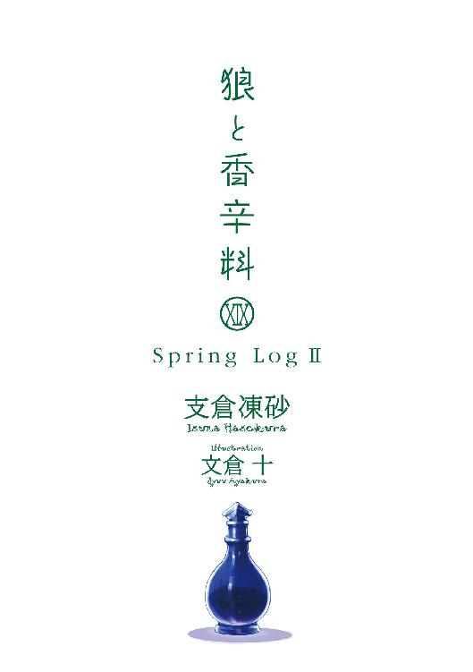
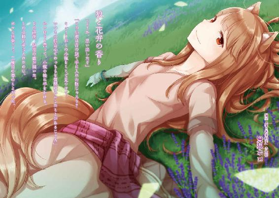
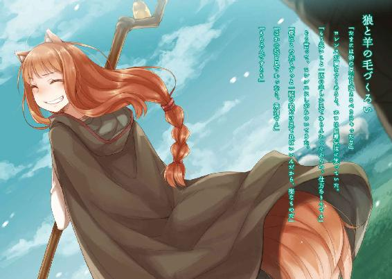
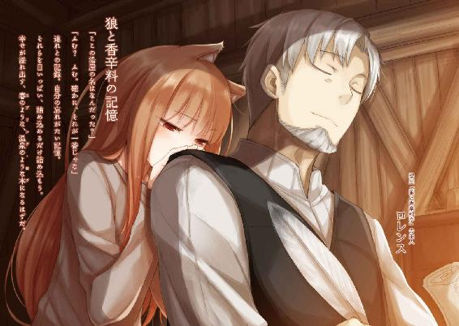
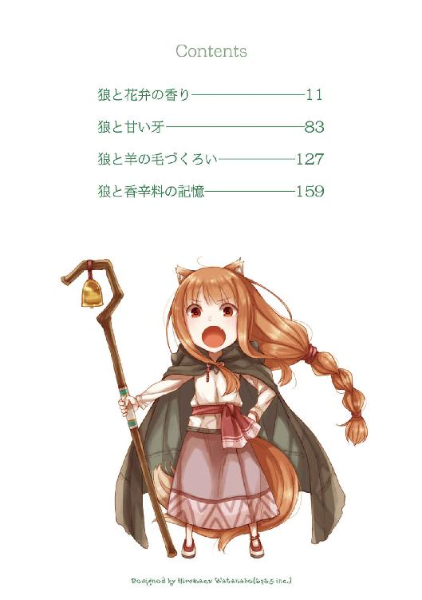
本書（電子版）に掲載されているコンテンツ（ソフトウェア／プログラム／データ／情報を含む）の著作権およびその他の権利は、すべて株式会社ＫＡＤＯＫＡＷＡおよび正当な権利を有する第三者に帰属しています。
法律の定めがある場合または権利者の明示的な承諾がある場合を除き、これらのコンテンツを複製・転載、改変・編集、翻案・翻訳、放送・出版、公衆送信（送信可能化を含む）・再配信、販売・頒布、貸与等に使用することはできません。
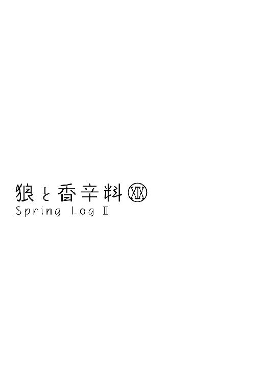
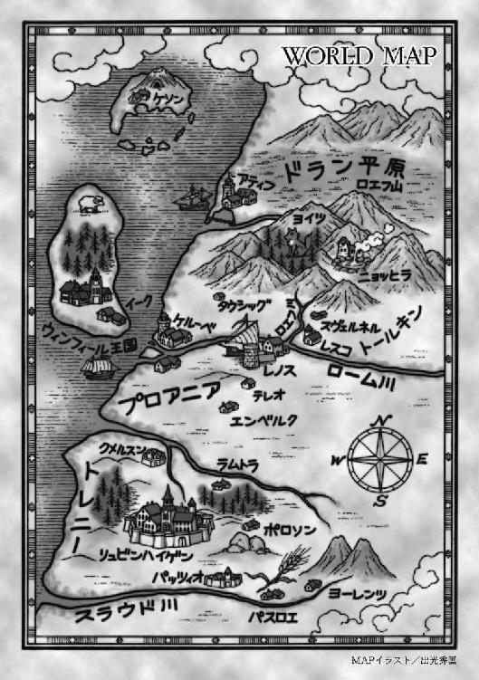
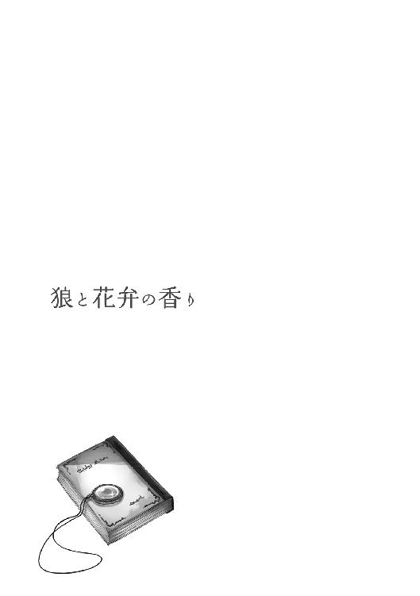
毎日掃除をしても部屋の隅に埃が溜まるのだから、年単位でほったらかしの納屋が散らからないわけがない。村の行事で急に必要になった手回しの石臼を探しに来たのだが、一向に見つからなかった。
「おかしいなあ......捨てるはずもないし、ハンナさんが使っていないなら、ここにしまうはずなんだが」
ロレンスは体を起こして頭を搔いて、埃っぽい納屋の中からいったん外に出た。
「見つからないのかや」
納屋の前にある切株に座っているのは、格子模様の大きな毛織物を肩から羽織ったホロだった。亜麻色の髪をゆったりとした三つ編みにして、長いスカートを穿いておとなしくしていれば、まだ幼さを残した若い新妻に見える。
しかし、ホロは見た目ほど若くないし、毛織物の下からは、同じ色をした獣の尻尾が覗いている。防寒用の毛皮ではなく、本物のホロの尻尾であり、その持ち主は御年数百歳の狼の化身であった。
十数年前に行商をしていたロレンスと知り合い、旅路の果てに、北の地のニョッヒラという温泉地で夫婦に収まったのだ。
「石の匂いで探してくれ......というのも無理だよな」
ホロは狼の化身だけあって頭には大きな三角の獣の耳があり、鼻も犬並みに良い。山で落とし物をしても見つけてくれるくらいだが、石臼は難しそうだ。
「ぬしが毎晩石臼を抱いて寝ておれば、できたかもしれぬがのう」
「浮気をしたら、そんな目に遭いそうだ」
苦しむこちらの姿をじっと見ながら、酒を飲むホロの姿が容易に想像できた。
「たわけ。ぬしが浮気などしたら、さっさと八つ裂きにしてやりんす」
背中を丸めて膝の上に頰杖をつき、にっと牙を見せる。
ただ、ホロはこんなことを言いながら、いざそうなったらきっと怒るよりも悲しむだろう、とロレンスは思う。そして、泣かれたほうが八つ裂きにされるよりもよほど辛いだろうとも。
「肝に銘じておこう」
「ぬしの小さい肝に銘じられればよいがのう」
ホロはそう言って立ち上がると、ひょいと納屋の戸口に立って、中を覗き込んだ。
「物だらけじゃな」
「湯屋を構えて十年だからな。色々溜まるさ」
「ふむ。確かに、あれこれ見るとそれぞれ思い出すのう」
納屋には斧や鋸や金槌など普段から使うものもあれば、客の忘れ物や預かり物、あるいは壊れた椅子の部品やらもある。どれもこの十年を意味づける代物ばかりだった。
「この網も......ミューリが小さい頃にゆりかご代わりにしておったものじゃろう？」
壁にぶら下げてあった、埃まみれの網に指を触れてホロが目を細めていた。
ゆりかご代わり、というよりかは、元気なミューリは放っておくとどこでなにをしでかすかわからなかったので、どうしても手が離せない時は網に入れてぶら下げておいたのだ。
娘のミューリもホロの血を立派に引いて、獣の耳と尻尾が生えている。当時はふさふさの尻尾が体と同じくらいの大きさだったので、網の中にいると罠にかかった仔狼そのものに見えた。
月日が流れるのは、早いものだ。
「昔はこんな小さいのにすっぽり入っておったんじゃなあ」
「立派にすくすく育ってくれたよ」
その一言がため息交じりになってしまうのは、身長が倍に伸びたら、元気さは四倍になってしまったから。
「ん、というか、そうか」
「うむ？」
「ミューリの奴が時折納屋をいじくり回してるだろ。勝手に持ち出してなにか悪戯に使ったのかも」
ホロはきょとんとこちらを見つめ、くくっと笑う。
「いかにもありそうじゃな。一時、膏薬作りがお気に入りだったからのう」
その辺の草やら茸やらをとにかく集め、石で潰して団子にしては悦に入っていた。なにが彼らをそうさせるのか、村中の子供たちが夢中になっていた。
「飽きて片付けるのが面倒で、山のどこかに埋めておるかものう」
「......聞いてみるか」
今度ははっきりため息をついて、扉に手をかけた。
「ほら、閉めるぞ」
納屋の中を物珍しそうに見ていたホロは、その一言にこちらを見る。
そして、おとなしく倉庫から出ようとしたその時、ふと一角に目を奪われていた。
「どうした？」
「うむ......なんか、思い出しそうに......」
ホロはそう言って、木の板でできた棚の上の小物類に手を伸ばす。どれも埃やら黴やらで、もはや輪郭がわからなくなっているような代物だ。その内のひとつを手に取って、埃を払い、服の端で拭うと、出て来たのは小さな硝子の小瓶だった。
「ああ、そうじゃ」
その小瓶を見るや、ホロは小さく笑う。
「これは......石臼を見つけるのは至難の業かもしれぬのう」
「ええ？」
一体なんなのかと聞き返したが、直後にロレンスも気がついた。
そして、口角が勝手に上がる。もちろん、それは苦笑いだ。
「そうか、思い出したぞ」
「この小瓶は昔の旅で手に入れた物じゃろう？ ミューリがこの小瓶をここで見つけて、いつもの好奇心でわっちらを質問攻めにしたことがあるじゃろ」
ホロはそう言って、小瓶の栓に手をかける。
その直後、記憶の蓋が開いた。
この小瓶を手に入れたのは、ホロと出会って、二度目の春のことだった。
行商は渡り鳥のようなもの。北は雪国から、南は海の青い暖かい地方まで、東西南北に年単位で移動する。町商人たちのように縄張りと人間関係に縛られることもないし、気楽といえばそう。唯一の難点は親しい仲間ができないこと、どこに行っても余所者であり続けることだろう。死ぬ時だって、たまたま立ち寄った村か、あるいは路傍で人知れず朽ち果てるのみ。積み荷を運んで村に辿り着けば、それはそれで歓迎されるが、決して仲間にはなれない。
気楽さと孤独は、分かち難いものらしい。
だから、御者台の隣に座る誰かを手に入れれば、夜の寂しさは埋められても、幾分気楽さは減るのを我慢しなければならないのは、道理だったのだ。
「ぬしよ、なぜ東に向かうのかや」
そんな声が、後ろから聞こえてくる。三日前まではにこにこと御者台の隣に座っていたのに、そこからはずっと御機嫌斜めだった。
原因は、分かっている。
「説明しただろ」
手綱を握ったまま、振り返りもせずに、ロレンスはそう言った。
風はまだまだ冷たいが、日差しは日に日に強くなる春の頃。二人は背の高い草がどこまでも続く草原の道を進んでいた。後ろの荷台の上でホロがむくれているのが、ロレンスには気配でわかる。多分、怒りで尻尾も膨らんでいる。ため息をつくのは、ホロの我儘に呆れているからではない。
「俺だって西の町に行きたかったよ。もう三週間も旅暮らしだ。奮発して羊毛の詰まったベッドの部屋にして、心行くまで葡萄酒を飲みたい。朝寝坊して、窓を開けて昼飯を食べながら、賑やかな町の通りを眺めてのんびりしたいさ」
だが、二股に分かれた道で、ロレンスは荷馬車を東に向けた。
なぜならロレンスは行商人であり、東に顧客がいたからだ。
「ぬしはそういう大切なものすべてをなげうって、金儲けばっかりじゃな！」
「ああそうさ。金貨が大好きだ。おお、麗しのリュミオーネ金貨！」
ロレンスがわざとらしい大声で言い返すと、背後からホロの唸り声が聞こえてくる。
ホロも仕方ないとわかっているのだろうが、いったん町で休憩するという期待を持ってしまったのがまずかったのだろう。
「だが、行商で何年も付き合いのある修道院の、その院長様に頼まれたら向かわざるを得ないだろう？ しかも、家の都合で小さい頃から修道院に入れられていたのに、これまた急に呼び戻されて領主に就かされたような、不運な子羊の様子を見に行ってくれという頼みだ。俗世のことなどなにも知らず、右も左もわからないで困っているだろう新米領主とお近づきになれるかもしれないうえ、力になれるかもしれない！ 商人なら誰だって行くだろうし、行かない奴は......商人じゃない」
数々の冒険を経て、もう危ない目に遭うような大仕事は引き受けない、とホロに約束しはしたが、これはそこに含まれず、かつ、うまみの大きい珍しい仕事だ。
対価は休息がやや遠のく程度で、それだけで領主の知己が得られるのだから、利益しかない。
ホロは渋々とだが、すでに納得していたはずなのに、なおも言い募った。
「ぬしよ」
ホロの低い声は、怒っている証だった。このままだと本当に怒らせて、夜寝る時にその暖かい尻尾を毛布の中に入れてくれなくなるかもしれない。
春とはいえ、夜の野宿はまだ冷えるのだ。
「ああ、わかってる。わかってる。その分の埋め合わせはするよ」
「......」
返事がないので、ため息を挟んでから、付け加えた。
「これから向かう先は、小さいとはいえ、一応は領主の館だ。それなりのもてなしは期待......」
と、そこまで言って言葉が途切れたのは、首筋に生暖かい息を感じたからだ。
ホロはその獣の耳で、人の噓を聞き分けることができる。
ロレンスの言葉の中身を感じ取るくらい、朝飯前だろう。
後ろから首に嚙みつかれる前に、諦めて振り向いた。
「わかった。約束する。領主の館に向かったとして、この行商人風情がとけんもほろろだったら、近くの村に行く。そこでしっかりと金を使う」
羊毛と絹のベッド、とはいかなくとも、藁束の詰まったベッドに屋根のある部屋。それから潰したての豚や鶏か、悪くてもこの季節なら野菜や茸のごった煮にありつけるだろう。そろそろ葡萄も栽培できるくらいに南下してきたから、葡萄酒だってふんだんにあるはずだ。
「もう冷たい麦粥と、腐りかけた麦酒とはおさらばだ」
半目で睨みつけてくるホロは、それでもしばらくこちらを見つめていた。
そして、ようやく大きなため息をつくと、最後にふんと鼻を鳴らす。
「それと、なによりもまずぬしは水浴びじゃ」
「えっ」
ロレンスは驚き、思わず自分の服の匂いを嗅いでしまう。まだ全然大丈夫だろうと思っていたのだが、直後にはっと思い至る。ホロが町に寄っての休憩を欲していたのは、もしかしてこれが原因だったのかと。
「寒い夜にわっちの尻尾で暖を取りたければ、もう少し身ぎれいにしてくりゃれ。蚤やら虱やらがついてはかなわぬからのう」
ホロはふさふさの尻尾の手入れに余念がない。傭兵が磨き上げた剣や鍛え上げた肉体を誇るのと同じように、ホロは尻尾を誇りにしている。
今にも虫が湧きそうな旅の連れに必死に我慢していたが、ついにそれも限界ということか。
「......そんなに臭くないだろ......」
ロレンスは、一応の抗議をする。一人旅の頃なら気にもしなかったが、ホロと旅をするようになってからはそれなりに気をつけている。
しかし、裁判権はホロにある。
「わっちがいつまでも芳しい花の香りじゃから、ぬしは気がつかぬだけじゃ」
鼻に手を当てて、そんなことを言っている。確かにホロはいつもほんのりと甘い香りなのだが、そのからくりはロレンスだって知っている。
「尻尾の手入れに使ってる油のおかげだろ。高かったんだからな」
ホロはじろりと睨みつけてくる。
「たわけ。わっちゃあ元々こんな感じじゃ！」
「......はいはい」
言い争うだけ不毛なので、ロレンスは前に向き直り、手綱を握り直す。たとえ油のおかげとはいえ、今もそよ風に乗って柔らかな甘い香りが鼻をくすぐってくるので、悪いことはない。
しかし、こんな匂いだったろうか？
そう思っていたら、ホロもすんすんと鼻を鳴らして、辺りを見回していた。
「むう、なんか急に甘い匂いがするのう。菓子でも焼いておるのかや」
「いや、これは......」
と、話していたら、草原の間の道が大きく曲がり、その先の土地が見えて、納得した。
「ほほう」
ホロの驚いたような声も、むべなるかな。
「ぬしよ、すごいのう！」
そこで線を引いたように植生が一変し、見渡す限り、紫色の絨毯が広がっていたのだった。
「じゃが......何事も過ぎたるは及ばざるがごとしじゃな......」
ロレンスはそうでもなかったが、鼻の良いホロは花畑の間の道を行く間中、鼻を塞いでいた。
それに香りに引き寄せられてか、蜂もすごい。
おそるおそる紫色の花畑を抜け、黒ずんだおんぼろの水車がぎしぎしと音を立てながら回る小川を渡った先に、ようやく目的の村はあった。事前の情報では、ハディシュ、という名らしかった。
小さな村だというのは、家と家を繫ぐ道が細いことですぐにわかる。噓か本当か、村の道というのは村人が死んだ時に、棺を担いで運ぶだけの幅がとられていると聞く。沿道に立って死者を見送る人もいないようなところでは、荷馬車で通ればはみ出すほどに狭い。
それに、目を引くのは家と家との距離だった。
「ここの村の連中は仲が悪いのかや？」
ロレンスと出会う前までは、パスロエという村の麦畑に何十年、あるいは何百年と潜んでいたホロなので、村の事情ならそれなりに詳しい。
ハディシュの村人の家は、隣の家の戸口に立つ者の顔も見えないほど、互いに離れている。
「その割には道が綺麗だ。草が刈られて、踏み固められている。鶏の数も多い」
村人同士の仲が悪ければ、家畜を盗んだ盗んでないでとっくにもめ事を起こしているから、放し飼いにはしない。
甘い風の吹く村を眺めていれば、のどか、という言葉以外が見当たらなかった。
「なにか事情があるんだろ。あれだけ草原が広がっているのに、ろくに開墾されていないのも不思議だしな」
市壁に囲まれた都市はどこも人口過密で、肥沃な大地があれば明日にでも鋤を担いで畑に出たいと望む者は多い。
「土地の王が悪い輩で、皆逃げてしまったのではないかや？ わっちらも逃げるべきではないのかや？」
この期に及んでもなおそんなことを言う。
「その可能性がなくはないだろうが、院長様の話では、新しい領主の座に就いた人物は実に信仰心の篤い人だそうだ。意地悪はされまい」
「......ふむ」
とはいえ、信仰に篤いと聞いて、ホロは嫌そうな顔をしていた。
「確かあれじゃろ。連中は炒った豆と水で日々を凌ぐんじゃろう？ 食卓についてもまるで誰かが死んだみたいに、押し黙って、陰気に......」
粗食を旨とし、沈黙の戒律を守るのが立派な修道士だ。
もちろん、ホロの自堕落な生活とは決して相容れない。
この数日ぐずっている理由のひとつだろう。
「そんなところに行くくらいなら、ほれ、あそこの家はどうじゃ。軒先に玉ねぎと鱒の干物がぶら下がっておる。庭には鶏と豚がおるし、菜園の土は真っ黒じゃ」
ホロが指差したのは、千年後もそのままの形を保っていそうな、ずんぐりした藁ぶきの屋根がうずくまった犬のように見える家だ。確かに、寝床はちくちくする藁のベッドだろうが、食事だけはおいしそうだった。材料は畑で直接採れるので、酒もたっぷりあることだろう。
「だが、修道院の修道士全員が堅物なわけじゃない。ましてや、辺鄙な寒村を治めているとはいえ、立派な領主の家系の人物が入るような修道院だ。炒った豆と玉ねぎで歓待、ということはないだろう」
それに、領主の館で寝泊まりすることそのものに意味がある。一度宿泊を許されたなら、次もまた許されるからだ。信用というものは、そうやって積み上げていく。
そう説明すると、ホロは苦虫を嚙み潰したような顔をしていた。
「しかも相手はいきなり俗世に放り出されてまごついている若い領主だと言う。うまく取り入れたら、俺たちが店を開く時にもきっと力になってくれるだろう」
損得づくめの物言いだとは自覚しているが、もちろん相手に損はさせないつもりだ。
物の相場を知らない新領主に付け入って荒稼ぎを企む怪しげな商人がいたら、片っ端から追い出してやる。
「ぬしは......もうよい！」
ホロはついにそんなことを言って、荷台で丸くなってしまった。
だいぶ機嫌を直してくれたと思ったのに、旅の疲れからかどうにも怒りっぽい。
しかし、修道院に立ち寄るまではそうでもなかった気がする。そんなに西の町に行きたかったのか？ と奇妙な感じもした。
なんだろうか、と思っていると、ちょうどホロが指差した家から、ぞろぞろ人が出てきた。
背の低い禿頭の老人を先頭に、村人と思しき男連中が数人だ。一様に難しい顔をして、額を集めて話している。中には大袈裟に天を仰いだり、首を大きく振ったりしている者もいる。
それから、全員が家の中の様子を窺っていた。
「ホロ」
小さく、肩越しにその名を呼ぶ。荷台で不機嫌のあまり丸まってはいるが、ホロならその耳で彼らの会話が聞こえているだろう。赴いた先でなにか揉め事が起きているのなら、把握していたほうがいい、とはホロも理解しているはず。
「ふん」
しかし、ホロからの返事は鼻を鳴らす音だけだった。そんなに不機嫌なのか、と驚いて振り向くのと、家の前でたむろしている者たちがこちらに気がつくのはほとんど同時だったらしい。
視線が自分に集まるのを感じて前に向き直ると、全員がこちらを見つめていた。
「どうも」
荷馬車を適度な距離で止めて、ロレンスのほうからそう言った。
「皆さんお揃いで。春の祭りの御相談でしょうか」
不穏な感じになど欠片も気づかない間抜けです、とばかりに笑顔で声をかける。
村人たちはやや戸惑いがちに互いに目配せして、結局は小柄な老人に視線を向けた。
「旅の商人さんかね。うちの村の祭りは夏ですよ」
朗らかな愛想笑いを向けてくる。どうやら、この老人が村長らしい。
ロレンスが御者台から降りると、村人の何人かは荷馬の顔をしげしげと見て、良い馬だ、とかなんとか呟いていた。ホロは荷台で丸くなっているので、誰も気がついていないようだ。
「ええ、普段はもっと北の行商路を回っているのですが、頼まれ事を引き受けまして」
「頼まれ事？」
「こちらの領主様が新しく代替わりなさったとか。その古い知己の方が、自分の代わりにご挨拶に伺って欲しいと」
領主のことを口にした途端、村長の後ろにいる者たちの間で、意味深な目配せがあった。
農作業に忙しいはずのこの時期、昼間から集まっているのはどうやら領主が原因らしい。
「ほほう。ということは、領主様のいらした修道院の？」
「はい。院長様の命により」
なにが原因で村人と領主が対立しているか知らないが、とにかくそんなことには気がつかない振りをした。自分は用事を済ませに来ただけだと、とぼけた笑顔で主張する。
「つきましては、領主様のお屋敷がどちらにあるかお聞きしたく」
市壁の中に住む都市貴族とは違って、田園領主の屋敷はどこにあるのか余所者にはわかりにくい。なんにせよ道案内を頼むつもりだったのでそう尋ねると、村長はちらりと肩越しに後ろの者たちを振り向いた。
「それはちょうどよかったですな」
そう言うと、家の前にたむろしていた村人たちが、さっと入口前を開けた。
「用事がありまして、領主様はたまたま当家に。商人さんのことをお伝えしましょう」
村長が言うと、村人たちの間を抜け、家の中に入る。
すると、ほどなく戻って来て、後ろに人がついて来た。
「こちらの商人様です」
村長が手で示すその後ろに立つのは、長軀で、肩幅が広く、胸板も分厚い大男だった。髭は野生の羊を思わせる力強さで胸元までこんもりと膨らみ、二の腕の太さは脚が生えているのかと見紛うほど。服には権威を示す毛皮の縁取りが為されていたが、山賊の頭領にしか見えない。
もちろん、屈強な修道僧はいくらでもいるし、老け顔の者も大勢いる。
しかし、どう見たって年齢は五十を超えていて、手の指の太さと爪の形が、隠しきれない長年の労苦を示している。
これが、修道院長の言っていた、修道院から突然実家に呼び戻され、領主の座に就いた迷える子羊だというのか？
じろり、と本当に音がしそうな勢いで動いた目が、頭上からこちらを見つめている。
ロレンスが言葉もなく立ち尽くしていると、ふと、その大男は後ろを振り向き、横にどいた。
「え？」
そして、その陰から出て来たのは、赤い髪をひっつめてお下げにした、綺麗なおでこの少女だった。
「あなたが、イヴァン修道院からの使いの者ですか？」
丈の長いローブにはほとんど刺繡もなく、質素なつくりだが綺麗に織られた亜麻布だとわかる。首から提げている飾りも、涙の形をした琥珀だった。
なにより、隣にいた大男が、窮屈そうに体を折り曲げている。
だとすれば、答えはおのずと決まっているのだが、あまりにも唐突過ぎて頭の中でうまく繫がらなかった。
「どうされました？」
そう尋ねられ、ようやく我に返る。この人物が、領主なのだ。
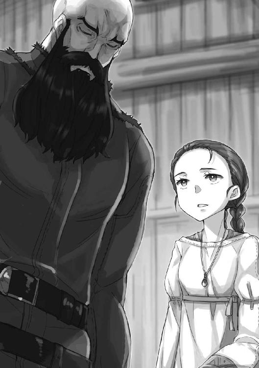
普通ならば家督は長子の男子が継ぐはずだが、他にいなければそういうこともある。それに、ロレンスはようやく思い出した。長いこと付き合いのある修道院だったので、完全に失念していた。俗人は中に入れないからと、いつも門の外でやり取りしていたので気に留めてすらいなかったが、あそこの正式名称は、こうだ。
聖イシオドルス兄弟団付属、イヴァン〝女子〟修道院。
家の事情で修道院に入れられていたのは、遺産相続権が拡散するのを防ぐためと、嫁資を用意することができない貴族が娘を厄介払いする常套手段。
突然家に帰されたところで右も左もわからない上、大変な目に遭っていないかと院長が胸を痛めるのは当然だろう。
そして、どうして修道院を経由してから、ホロがずっと不機嫌だったのかも理解した。
「あ、いえ、失礼しました」
ロレンスは背筋を伸ばし、懐から修道院長の手紙を取り出した。
「こちらが、院長様からの手紙です」
手紙を受け取るその娘は、少女と呼んで差し支えない。領主としての振る舞いがわからないのも、ロレンスの手から直接手紙を受け取ろうとしたところから明らかだった。
インゲン豆の莢を割っただけで赤くなりそうな華奢な手が手紙に伸びようとしたのを、横から岩をも砕きそうなごつい手が制した。少女はびくっとしていたが、ロレンスは驚かない。高貴なる者は、見ず知らずの下賤の者から直接物を受け取らないのだから。
「あ、ありがとう、ございます」
下男と呼ぶより、家臣と呼んだほうが良いはずの大男から手紙を受け取り、少女はロレンスに向けてなのか、それとも大男に向けてなのかわからない曖昧な感じで礼を言った。
ただ、さすが修道院にいただけはあって、手紙を開ける手には躊躇いがなかったし、手紙を読む速度は速かった。院長からの温かい言葉でもあったのか、頰をほころばせる様は、日の当たる庭で聖典を繙くのが似合うようなあどけなさだ。
修道院では仕入れをけちりにけちり、ついに町の商人たちが音を上げて、代わりにどんな些細な儲けでも働く旅の行商人に納品を任せるような院長が、心配して気に掛けるだけのことはある。
ロレンスは、幼い領主の綺麗なおでこと茶色の目を見て、静かにため息を吞み込んだ。
ホロは、これをずっと怒っていたのだ。
女子修道院なのだから、年若い娘が実家に戻ったことくらいすぐ察して然るべき。そこに喜び勇んで赴くとはどういう了見なのだ、と怒らないほうがおかしかった。
ホロの尻尾の上に腰を下ろして踏んづけたまま、ずっと気がつかなかったわけだ。
荷台で荷物の振りをしているホロのほうをちらりと振り向いて、この後のことを考えるとやや気が滅入った。
「ロレンス、さん？」
そこに、不意に名前を呼ばれて我に返る。
「はい」
年若い女領主は、手紙にロレンスの名を見つけたらしかった。
「クラフト・ロレンスと申します。行商人をしております。院長様には長い間お世話になっておりまして」
「ということは、修道院のパンがおいしいのは、ロレンスさんのおかげだったのですね」
親しげな口調と、柔らかい笑顔。大男が隣でまばたきもせず、威圧するようにこちらを見つめ下ろしている気持ちが痛いほどわかる。
修道院から出て来たばかりの、無垢な少女だった。
「パンをおいしくするのは、パン職人と、神の祝福ですよ」
そう謙遜すると、若き領主はくすくす微笑んでいた。
「それはそうと、お手紙には旅の同行者がいらっしゃるとありますが」
幼い領主の目が、ちょっと不安げに荷馬に向けられたのがわかり、笑いそうになる。
「失礼をご容赦いただきたいのですが、荷台で伏せっています。長旅が応えたようで」
「まあ、それは」
目を見開いて驚き、わたわたと手紙を畳み始めた。
「それでは、すぐに館のほうへ」
誤魔化しの噓をついたことが心苦しくなるくらい、真剣な顔つきだった。
「ですが、領主様はなにか御用の最中だったのでは」
ロレンスが言うと、赤毛の少女は慌てて周りを見回したが、すぐにその顔が哀しげな笑みに変わる。
「いえ......ひとまず、終わりましたから」
その言葉に、視界の隅にいる村人たちの何人かが、やれやれとばかりに肩から力を抜いているのがわかった。少女は巻いた手紙を大男に手渡すと、失礼、と言って、事の推移を見守っていた村長の前に立った。
「この件については、また後日御相談いたしましょう」
「仰せのままに」
村長は恭しく頭を下げるが、よそよそしい。
若き領主は気がついているのかいないのか、こちらを促して歩き出す。馬に乗れないのか、徒歩で館に戻るらしい。ロレンスは御者台に飛び乗り、手綱を握って、領主とその斜め後ろにぴったりついて歩く大男を追いかける。振り向けば、村人たちがやれやれという仕草をしながら、村長の家に入っていくのが見えた。村長はしばらくこちらを見送っていたが、やがて家に戻っていった。
一体なにを揉めているのだろうか。
そう思いつつ姿勢を戻したら、先頭を行く少女が振り向いてこちらを見つめていた。
「気になりますか？」
困ったような笑みと共に、そんなことを言われた。
数瞬迷ったが、踏み出すことにした。
「院長様からは、領主様のお力になるようにと」
おそらく手紙にもそう書いてあるはずだ。
領主、と呼ばれた少女は困ったような笑みのまま、立ち止まる。
「領主様、はやめてください」
「では、どのようにお呼びすれば？」
そう言うと、少女は「あっ」と自分の口を押さえていた。
「すみません。自己紹介がまだでしたね」
こほんと咳払いすると、胸に手を当てながら言った。
「アマーリエ・ドラウシュテム＝ハディシュと申します。当地の七代目の領主になります」
信じられませんけれど、とは、小声で恥ずかしげに付け加えた言葉だ。アマーリエが修道院に入れられていたことから、先代領主にはきちんと跡取りとなる息子がいたはずだ。先代とその息子が同時に亡くなったということは、なにかの事故だろうか。
アマーリエがそのことに落ち込んでいる、というふうに見えないのは、アマーリエが気丈な娘というわけではあるまい。多分、物心ついたころには修道院にいて放っておかれた、というのが真相だろう。
「では、ドラウシュテム様？」
「修道院では、アマーリエと呼ばれていました」
仰々しい家名もあまり好きではないらしい。
ただ、領主を名前で呼んでいいものか、一応大男に視線を向けると、諦めたような目を向けられた。この寡黙な家臣とアマーリエの間で、すでに一悶着あったのだろう。
「では、アマーリエ様」
「様も堅苦しいですが......」
「アマーリエ様」
大男が初めて口を利いた。アマーリエは大男を見て、こちらもなにがしかの妥協点が二人の間であるのだろう。渋々と頷いていた。
「では、それでよろしくお願いします」
「畏まりました」
ロレンスは恭しく頭を垂れておいた。
「それで、私はアマーリエ様の俗世のペンになるように、と院長様に命じられたわけですが」
剣はそこに大男がいる。
アマーリエは再び道を歩き出し、露骨に大きなため息をついていた。
「はあ......。まったく、嘆かわしいお話なのですが」
そう切り出し、館に着くまでの間、回りくどくてまとまっていないが、結局のところ単純な揉め事をロレンスに説明したのだった。
ドラウシュテム家のお屋敷は、お屋敷というよりかは、少し豪勢な農家という感じだった。
寒村を支配するだけであれば、領主とは名ばかりで、自分たちも畑仕事に精を出さなければやっていけない。ドラウシュテム家には厩の他に羊小屋があり、ため池では魚が飼われているようだし、鶏や豚が中庭で草をついばんでいた。そのすべてを、あの大男が管理しているのだろう。
ただ、質素ではあったが全体的によく手入れがされていて、過ごしやすそうな館だった。
これが小山の上に築かれた要塞や小城だったりすると、狭い場所で領主とその家族と家臣団がぎゅうぎゅうになって暮らしていることもある。領主として楽な生活を送っている者というのは、数の上から見れば圧倒的に少数なのだ。
館に着くと、大男、名をヤーギンというらしいアマーリエの家臣が、客室を調えてくれた。
アマーリエたちも昼食をまだ食べていないらしいので、用意している間、休憩して欲しいとのことだった。
通された部屋は土の床で、屋根を支える梁がむき出しの田舎風の部屋だったが、やはり掃除は行き届いているし、ベッドの藁も新しかった。固い荷馬車の荷台に慣れた身には、十分すぎるくらいの贅沢といえた。
「ふう。これで少し休憩できるな」
館に着いて、ようやくホロは荷台から姿を現したが、その修道女姿にアマーリエは嬉しそうだった。ただ、旅のための方便としてその格好をしていると知ったら、がっかりしていた。
まだ気持ちは修道院のほうにあるのだろう。
一方、アマーリエは修道院で培った倫理観に照らし、ロレンスとホロを同室にすることに対していささかの懸念を抱いているようだった。なので、ロレンスはホロとはこの行商が終わった後、店を構えて結婚するつもりだと伝えてある。
噓ではないのに、なぜか噓をついている気がしてしまうのは、なんとなく現実味がないからかもしれないし、そう言っておけばホロの機嫌も少しは良くなるだろう、と期待してのことだったからかもしれない。
部屋に通され、荷物を置く間もなく、ホロはベッドに倒れ込む。
そして、言った。
「たわけが」
ロレンスは部屋に備えつけの長持に荷物を詰めて、そちらを振り向いた。
「ぬしは、困っておる雌がおったらどこにでも向かって手助けするのかや？」
お人好し、というよりも、浮気者、という語感が強かった。
「いや、それはだな」
ロレンスが言い訳しようとすると、ホロは枕に顔をうずめて長い長いため息をついてから、横目にロレンスのことを見る。
「黙りんす」
黙れと言われたら黙るしかない。
ロレンスがおとなしく口を閉じると、ホロは今度は大きなため息をついて、ローブの下の尻尾をばさばさ言わせた。その顔は、怒っているというよりも、疲れきっていた。
「はあ......。じゃが、ぬしが気の利かぬ阿呆じゃと怒っておったら、まさかそもそもこの土地の王が雌であることにすら気がついておらぬたわけじゃったとはのう」
村長の家から出てきたアマーリエが領主であることに驚いたのは、すっかり見抜かれていたらしい。
「ぬしは途方もない間抜けじゃな」
「領主は男って思い込んでたんだよ」
ロレンスが言うと、ホロはぷいと反対側を向いてしまう。
ただ、それは拒絶というよりも、もっと別のなにかだ。
ロレンスも負けじとため息をついた後、ホロの寝ているベッドの隅に腰かけた。
「お前が不機嫌だった理由がそこにあったとは、全く気がつかなかった」
「......」
ホロはこちらを見てくれないが、フードを外した頭の上の獣の耳は、こちらに向けられている。賢狼の三角の耳は、人の噓を聞き分けられる。
しばらく耳を揺らしたのち、ゆっくりと頭を動かして、こちらに向き直る。
「ふん。わっちがなぜ不機嫌になるんじゃ？ ぬしは浮気をできるほど肝が太くないじゃろうし、ましてや、ほかの雌からモテるほど器量が良いわけでもありんせん」
辛辣なことを言われているはずなのに、ロレンスは笑うのを堪えるので必死だった。
ホロは、女子修道院から実家に呼び戻された世間知らずの娘のため、勇んでハディシュに向かうロレンスの様子にやきもきしていたらしい。なにかあるはずもなかろうに、妙なところで心配性なのだ。
そうしたら、当のロレンスはその領主が女であることにすら思い至っていなかった。
そんな取り越し苦労の後の、その台詞。
可愛くないわけがない。
ロレンスは、ホロの頭に手を伸ばし、柔らかい亜麻色の髪の毛を梳いた。
「そうでしょうとも」
自分の相手をしてくれるのは、心の広い賢狼様ただひとり。
見え透いていても、いかにわざとらしかろうとも、そういう体裁が大事なのだ。
「ただ、俺が困っている女の子を颯爽と助ける場面を見るのも悪くないと思うが？」
耳をひくひくさせながら頭を撫でられていたホロは、目を閉じたまま笑う。
「......たわけが」
この寄り道に苛々しつつも、強硬に反対しなかったのは、きっとそういう理由だ。
お人好しという部分ではホロも自分と似たり寄ったりだとロレンスは思っているし、自分が誰かを助ければ、ホロもそれを誇りに感じてくれるだろうと思っている。
憚りなく言えば、格好良く思ってくれるはずだ、と信じている。
口に出せば鼻で笑われ、ぼろくそにけなされるだろうが、それでも最後には期待するような目を向けてくれる気がする。そして、うまくやったらきっと、褒めてくれるだろう。
わさわさと音を立てていたホロの尻尾が、やがて静かになる。
数瞬の沈黙。
ロレンスがホロの頰に口づけをしようと身をかがめたら、ぱちんと頰を両手で挟まれた。
「水浴びしてからじゃ」
それから、ぐいっと押しのけられてしまう。
「......そんなにひどいか？」
ロレンスは服の匂いを嗅いでみるが、自分ではわからない。
ただ、姫がそう言うのだから、従うほかない。
「それに、ぬしには仕事があるじゃろうが。なんだか面倒そうなことじゃったが、大丈夫なのかや？ わっちの前で、無様を晒すわけではあるまいな？」
荷台でふて寝していても、ホロは話をきちんと聞いていたらしい。
というようなことを言ったら、きっと怒って夜に尻尾を抱かせてくれなくなる。
「お前の能力ならすぐに解決できるかな」
そう言うと、ホロはふんっと鼻を鳴らして枕を抱いた。
「わっちゃあ犬ではありんせん」
ロレンスは肩をすくめ、ベッドから立ち上がった。
「手回しの石臼を探すこと自体は、難しくないよ」
道すがらアマーリエから聞いた村人との揉め事は、村の水車の修理を発端にしたことであり、つまるところ金の話だった。
水車は長いこと修理をされておらず、職人を呼んでみてもらったところ、かなりの金額が必要になるらしい。元々調子が悪かったのに、領主交代のごたごたで放置されている間に完全に壊れてしまったのだ。水車は基本的にその土地の権力者の物だが、ドラウシュテム家には自力で修理できるだけの資金がない。それに、水車は村人が利用して利用料を徴収することで運用されるものだから、アマーリエはヤーギンの助言を受けて、至極あたりまえの解決策を思いついた。水車の設置費用を村人から徴収しようと。
しかし、当然村人たちの多くは反対する。全員が同じだけ水車を必要としているわけではないからだ。水車の設置で得をするのは、手広く畑を持っている家か、羊を多く飼う家になる。
あるいは、若い働き手がいない家なども、お金を払って水車を使えたほうが楽になる。ほかならぬドラウシュテム家も、税や地代として麦を納められたりする以上、水車をとても必要とする。
一方で、水車の利用料で浮いた部分は、ドラウシュテム家の金庫に入るのではなく、橋の修繕や、道の整備に使われる。だからこれまでは村人たちは麦を粉にする時などは、必ず水車を利用すること、と決められていた。
だが、貴重な現金を徴収される村人からしてみれば、できれば水車は利用したくない。
そこで先代の領主の時代から、村人たちは水車を利用しなくても済むように、手回しの石臼をこっそり拵えていた。
アマーリエは、その不正を正すべく、直談判に赴いていたというわけだ。
「その石臼とやらがあるせいで水車を利用してくれないのなら、確かに石臼を取り上げるのは道理な気もするがのう......。じゃが、なんというか」
「四角四面。真面目なんだな」
「ぬしとは大違いじゃな」
ホロを見やると、笑顔で小首を傾げている。
「ぬしは柔軟じゃ、という褒め言葉でありんす」
甘嚙みは機嫌が直った証拠でもあるので、肩をすくめるにとどめておいた。
「で、ぬしはあの小娘に手を貸すのじゃろう？」
「貸すよ。理はアマーリエさんのほうにあるしな。だが......」
「じゃが？」
「お前も聞いてただろ。水車はほぼ毎年、火に巻かれる」
アマーリエの説明がなんだかわかりにくかった最大の原因であり、村人たちが腰を据えて反対しているのもそこに大きな理由があった。
「にわかには信じられぬがのう」
水車は川に建てられて、川には水が流れている。しかも夜間に蠟燭でも使わない限り、失火の危険はほとんどない。
だが、水車を遠目に見た時、確かに妙に黒ずんでいた。あれは水黴ではなく、焦げだという。
村の家が極端にまばらに建っているのも、そこに起因しているらしかった。
「あの花畑が、夏になると野火を起こして一面火の海とは......わっちの暮らしておった地方では聞かぬ話じゃ」
油分を多く含む草花ではたまにあることで、春に花を咲かせて夏に結実すると、夏の日差しに照らされて発火し、焼け野原で発芽するというはた迷惑な性質をもっている。もちろん他の草花は火で根こそぎにされるので、一度その種類の草が繁茂すると一面を支配されてしまう。
この村の不幸は、そんな花がある日なにかの偶然で根付き、繁茂してしまったことだ。
アマーリエが言うには、祖父の時代にはなかったものだし、近隣の地域で根付いているのはハディシュ村の近くだけらしい。
「そして、川によってようやく火の勢いは止まるが、迫った火によって水車はじりじりと炙られ、劣化が進む。しかも昔は野火の度に家が燃え、木材を大量に必要としたせいで、近くの森はすべて草原に変わってしまった」
「家が離れておるのも、全滅を防ぐ知恵とはのう」
人が少ないのは、家を建てる資材を供給してくれる森がなくなってしまったのと、村の面積の半分をあの紫色の花に取られてしまったからだという。
「立て替えた水車を長持ちさせるには、夏が来る前に花畑の花を極力刈り取る必要があるが、忙しい季節だから村人たちは協力したくない」
「水車がなければその苦労もなし、というわけかや」
しかし麦は粉に挽かなければパンにできないし、手で挽くにはあまりにも時間がかかりすぎる。それは大局的に見れば、村人の生産性が落ちて、税収が落ち、村の経済がしぼんでいくことを示している。水車があれば、その時間を節約して、村人たちは畑をより多く耕すことができる。余剰の作物は町で売り、様々な買い物ができるようになる。それは高台の上から見れば、村人たちのためになることでもある。
そのことをアマーリエに説明したのはヤーギンらしく、そのヤーギンは先代の領主から教わったそうだ。先代は、名君と呼んでいい類の人物だったらしい。
とはいえ、正論がいつも受け入れられるわけではないので、こんなことになっている。
「ヤーギンさんが腕力で手回しの石臼を取り上げることもできるだろうが、できれば避けたいだろう。禍根を残すからな。それで、アマーリエさんが直接出向いて、村人たちに自主的に石臼を差し出してもらおうとしていたってわけだ」
「ふむ。じゃが、ぬしが隠してある石臼を見つけて召し上げたら、結局同じではないかや？」
ホロは特になにも考えずにそう言ったらしい。
答えるロレンスは、ちょっと皮肉な感じに笑っていた。
「違うよ。ヤーギンさんもアマーリエさんも、この地でずっと暮らす。だが、俺は旅の行商人。村の災いはすべて、旅人がもたらすものさ。俺がアマーリエさんに入れ知恵した形にして、村人の怨嗟は俺が引き受ける。そして、俺が村から出れば、恨まれた人物はこの地からいなくなる。アマーリエさんはそんなこと思いもしてないだろうが、ヤーギンさんのほうは俺の使い方を先刻御承知って感じだった。だからこんなにいい部屋を用意してくれたんだろう」
一ヶ所に居着くことのない行商人は、一ヶ所に居着かないことに価値を見出される。必要な物を村にもたらし、必要でない物を村から持ち出してくれる。そして、そういう扱われ方は麦の豊穣を司る神と呼ばれていたホロにも覚えがあるはずだった。
神は村人の一員にはなれず、豊作の時は崇められても、不作の時は責められるし、他のあらゆるどうしようもないこともまた、神のせいにされる。やり場のない怒りを仲間の村人に向けることはできないが、余所者のせいにしておけば丸く収まるからだ。挙句に、必要なくなれば崇めることすらしなくなる。
その結果、ホロはロレンスの荷馬車に潜り込んだ。
考えてみれば、自分とホロの出会いも、似たような使い方をされる道具が、他に置く場所もなく同じ場所にしまわれたということなのかもしれない、とロレンスは思う。
ただ、ロレンスは己の仕事の運命を不幸とは思わない。
そのおかげで、ホロと知り合えたのだから。
「そんな顔するなよ」
ロレンスは苦笑し、傷ついたような顔をしているホロの、小さな鼻をきゅっとつまむ。
「今は御者台でその重荷を分かち合ってくれる者がいる。それ以上になにを望む？」
「......たわけ」
ホロはロレンスの手を払い、嫌そうに言った。尻尾だけが、そわそわとしていた。
「じゃが、本当に見つけられるのかや？ いざとなれば、わっちが狼になれば石臼についた麦粉の匂いから見つけられるやもしれぬが」
そう言うホロにロレンスが向けたのは、今度こそ得意げな笑顔だ。
「悪知恵勝負なら負けないさ」
ロレンスが胸を張ると、ホロはきょとんとしてから、くすりと笑う。
「浅知恵の間違いじゃろうが」
「手厳しい」
ロレンスが肩をすくめると、ホロは握っていたロレンスの人差し指に、自分の人差し指を絡みつける。ホロは意外に乙女なのだ。
だから、紳士を自認するロレンスは一応こう言っておく。
「まあ、楽しい仕事じゃないだろうから、石臼を回収する場にはついて来なくてもいいぞ」
ホロは笑顔のままロレンスの手を自分の口元に引き寄せると、牙を見せる。
「わっちゃあぬしのめそめそした顔を見るのが好きでのう？」
「ほう、それは気が合うな」
ホロの耳と尻尾が、ぱたぱたっと揺れた。
「たわけ」
首をすくめて笑うホロは、ロレンスの手に口づけをする。
そして、手を離した。
「では、ぬしの仕事ぶりを見せてもらうかや」
ほどなく扉がノックされ、ヤーギンが呼びに来たのだった。
出されたパンは焼き立てには程遠いが、小麦から作られた白パンだった。スープも塩と酢だけで味をつけたものではなく、パン屑でとろみをつけて、羊肉がごろりと大胆に入っていた。
やや驚いたのは、テーブルの上にある酒瓶だった。
「立派な酒瓶ですね。綺麗な緑色だ」
長い長いアマーリエの修道院仕込みの祈りが終わり、ようやく食事が始まって、ロレンスはとりあえずそんなふうに口火を切った。
「お父様の趣味だったそうです。お屋敷の地下にたくさん硝子製品があって......。本当にたくさんあるので、いくつか残してほかを売ったら、水車の費用も賄えるのではと思ったのですが」
困ったように話すアマーリエに、テーブルの隅に窮屈そうに座っているヤーギンがちらりと視線を向けていた。窮屈そうなのはヤーギンの身体が大きいのと、きっとヤーギンの常識では、主人と家臣はテーブルを共にしないからだ。
二人の間には大きな発想の違いがあるようで、硝子の収集品を巡ることもそうなのだろう。
公平無私の精神から、アマーリエは当然のように硝子を売ることを考えたのだろうが、ヤーギンからすればとんでもないことに違いない。先代領主の収集品ならば、いわば家の宝なのだから。
「ですが、手回しの石臼の使用を禁止すれば、ひとまずは水車の問題は解決されるでしょう」
パンをちぎってスープに浸しながら、ロレンスは言った。
「似たような話を、過去に別の場所で見たことがあります。きっとお力になれると思います」
すると、ヤーギンが胸を張り直していた。わかっているじゃないか、とばかりに。
「本当ですか？」
「ええ。広い農村だとしても、意外に物を隠す場所というのは限られます」
隠す、という言葉にアマーリエの輝きかけた顔がみるみるしぼんでいく。
きっと、村人からの自発的な協力を望んでいる。
ロレンスは葡萄酒を口につけてから、いかにも冷酷な、金の亡者のように言った。
「気に病む必要はありませんよ。税を払わないほうが悪いのです」
それが当然だとばかりに、にっこり微笑んでおく。
アマーリエは苦しそうに顔を歪めるが、ヤーギンに視線を向けなかったのは、ヤーギンも自分の味方ではないとわかっているからだろう。
「そもそも水車の設置は村のためですしね。ああ、もちろん、アマーリエ様の手を煩わせるようなことはいたしません。私が出向き、回収してまいりましょう」
「え、ですが、そんな」
「もちろん石臼を運ぶのは大変ですから、ヤーギンさんのお力は借りたいのですが」
アマーリエは賢い娘だ。自分が汚れ仕事から遠ざけられることにすぐに気付いていた。それから、そのことに戸惑いややましさを感じる優しさもまた、持ち合わせていた。
そんなアマーリエをよそに、ヤーギンが固い声音で応える。
「いつでも」
アマーリエはロレンスとヤーギンを哀しげな顔で見比べ、うつむいてしまう。権力の座は余人が思っているほど居心地の良い場所ではないし、誰もに向いている場所ではない。
しかし、とロレンスはアマーリエを見て思う。善かれ悪しかれ、人は慣れる。
それを心の摩耗と呼ぶ詩人もいるが、この世界はどういうわけか、人に優しくできていないのだ。
「それに、領主様のお力になれるとあれば、行商人には望外の喜びですから」
いかにも余禄を期待しているぞ、とばかりに言っておく。
すると、寡黙なヤーギンも口を開く。
「ドラウシュテム家は労苦には報いるであろう」
悪いのはよそから来た金目当ての行商人であり、頭の固い家臣なのだと結託する。
ホロはそんな様子に、少しだけ憐れむような目をアマーリエに向けていたが、もちろん口は挟まなかった。世の無慈悲さは、ホロが一番知っている。
「それでは、食事の後に早速向かいましょうか」
「よろしいですな？」
ヤーギンの確認に、アマーリエは顔を上げてなにか言いかけたが、結局うつむいてしまう。
肩が震えていたのは、上品に膝の上に置いた亜麻布を握りしめていたからだろう。
「......お願い、いたします......」
ロレンスがふっと頰を緩めたのは、自分たちの思いどおりにいったからではない。
アマーリエは心優しいが、運命に立ち向かう勇気がある。
ならばこちらも全力で協力するだけだった。
石臼の運搬にはロレンスの荷馬車を使うことにした。荷台から積み荷を降ろしている最中に、ヤーギンがふと言った。
「すまないな」
ロレンスは手を止めなかったが、ホロと目が合ったので、笑いかけておく。
「荷馬車の使用料はいただきますよ」
もちろん、ヤーギンの言葉は荷馬車に対してのものではないとわかっている。
「それから、私はイヴァン修道院の院長様から頼まれています。けちで、自分の修道院のことしか考えておらず、相当な苦労をして荷物を届ける私を一度も労ったことがないような院長様からね。アマーリエ様がきっと困っているだろうから、力になって欲しいと」
アマーリエはそれに見合う素晴らしい人物なのだ、と商人風の遠回しの表現だった。
ヤーギンは猛牛の肩のような筋肉で積み荷を持ち上げ、そっと地面に置く。
山賊のような見た目だが、決して粗野ではない。
「アマーリエ様は、良き領主になるだろう」
ロレンスは笑いながら、最後の荷物を荷台から降ろす。
「力の貸し甲斐があるというものです」
それからロレンスたちは再び村長の許に向かった。ホロはアマーリエと一緒に残って彼女を慰めようかと迷っていたようだが、ロレンスが止めておいた。自分たちはすぐに村からいなくなる。その役目はヤーギンのものだし、そのヤーギンだって、アマーリエよりも早くに死ぬ。学びを得るのに、早すぎることはない。
がらがらと空の荷馬車を引いて村に向かうと、村長たちはすっかり油断していたようで、ささやかな宴会の最中だった。
家具を片付け、固い地面に藁を敷き、村人たちが車座になっていた。その中心にはでんと銅製の醸造鍋が置かれている。きっと村長自慢の製法で作った麦酒だろう。
「これは、これは......」
村人の中では一番如才なさそうな村長ではあったが、さすがに戸惑いを隠せないようだった。
「あ、皆さまはそのままで構いません。領主様の徴税権を私が代行することになりましたので、その御挨拶に」
「徴税権......いや、ですがそれは」
「先代の領主様の時代にも、手回しの石臼の使用を禁止する布告が出されておりましたね。ですから、その布告に基づいて、没収に参りました」
村人たちのうなじの毛が逆立つ音まで聞こえそうだった。
だが、村長はすぐにそんな彼らに目配せする。かすかにうなずいたように見えたのは、安心しろ、ということだったのかもしれない。
「左様ですか......。ですが、我々はこのとおり、手回しの石臼を囲んでいるわけではありません。なにより、このようなあばら家には、隠す場所もありません」
他の者たちも隠し済み、ということだ。
ロレンスは微笑みの表情を変えず、うなずいた。
「そうですね。町の家とは違い、屋根を支える梁がむき出しですから、屋根裏に隠すわけにはいきません。床は板ではなく踏み固めた土です。埋めて隠せばすぐにわかりますし、そもそも掘り返すのが困難だ」
突然の口上に、村人たちは困惑していた。
「では畑は？ これは探すのが簡単です。棒で土をつついてみればいい。そもそもこの季節ですから、作物が植えてあるでしょう。大胆に穴は掘れないはずです」
一人か二人が、うぐ、と喉を鳴らした。そういう者たちは、ヤーギンが見分けてくれる。
「家の裏庭、畑までの道、色々と埋める場所はありましょうが、掘り返せば雑草の生え方で遠目にもわかります。川向こうの草原に隠すということもできるでしょうが、しょっちゅう使う石臼をそこまで運ぶとはなかなか考えられません。ということは？」
ロレンスは部屋を見回し、扉もなく地続きになっている隣の炊事場を覗き込むようにした。
「竈の中......というには、少し石臼は大きいですね。それに、軸の木が焼けてしまいますし」
ならばどこに隠すのか。行商人の有利は色々な土地に赴くことで、どこに行っても皆考えることは同じ、と学べること。
「家を建てる時には必ず設けて、しかも、ひっくり返してもわからず、そもそもひっくり返そうとも思わない場所」
ロレンスは踵を返して、戸口の側で事態を見守っていたホロの前に立つ。ホロはきょとんとしていたが、恭しく手でどくように示すと、その下には石の板があった。
「人の出入りが多いここは、土がすぐ抉れてしまいますからね」
なので、穴が空きやすく、そこに石を置く。それに、徴税吏が家探しをする際中、大抵、住人は戸口の周りに立って不安げにしているものだから、家の中で最も盲点なのはここになる。
ヤーギンが梃子に使う鉄棒を手にすると、村長が苦しげに歯を嚙み、うつむいた。
「水車を作っても、どうせ野火で焼けてしまう......」
そのためにはあの途方もない紫色の花を全て刈りつくすか、せめて水車の周りだけでも刈っておく必要がある。忙しい時期に、金にもならない草花を。
「私は商人ですから断言しますが」
と、ロレンスは言った。
「それでも水車があったほうが、全員にとって得ですよ」
ヤーギンが敷石を剝がすと、下から手回しの石臼が出てきたのだった。
いくつかの家からは見つからなかったが、きっと本当に持っていないのだろう。一応、ホロにそれとなく視線を向けたが、村人が噓をついていたらそう仕草で教えてくれたはず。
それで結局、都合十七個の手回しの石臼を回収した。
荷馬が、不満げに鼻を鳴らしながら重くなった荷馬車を引いていく。
「力に頼らずに済んだ」
ヤーギンが、独り言なのか礼なのかわかりにくい調子で、ふと言った。
「悪知恵が商人の強みです」
ロレンスは言って、手綱を握り直す。
「問題は、アマーリエ様でしょう？」
殴りかかられるかもと思ったが、ヤーギンはぐむぅと唸っただけだった。
「領主をやるには、少し心が優しすぎるようです」
「......民が税を喜んで納めるなどありえない。たとえ、それが民のためになるのであっても」
「耳の痛い言葉です」
行商人は関税を誤魔化し、町で課せられるあらゆる税から逃れようと画策する。その税によって町の設備が拡充され、治安が良くなり、人が集まり、商いが発展するのだとわかっていても。
「それに、また水車の修理費用が足りなくなるかもしれません。その時は、もっと厳しい方法に出ないとならないでしょう」
次は回収するべき石臼もない。
「なにか方法はないのか」
ヤーギンの問いに、ホロが視線をこちらに向けた。深入りはするなと諌めてくるので、大丈夫だとその頭を撫でておいた。
「色々な町で商ってきて、あらゆる税を見てきました。いくらでも考えつきますが」
「......結局その道しかないのか」
「まあ後は、村の人たちが儲かるなにかを見つけることです」
先立つものがなければ、払いようもない。
「......我々は商人ではない」
「そうですね」
ロレンスはそう答えたのだが、アマーリエは新しい税を課すたびにきっと、心の柔らかい部分を削っていくことだろう。
「私も行商の知識で、なにかご協力を......」
と言いかけた時だった。
「アマーリエ様？」
領主のアマーリエが、ロレンスたちとは別の方角から、小走りに館に向かっているところだった。両腕にはなにかをどっさり抱え、足元もややおぼつかない。
そして、裏庭のほうに消えた。
ロレンスたちが石臼の回収に向かっている間、どこかに出かけていたらしい。
「なんでしょうか」
「うむぅ......」
ヤーギンもよくわからないらしい。ロレンスは、ホロならばとそちらを見たら、ホロは少し驚いたような顔をしてから、どこか嬉しそうに微笑んでいた。
その理由は、館に戻り、すぐに分かった。
「お......お嬢様？」
食事をしたテーブルで見つけたアマーリエの姿に、ヤーギンは思わずといった口調でお嬢様と呼んだ。
「お嬢様はやめてくださいと約束したはずです」
アマーリエにぴしゃりと言われている。
そのアマーリエといえば、袖をまくり上げてテーブルの上に広げた物を弄くり回していた。
この村に厄災をもたらしている、紫色の花だ。
「結局、この花が悪いのです」
アマーリエは、そう言った。
「もしもこの花をなにかの役に立てられるならば、村の人たちも積極的に刈り取るでしょうし、水車は守られるのではないでしょうか」
運命に翻弄され、めそめそとしているだけの女の子ではない。
「しかも、ロレンスさんは行商人です。どんな遠方の地でこの花が必要とされているとしても、売りに向かってくれることでしょう」
そうなのかや？ とホロが悪戯っぽい目を向けてきた。
しかし、こう答える以外にないではないか。
「そうですね。儲かるようでしたら」
その一言だけは、譲れなかったが。
「さしあたっては、料理に使ってみてはどうでしょう。私も香草の使い方は修道院で学びました。この花は、香りは良い物ですから」
すぐに思いつくようなものは先人が思いついている。
そんな一言を向けるのは簡単だが、立ち向かおうと決意することが大事なのだ。
「分厚い牛の肩肉に一本乗せて焼けば、良い香りになるやもしれませんね」
「ほかには？」
「質の悪い葡萄酒に沈めるとか」
アマーリエはうなずき、顎に手を当ててから、言う。
「これそのものは食べられないのでしょうか」
咳払いをしたのは、ヤーギンだった。
「それだけは、もう二度と試したくありません。煮ても、焼いてもです」
どうやら散々試してみて、直接食べるのは無理だったらしい。
「また、香りがきつすぎるせいか、羊や牛、豚でさえも食べないのです」
家畜の飼料になるのなら、村人が喜んであの花畑に放っていただろう。そうしていないのには理由があるわけだ。
「料理のちょっとした飾りや匂いつけだと、売れても微々たるものですね」
そして、花は文字どおり見渡す限りに生えている。
「では、これをそのまま匂い袋にするのはいかがですか？ 修道院では育てた香草をよくそうしていました」
年頃の娘たちから老齢の淑女までが集う女子修道院で、裁縫針を片手に香草の匂い袋を作る様は、きっと心穏やかになれる麗しい光景だろう。
「匂い袋は商品として存在しますし、確かにこの花の甘い匂いは強烈です。しかし、そんなに数が売れるものではありません。花畑をどうこうできるほどの大量の売り上げは見込めないでしょうね」
良い匂いがする花弁と、良い匂いがするパンならどちらを買うか、という問題だ。
しかも、一度買ったらもうしばらく買わなくてもいいのだから。
「ひとつの町では少しずつでも、たくさんの町に売ったらどうでしょうか？」
「途中で雨に降られることもありましょうし、乾燥させた花弁というのは軽い代わりにかさばるのです。荷台はさして広くありません。ひとつの町に立ち寄って、売れるのがジョッキ一杯、ではなかなか商売にはなりませんし、花畑が減るとも思えません」
アマーリエは悔しげに爪を嚙むが、諦めたわけではないらしい。
「では......そう。燃えるのならば、日々の燃料にするのはどうでしょうか？」
「村の人たちがそうしていないのは、理由があるからではないでしょうか」
ロレンスが言うと、ヤーギンが引き継いだ。
「あの花が川を越えてこちらで根付くようなことがあっては困ります。また、あの花は火事の象徴でもあります。それを家に備蓄しておくのは、寝覚めの良いことではありません」
付け焼刃で解決できることではない。村の民たちとて間抜けではないし、先代の領主は名君のようだった。
だが、アマーリエは挫けたようには見えなかった。自分が世間知らずというのは先刻承知、という感じを受けた。とっくに腹をくくっているのだ。
「考えます」
力強く言った。
「修道院で、考えることだけはたくさんしてきましたから」
「お嬢様......」
大男のヤーギンが、眼をしょぼしょぼさせながら呟いていた。
「お嬢様はやめてと言ったはずです」
アマーリエが苦笑しながら、そう言った。
「私は当主の座に就いたのです」
ロレンスはホロの背中をちょっとつついてから、花を手に取った。
「では、知恵を絞りましょうかね」
威勢よく言ったものの、現実は花の香りのように甘くはない。夜まで食堂であれこれ考え、万策尽きて、ついでに蠟燭も燃え尽きたので解散になった。
新しい獣脂の蠟燭に火をつけてもらい、眠り薬に、と麦酒をヤーギンから渡されたが、彼なりのお礼のつもりだろう。ありがたく受け取っておいた。
部屋に戻れば、一足先に戻っていたホロが、木窓を開けて月明かりを頼りに尻尾の毛づくろいをしていた。
「幻想的な光景だな」
ロレンスが言いながら扉を閉じると、よじれた尻尾の毛を嚙んで直していたホロは特に嬉しくもなさそうだった。
「ぬしが褒める時は大抵ろくなことがありんせん」
「お見通しのようで」
ヤーギンからもらった麦酒を木のジョッキに注ぎ、ホロに渡す。
ホロはジョッキを受け取ると早速飲もうとして、手を止めていた。
「仕込みの際に、あの花を燃料に使ってるのか、あるいはこの村の空気が溶け込んでいるのか」
食堂で散々匂いを嗅いで、鼻がおかしくなりそうだった花の匂いがする。いつもならば一風変わった麦酒だと喜んだかもしれないが、さすがに辟易する。
「むう......まあ、麦そのものは悪くありんせん」
ホロはぐびぐびと飲んで、けふっと喉を鳴らす。
「しかし、役に立たぬものじゃのう」
「あの紫色の花が？」
あっという間に空いたホロのジョッキに麦酒を注ぎながら、ロレンスは言う。
ホロは胡乱な目を向けてきて、ふさふさの尻尾をわざとらしく膨らませる。
「それ以外になにが役立たずなのかや？」
「まあ......旅の行商人の浅知恵とか」
ロレンスが笑うと、ホロはさらに麦酒を呷って、器用にベッドに仰向けに倒れた。
「お前、いつかこぼすぞ」
「酒浸りで寝るのが夢だったんじゃ」
「馬鹿言ってるな。ほら」
お腹の上に置いた麦酒のジョッキに手をのばすと、ホロはおとなしく渡してくる。
閉じた瞼の向こうでは、まだ頭を巡らせているらしい。
「ヨイツの賢狼と呼ばれたわっちが、花の扱いひとつにこんなにも苦労するとはのう......」
「もしもお前がそんなにぽんぽんと商いの品を思いついてくれてたら、俺はとっくに大商会の主なんだがね」
「たわけ。わっちが稼いだのじゃから、すべてわっちのものじゃ」
ごろり、とうつぶせになったホロは、腕枕の上に顎を乗せて尻尾をわさわささせていた。
山ほどの儲けで、酒池肉林の生活でも想像しているのかもしれない。
「しかし、花なあ......」
ロレンスは呻くように呟き、ホロの側に腰を下ろす。ホロの尻尾が、ぺしぺしと背中を叩く。
「あれが薔薇だったらまだしもなんだが」
「ほう」
「祭りなんかでよく使われるから、まとめて売れるんだよ。王侯貴族が町に来た時なんかにも、ずらっと道に敷き詰めたりする。それにさらに南に下れば、高級な料理や菓子にふんだんに使われたりするし、人気商品だ」
「ほほう」
もっと詳しく聞かせろ、とホロが体を寄せてくる。ロレンスは、俺も知識しかないが、と断ってから言った。
「アーモンドミルク、薔薇水、砂糖、は貴族の晩餐に欠かせないそうだ。特にその三つを混ぜたスープはとろりと甘く、薔薇の匂いがする。そこに米を入れて煮て、食後に木苺の酒と一緒に飲む。あるいは、生姜を入れてすっきりとさせてから、鶉や鴨などの肉を煮込む。弱った病人もこれでたちまち治るらしい」
まばたきも忘れたホロが、ごくり、と喉を鳴らす。
食堂で知恵を絞りながらあれこれ食べたのにまだいけるらしい、と呆れるのと同時に、食欲に釣られたちょっと間抜けなホロを見るのが面白くて、話を続けた。
「さらにすごいのは、真っ青な海が広がり、一年の半分以上を夏に数えられるような国の菓子でな」
ぱたぱたと尻尾を振るホロが、ロレンスの腰の辺りの服をぎゅっと摑んでいる。
「ナツメヤシが獲れるような暑い国でも、途方もなく高い山に登れば、山頂は一年中氷に閉ざされている。うだるような暑さの中、貴族たちは召使いを山に登らせて、氷を切り出してくる。そして、それを刃物で削ってふわふわの雪にして、そこに砂糖を混ぜた薔薇水、それに檸檬と呼ばれる酸っぱい果実の皮を蜂蜜で煮た物と、蜂蜜そのものをたっぷりと垂らす」
想像の器に雪を盛り、蜂蜜を垂らす様子を演じると、ホロがその手を魅入られたように目で追いかけていた。
「きんきんに冷えたそれを、銀の匙ですくって食べる。しゃくっと口の中で音がして、冷たく甘酸っぱい蜜が喉を通り過ぎるんだそう......痛、痛いっ......ホロ！」
腿の肉を、ホロの手が爪を立てて力の限りに握りしめていた。
「......ぬしよ、ここから南の国に行くには......」
「行かない。行かないからな」
調子に乗ってしまったことを後悔する。
「そもそも、桃のはちみつ漬けよりも高価だろうから、到底買えやしない」
「ううぅぅ......」
一転、泣きそうな顔をしたホロががばっとロレンスの脚に食らいつく。
「痛っ、痛いって！」
共に苦しめとばかりに牙を突き立てていたホロだが、ふと顔を上げた。
「ったく、服が破れたらどうするんだ......」
「じゃが、ぬしよ」
「はあ......今度はなんだ？」
「氷は北に行けばあって、蜂蜜もありんす。檸檬とやらは......なにか果物で代用するしか手がありんせんが、砂糖は港町に行けばあるじゃろ？」
行商の旅で、ホロも余計な知恵をつけている。
「あるとして、誰がその金を払うんだ？」
ロレンスは、べしっと尻尾で背中を叩かれる。
「薔薇水とやらは？ あるのかや？ それも高価なのかや？」
「なに？」
ロレンスが聞き返すと、ホロはうつろな目でぶつぶつとなにか言っている。これまでの知識を総動員して、どうにか氷菓子を作れないか思案しているのだろう。
そしてふと、意識の戻ったホロの目が、怒りの炎をたゆたわせてこちらを見た。
「その薔薇水とやらの値段と、寒い夜にわっちの尻尾で暖を取れる値段、どちらが高いとぬしは考えておるのかや？」
狼の毛皮は最上級のものでも鹿の毛皮に劣るし、鹿の毛皮は兎に劣り、兎のそれは狐に劣ってその狐でさえ貂の毛皮には到底かなわない。そして、貂の毛皮となればそのままトレニー銀貨と交換されるし、薔薇水を買おうと思えば同じ重さの金と交換になるだろう。その事実は、ホロの狼としての誇りをいたく傷つけるはず。
しかし、ロレンスがホロに食い殺される心配をしなかったのは、ホロがなにか勘違いをしているからだった。
「市場に並ぶ狼の毛皮じゃ、薔薇水はほんの滴すら買えないだろうな」
ホロが目を見開き、絶句する。
ほどなくわなわなと手が震え、肩が震え、耳が震えて、尻尾が震えだす。
唇が上がり、その下から二本の鋭い犬歯が現れた頃、ロレンスはこう言った。
「だが、お前、自分の尻尾になにを塗りつけてるのかわかってるのか？」
「......ほえ？」
飽きもせず朝昼晩と毛を梳いたり撫でたりしている尻尾は、ちょっとした怒りでも面白いほどによく膨らみ、毛先は細い硝子の束のようにきらきらと光っている。
その艶と、なによりも鼻をくすぐる甘い香りの原因はなにか。
ホロは自分の尻尾を見て、それから、またロレンスを見た。
「お前の尻尾で暖を取るほうが、薔薇水より何倍も高い。眩暈がするほどだ」
ロレンスはため息と共に肩を落として、言った。
「お前が使ってる油は、油商の店じゃ売ってない。薬種商で買うんだ。料理に使うなんて馬鹿げた使い方は絶対にしないからな。ただ、値段もなにも見ず、純粋に匂いだけで選んでそれを買ったのだから、まあ、お前の鼻は確かなものだろう。ほとんど迷いもせずに、薬種商で最も高いそれを選んだのだから」
ホロが高価な代物をねだるのは、それ相応のへまを自分がしでかした時なので、ロレンスは強く言いだせない。だから言われるがままに財布のひもをほどき、ホロも遠慮せずにそれを買った。だが、普通はそれは貴族の娘が使うような物であり、行商人が気に入った娘に贈るような物ではない。
きょとんとするホロの尻尾に、たっぷり擦り込まれている、それ。
「それは、薔薇水を作る時に出るほんのわずかな上澄みを集め、別の油で希釈したものだ。もちろん、大昔の大帝国の暴君が姫君に贈ったと言われる、花弁だけで作った希釈していない精油には及ばない。伝説じゃ、太った馬十頭分と同じ重さの花びらを用いて、ようやく小指の頭ほどの小瓶が一杯になったらしい。だが、お前が持ってる香油でさえ、作るにはきっと荷台一杯分の......」
と、ロレンスはそこまで言って、言葉に詰まる。
「一杯分の......」
「......ぬしよ？」
ホロが不安そうな顔をして、下からロレンスの顔を覗き込んでいる。
そして、ロレンスはばっと振り向いた。
心配そうなホロの顔とは逆の、ふさふさの尻尾が揺れているほうを。
「荷台一杯分の？」
「ふやっ!?」
ホロが変な声を上げて体を起こしかける。
ロレンスはそんなこと露ほども気にせず、ホロの尻尾を握りしめてまじまじと見つめていた。
「ぬ、ぬしよ、尻尾をっ......そんな、乱暴に──」
顔を赤くしたホロが、逃げ出そうとする魚のように尻尾をうねらせる。だが、ロレンスはぎゅっと摑んだまま離さない。目の前の尻尾など見ておらず、記憶の中の村のあれこれを、猛烈な勢いで組み合わせていた
燃料はある。道具はある。材料はある。すべてある。しかも、効能は作る前から保証されているようなもの。しかも、その商品ならばかさばることもない。
「これだ！ これならいけるぞ！」
ようやく思考の海から顔を上げ、ロレンスはホロに笑顔を向けた。
そして、顔を赤くして目尻に涙を浮かべていたホロに気がついた時には、すべてが遅かった。
「この、たわけが！」
思いきり頰を張られた。
ただ、ベッドから転げ落ちても、ロレンスは笑っていた。
「これはすごい商品になるぞ！」
そう叫んでロレンスは立ち上がると、ロレンスに握りしめられたせいで変なあとがついてしまった尻尾を悲しげに見ていたホロの手を摑んだ。
ホロは、ちょっと怯えたように体をすくませていた。
「それに、お前の尻尾の手入れもはかどるだろう！」
今まさに尻尾にひどい仕打ちをされたホロはなにか言いかけたが、ロレンスに手を引っ張られて転びそうになりながらベッドから降りる。
「ぬ、ぬしよ、ぬしよ、これ！」
「ほら、なにしてる、行くぞ！」
壁の燭台に置いていた獣脂の蠟燭を手に取り、扉を開ける。
「人を助けて、大儲けだ！」
ホロは呆れたようにため息をついていたが、ロレンスの手を振りほどきはしなかった。
また始まった、といった顔の後、少しだけ楽しそうな笑顔を混ぜていたのだった。
溢れんばかりの芳香を放ち、夏には日差しだけで火がつくほど油分がたっぷりの花が、見渡す限りに生えている。
その花畑のど真ん中に用意したのは、思いきり平たく潰した壺のような形をした、口の細まった銅製の醸造鍋、粘土、それからアマーリエの父親が熱心に集めていたという硝子瓶。
燃料は、一度火を熾してしまえば、後はいくらでも花畑で手に入る。
それらのすべてを組み合わせて、村に災厄をもたらす紫色の花畑を、金に換わる商品の畑にするのだ。
「こんな感じでしょうか」
領主たるアマーリエが、袖まくりをして醸造鍋の口に粘土を詰めている。中には川から汲んできた水と、たっぷりの花びらがぎゅうぎゅうに詰め込んである。
「では、それと、この硝子瓶を......」
ロレンスはうまく粘土と組み合わせ、口の細い硝子瓶を斜めに取りつける。本当はそれ専用に硝子職人に頼んで管を作るか、銅管を用意するのだが、間に合わせなので仕方ない。
できるかどうかを試してみるのが先決だった。
「では、火をつけますよ」
やや不安げに言ったのは、村人を代表している村長だ。花を醸造鍋で煮込んでどうするつもりだと、いっそ不気味そうな顔をしている村人たちが、それを遠巻きに見つめている。
手順と道具はこれですべて揃っているはず。
ロレンスは、焚き火に火がつき、ついでに花をむしられた茎と葉っぱに火がついて煙が立ち上る様をじっと見つめていた。
「これ、で？」
と、隣に立ったアマーリエが、祈るように尋ねてくる。
昨晩この案を伝えたら、ロレンスに負けず劣らず興奮したアマーリエが、鎌を片手に早速花畑に向かおうとしたのを、ヤーギンがなんとか押しとどめていたのだ。しかし、結局興奮のあまりに寝付けなかったらしく、目の下には炭で描いたような隈があった。
権威ある領主たるものが、とヤーギンは嘆かわしそうだったが、アマーリエはそんな顔ながらも随分生き生きしていた。
多分、見た目ほどおとなしくも、思索にふけるのが好きなわけでもないのだろう。
「煮立ったら、蒸気が硝子瓶に出てきます。そうしたら、水で冷やすのです」
農作業を放ったらかしにして呼び集められた村人たちが、渋々ながら木の桶を手に手に待機していた。
「もうほどなく......ほら」
硝子瓶の中が曇りだす。ロレンスが村人に合図すると、彼らはやれやれとばかりに汲んで来た水を硝子瓶にかけはじめた。
「こうすると、蒸気が冷えて水になります」
醸造鍋の中からぐつぐつと煮えたぎる音が聞こえ、もくもくと蒸気が硝子瓶の中に立ち込める。春とはいえ、上流の山ではまだ雪がたっぷり積もっているようなこの季節なので、川の水は冷たい。かけるたびに硝子が冷え、一瞬その中身が見える。
「どんどん水が溜まってますが......」
アマーリエは言って、あっと声を上げた。
「水の表面に......油？」
「成功のようです」
傾いた硝子瓶の口の付近に、油の膜ができた水が溜まっていく。
あたりはすでに濃い花の匂いが立ち込めていて、ホロは目深にかぶったフードの、口の部分を手で押さえていた。
同じ作業をしばらく見守った後、ロレンスは硝子瓶を外そうと手を伸ばした。
しかし、そこをヤーギンに遮られる。
「これからこの作業を無限に繰り返すのは、私の役目ですから」
あるいは、客人に火傷は負わせられない、という気遣いだったのかもしれない。
ロレンスは微笑み、ヤーギンに場所を譲る。
分厚い掌をしたヤーギンは、そっと硝子瓶を摑み、中身がこぼれないように注意しながら粘土から外した。
「うわっ」
「すごい匂いだ！」
周りの村人たちが思わず声を上げるほどの香りが立ち込めた。
それに、硝子瓶を太陽に掲げれば、はっきりと水と油の層に分かれている。
ヤーギンはその硝子瓶の口を、主人たるアマーリエに向ける。
そして、アマーリエはその指で油をひと撫でし、用意していた布に擦りつける。
「......すごい」
アマーリエは呆気に取られたように、一言だけそう言った。
「香油にするには大量の花が必要ですが、ここでそれは問題になりません。それに、これだけ強烈な甘い香りがする香油なら、薬種商が油で薄めて大いに売り捌ける。行商人の私は、その元となる油を、小瓶に少しもらえればいい。雨が降っても大丈夫ですし、これなら荷台を圧迫することもない」
いくらで売れるかはわからないが、とにかく量がすごいし、香りもいい。
草刈りに見合うだけのものは、期待してもよさそうだった。
「問題があるとすれば」
ロレンスがそう言うと、香油の擦り込まれた布を囲んで匂いを嗅いでいたアマーリエやヤーギンやホロや村長が、揃ってロレンスのことを見た。
「この作業を終えたその日の夜は、なにを食べても甘い匂いがすることでしょうね」
そんな冗談に全員が笑い、ヤーギンが手を鳴らす。
「旅の賢人が村に素晴らしい知恵をもたらしてくれた。さあ、これから我々は神が与えたもうた試練を乗り越え、この花畑を福音に変えるのだ！」
刈るべき草は山ほどあるし、花を茎から取り去って、その茎も燃やすのなら乾燥させておいたほうが効率がいい。
しかも、普段の農作業だってしなければならず、花は季節が変われば落ちてしまう。
ぐずぐずしている暇はなかった。
たちまち大騒ぎになったその場から、ロレンスは旅人らしく、一歩、二歩と静かに後退する。
すると、とん、と肩に誰かがぶつかった。
「おっと」
見れば、ホロだ。
「どうだ。俺の浅知恵もなかなかのものだろう？」
得意げに胸を張ったって許されるはず。
ロレンスがそう言うと、ホロは鼻まで隠したフードの下で呆れたように笑うや否や、不意に体をねじり、遠慮なく拳をロレンスの腹にめり込ませた。
「ぐふっ!?」
「尻尾の恨みじゃ、たわけ」
「ごほっ......」
大して痛かったわけではないが、驚きで体を折ってしまう。
そして、近づいたロレンスの顔をホロが覗き込むと、布越しでもわかるほど怖い笑顔を浮かべて、こう言った。
「ぬしがわっちの尻尾をめちゃめちゃにしたことは、ずーっと覚えておくからの」
「い、いや、それは」
「じゃからな」
と、ホロは体を寄せてくる。
「これからはせいぜい、わっちの尻尾の手入れをしてくりゃれ？ ぬしはこの土地の王の覚えめでたく、随分と儲けるようじゃしのう？」
「な、いや、だがまだ売れるかどうかは......」
「ほれ、これからも夜は暖かく眠りたいじゃろう？」
赤みがかった琥珀色の瞳が、煮詰めた果実のように輝いている。
うまい儲け話になりそうだとこの土地にやって来たのに、結局また財布は膨らみそうになかった。
「......はい」
おとなしく返事をすると、ホロは無邪気な少女のようににっと笑う。
そして、こう言った。
「ぬしの財布も定期的に絞らんとな」
「......」
見やると、ホロは楽しそうに腕にしがみついてくる。
村人たちは慌ただしく動き、ヤーギンとアマーリエは熱心になにかを話し合っている。
それからふとこちらに気がつくと、釣られてしまいそうなほど、満面の笑顔を向けてくる。
「ロレンスさん、あなたは神が遣わされたに違いありません！」
その一言には、困ったような笑みと、軽く手を上げて応えたのみ。
残る腕は、誰かに取られまいと強欲な狼が咥えている。
「神に遣わされたというより、かつて神と呼ばれていた誰かに使われてばっかりだよ」
ロレンスは小さく囁いた。
「商人とやらは、誰かの役に立つのが喜びなんじゃろ？」
ホロはそう言って、ローブの下で尻尾を揺らしていた。
ロレンスは、綺麗な青空を仰ぐ。冬が終わり、春になろうとしている空。
風が吹くたびに体中が甘くなるような、一面の花畑でのことだった。
◇◇
埃臭い納屋の前で、小瓶の中から一斉に湧き出してきた記憶からようやく覚める。
香油の効能は、少しも薄らいでいないらしい。
「思い出したよ。ミューリの奴は、この小瓶には全然興味を示さなかったんだよな」
「良い匂いがしても、甘いわけでも、食べられるわけでもないからのう」
花の香りを楽しむには、ミューリはまだ子供すぎるのだろう。
「あのたわけは、むしろ石臼の隠し場所に随分感銘を受けておった。じゃから思いもよらんところに隠しておるかもしれん」
一人娘のミューリは悪戯がなによりも好きで、宝探しやら冒険の話にも目がない。
「一体誰に似たんだか......」
「金銀財宝に目がなく、財布にあれこれ溜め込もうとするぬしじゃろうな」
「糧食の詰まった袋から、一番いい部分の干し肉やらを選り分けて隠しておく誰かさんじゃなかろうか」
「たわけ、ぬしじゃ」
「ほほう。賢狼にもわからないことがあるんだな」
「ぬしよりかは色々知っておるがのう！」
そんなやり取りを、肩と肩をぶつけるようにしながら繰り返し、二人そろって納屋から母屋に歩いていった。言い争いをしているのに、ホロとロレンスはしっかり手を繫いでいる。
二人が歩いた後には、随分甘い香りが漂っていた。
しかし、それは花の香りというより、もっと別のなにかのようだ。
あるいはそれが、幸せの香りというものなのかもしれなかった。
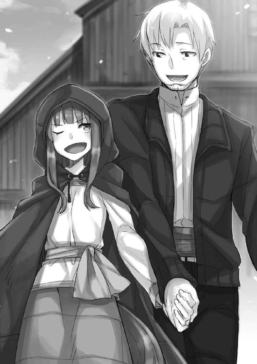
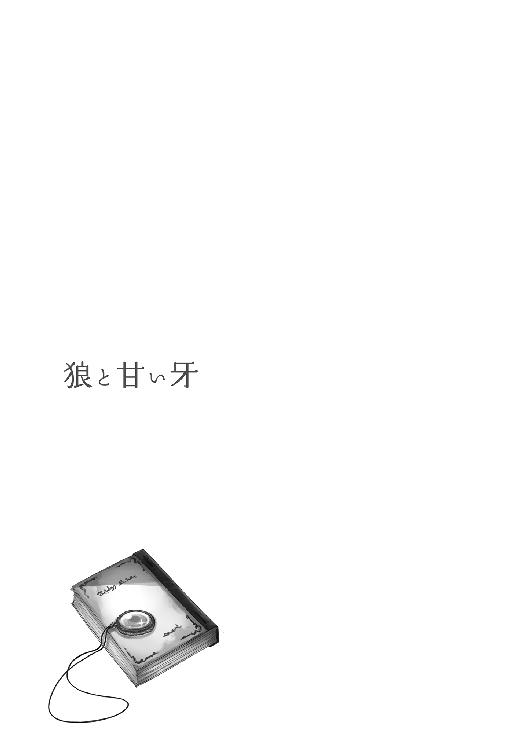
雪解けを迎え、春を祝う祭りも終わり、新緑の季節がやってきた。
避暑のための客が顔を見せる夏まではまだ時間があり、一年で最も喧騒と狂乱に満ちる冬の時期も遠い。次の季節に向けた村中の建物の補修や改築はひと段落ついていて、村のどの湯屋も静かだった。
自分が勤める湯屋『狼と香辛料亭』も例外ではない。客はいないし、湯屋の主人のロレンスは村の寄合に行っていて不在だし、その妻のホロも珍しくついていってしまった。多分、寄合とは名ばかりの酒盛りなのと、季節が良いので色々と御馳走が並ぶからだろう。炊事場を取り仕切る女性、ハンナも、山に茸やら山菜やらを採りに行っている。そんな具合なので、朝から一通り働けば、昼前には手持無沙汰になってしまっていた。
こういう時こそ神の教えを学ぶために神学書を紐解くべきなのだろうが、時間はあり、それ以上に湯もたっぷりある。ハンナが作り置きしてくれた昼食を摂る前に、誰もいない湯船に浸かり、青い空の下でため息をついていた。あまりにも心地良く、静かな時間だ。
側には最近飲みつけている甘い蜂蜜酒も置いてある。怠惰への罪悪感と共に一口すすって天を仰げば、そこには綺麗な青空が広がっている。
これ以上なにも望むことはなく、神学書を開くよりもよほど神の説く幸せに辿り着けそうな、そんな気さえした。
「ああ......」
ずっとこんな時間が続けばいいのに。
勤労と勤勉の自戒など脇に置き、怠惰な感情に身を任せた、その直後だった。
兄～様～！
そんな声が遠くから聞こえた気がした。
一瞬、転寝でもしていて夢の中で聞いたのかと思ったが、再度、はっきりと聞こえた。
「兄様ー！」
どうやら、川に遊びに行っていたミューリが戻って来たらしい。『狼と香辛料亭』の主人であるロレンスと、その妻であるホロの一人娘で、自分のことを兄と呼んで慕ってくれている。年の頃は十二か三か、早ければそろそろ嫁に行こうかという頃合で、そのことを考えると少し寂しい気がしないでもない。
とはいえ、最近はそのことが逆の意味で気がかりでもあった。
「湯のほうにいますよ！」
そう声を向けると、ほどなくぱたぱたと足音がして、ミューリが浴場に現れた。
「いた！ 兄様ー！」
ミューリはこちらを見るや、ぱっと顔を輝かせた。
母親とそっくりの顔立ちで、目の色も同じだが、二人は笑い方が全然違う。ホロの笑みにはゆっくりと蜂蜜で煮詰めたような柔らかさがあるが、ミューリの笑顔は夏の太陽そのものだ。
眩しくてキラキラと輝いていて、時折、すごく暑苦しい。
「兄様！ ねえねえ！ 見てこれ！ すごいでしょ！」
ミューリは両腕で抱えていた籠を揺すり、小走りに駆けてくる。服がびしょ濡れなのは、大方川遊びに夢中で何度か川の中に落ちたのだろう。
生傷が絶えないし、幼い頃からなにひとつ変わっていない元気さと無邪気さ、その笑顔には、こちらも釣られて笑ってしまうような魅力が満ちている。若さと天真爛漫さの底力を感じさせられることも、たくさんある。
だが、いつからだろうか。
その笑顔が、少し怖くなったのは。
「ミューリ、そんなに走ると──」
足を滑らせますよ、と言いかけた時だった。
夢中で駆けて来たミューリは湯船の縁で無理に止まろうとして、見事に足を滑らせていた。
「あれ？」
そして、抱えていた籠ごと湯の中に突っ込んだ。
「......」
水しぶきを頭からかぶり、前髪から雫がしたたり落ちるその向こうで、ぶくぶくと泡が立っている。十二か三の年頃の少女といえば、裁縫や料理の習得にせっせと励み、笑う時は歯を見せず、はにかむようにして小首を傾げるのが良い、とされている。そのどれもが、ミューリからは縁遠い代物だ。
実の妹のように世話をしてきたミューリが嫁に行くのは寂しいが、最近はむしろ、嫁の貰い手があるのだろうかと不安になる。ため息をつき、なかなか上がってこないミューリを引っ張り上げようかと思い、ふと気がつく。
湯の中を、なにかが動き回っていた。
「ぷわっ！」
ミューリがようやく湯の中から顔を上げた。
「ミューリ、あなたは一体──」
「兄様！ ぼさっとしてないで！」
こちらを見もしないミューリは、湯の中を睨みつけてなにかに身構えている。
そして、おもむろに湯の中に頭ごと腕を突っ込むと、今度はすぐに顔と腕を上げた。
「この......おとなしくしろー！」
叫ぶミューリの手の中で、丸々太ったヤツメウナギが踊っていた。
「あ、あ、逃げちゃう、逃げちゃっ......きゃあっ！」
すぽん、とミューリの手からヤツメウナギが逃げ、変な姿勢で追いすがっていたミューリは再び湯の中にひっくり返る。
どうやら、湯の中をうごめいているのは、ミューリが川で捕まえてきた獲物らしい。少し離れた場所では、大きな鱒が熱い熱いとばかりに水面から飛び出していた。
ばちゃばちゃと湯の中で暴れるミューリと魚たちの攻防を前に、大きく息を吸って、吐き出した。
「ミューリ！」
穏やかで平穏な時間は、あっという間に消え去ったのだった。
そんな話をすれば、炭が赤々と熾っている囲炉裏に魚を刺した串を立てていたその人物は、くつくつと笑っていた。亜麻色の髪の毛と赤い目を持ち、顔立ちはミューリと瓜二つ。背格好も似ているし、どう見ても年の頃は十四かそこらで、黙っていれば可憐な少女以外の何者でもない。しかし、その笑い方には、妙な迫力がある。多分それは、恐ろしく長い時を生きてきた経験ゆえのすごみなのだ。
ミューリの母であるホロは、人ではない。囲炉裏の火に照らされた壁には、大きな三角の耳と尻尾の影がある。賢狼ホロと呼ばれ、かつては神と崇められていたような、麦に宿り何百年と生きる狼の化身だった。
「笑い事ではありません。湯治客のいない時期で助かりましたよ」
「なに、湯の中に魚がおれば、酒のつまみを取りに行く手間が省けるではないかや」
ホロは楽しそうにそんなことを言っていた。
ミューリが湯の中にぶちまけた魚は、湯の中から生きて助け出せたものは樽に水を張って生かしてあるが、残りは茹ってしまっていた。捨てるのも忍びなく、かといって村の者たちに振る舞うのもどうかと思ったので、いくらかは捌いて燻製にして、残りは塩焼きにして食べることにした。
鍋にしなかったのは、それ以上茹でるのがかわいそうな気がしたからだ。
「で、そのたわけはどこ行ったんじゃ？」
魚に塩を振りかけていたホロは、指についた塩をちろりと舐めながら言う。
「ロレンスさんに叱られて、薪割りをしています」
するとホロは、じうじうとうまそうな音を立てながら焼ける魚から、視線を上げた。
「ふむ？」
次いで、頭の上の大きな三角の耳をひくひくと動かしている。何百歳と歳上で、しかも湯屋の主人の妻たるホロではあるが、その耳とふさふさの尻尾は、憚らず言えば、とても可愛らしい。かつて自分が幼かった頃など、一度ならずその尻尾にしがみつかせてもらったりした。
「どうしました？」
「うむ。その割には静かだと思ってのう」
湯屋には客もおらず、静まり返っている。鼠のあくびさえ聞こえそうなほどだ。
文字どおり獣並みの耳の良さを誇るホロが言うのだから、その静けさは意味深だ。
「ロレンスさんが見張っているはずですが......」
「わっちの宿六はしこたま酒を飲んでおったからのう。寝ておるのやもしれぬ」
そう言うホロも、だいぶ飲んでいる。
「ちょっと見てきます」
立ち上がると、ホロが呼び止めた。
「うむ。あ、ついでに炊事場に寄って、干し葡萄を水に漬けておいてくりゃれ」
「干し葡萄？」
振り向くと、ホロが目を輝かせ、尻尾をわさわさと揺らしていた。
「南に出かけた誰かからの土産だそうじゃ。寄合で分けてもらってのう。そのまま食べても甘くてうまいが、浸るくらいの水に一晩つけて、その水を使ってパンをこねて焼くと、それはそれは甘くてうまいパンが焼けると聞いたんじゃ」
食に関して、ホロはミューリよりも子供っぽい。
だが、干し葡萄のパンは、確かにおいしそうだ。
「コル坊も甘い物が好きじゃろう？ 水に漬ける前に、少しなら食べてもよい。わっちの名において許そう」
ホロとロレンスの二人に出会った頃の、まだ幼かった自分の呼び名を呼ばれ、少し面映ゆい。
もっとも、長じてさえ、苦い麦酒よりも甘い蜂蜜酒を好んでいるのだから、子供扱いされても仕方がない。
「ありがとうございます。いただきます」
「頼みんす」
ホロはひと言言うと、もうその関心は魚の焼け具合に向けられている。そんな様子に小さく笑い、建物の裏手に向かった。
真っ暗な廊下を歩いてもやはり静かで、物音ひとつしない。薪割りをしていればぱかんぱかんと音がするはず。薪置き場は炊事場の隣なので、先に炊事場を覗いてみた。
ただ、ホロの言っていた干し葡萄は見当たらない。もしかしたらロレンスが、干し葡萄を餌にミューリに薪割りをさせているのかもしれない。そう思い、外に出て薪置き場を覗いてみた。星と月明りに照らされたそこでは、丸太の山にもたれかかり、主人のロレンスが眠りこけていた。
「......ロレンスさん」
呆れて呟くと、んご、と一瞬ロレンスの息が止まり、また静かな寝息をたてはじめる。見た目は出会ったばかりの頃を髣髴とさせる若さだが、年々酒が弱くなっていると自嘲していて、それは大袈裟なことでもないらしい。
そして、ミューリの姿はない。ロレンスの身体に毛布をかけてあるのは、ミューリがそうしたのだろうとはわかる。もちろん、父親たるロレンスへの娘からの気遣い......と思いたいが、多分、これ幸いと薪割りから抜け出したことを怒られないようにという策だろう。
ロレンスは男親の哀しさか、娘のミューリに強く出られた試しがない。
「しかし、どこに？」
晩御飯の前にホロとロレンスが帰って来て、事の顚末を知ってそのまま薪割りを命じられていたので、ミューリは腹を空かせているはずだ。その顔立ちと赤い目のほかに、食い意地もホロから受け継いだミューリが、御飯を食べずに寝るとはとても考えられない。
そう思っていたら、ロレンスの寝息の向こうから、ぱちゃぱちゃと水の跳ねる音がした。
「湯のほうか」
薪置き場から少し行けば、湯屋の建物から伸びる石畳の渡り廊下に突き当たる。
それを進めば広々とした露天の浴場に辿り着くが、浴場の前で、すでにミューリの残した痕跡を見つけていた。
「......この脱ぎ散らかす癖も何度言ったら直るのか......」
ため息交じりにぼやきながら、脱ぎ捨てられている衣服を拾い集めていく。ひとつずつ丁寧に畳み、最後に腰帯で包むようにまとめていると、浴場の仕切りの向こうからミューリの声が聞こえてきた。
「ほらほら、頑張って～」
なにをしているのか、随分楽しそうだ。もしかしたら他所の湯屋の子供たちが来ているのかもしれない。いずれも名だたる悪戯小僧だが、ミューリはその中でも群を抜いていて、自然と親分格になっている。
しかしこんな時間になにをしているのか、と仕切りを回り込んで、ぎょっとした。
あまりのことに、まとめていたミューリの衣服を取り落としてしまった。
「あははは！ ん？」
と、素っ裸のミューリがこちらに気がついた。
星と月明かりは、蠟燭の灯りよりもよほど明るくその場の様子を照らしだしていた。灰に銀粉を混ぜたような父親譲りの髪の毛と、同じ色をしたふさふさの尻尾を揺らしたミューリが、湯船の縁をぐるりと取り囲む石の上に、裸で堂々と立っている。
乙女の羞恥など欠片もない、ということはこの際おいておく。ホロの血を受け継ぎ、普段は隠している人ならざる獣の耳と尻尾が丸出しなのも、まだ許せる。
あるいは、ミューリが右手にしっかりと持っている麻袋と、中から取り出したばかりと思しき干し葡萄を左手に山盛り握っているのも、なんとか目をつぶろう。
問題は、ミューリの見ていた先。
湯船の真ん中にある小さな中島の上で、熊が二頭対峙していることだった。
「ミューリ......な、なにを......？」
「あはは、兄様！ いいところに！」
くるりと身を翻したミューリは、軽快な小走りで駆け寄ってきて、遠慮会釈なく胸の中に飛び込んでくる。
細身で華奢で、身長は頭ひとつ分以上違うのに、ミューリにはお転婆で増幅された若さがある。
なんとかその勢いを受け止めると、小言を言うより早く、ミューリが顔を上げた。
「ねえねえ、兄様！ 見てみて、あれ！」
満面の笑顔でそう言って、麻袋を握っているほうの手で、中島を指差した。
「な、なにをしてるんですか？ というか、それはホロさんたちのお土産の干し葡萄では？」
ミューリはその指摘に、あっ、という顔をして自分の手元を見たが、すぐに笑顔になった。
「えへへ。兄様も食べる？」
「ミューリ！」
叱りつけると、ミューリは肩をそびやかして耳を伏せ、目を閉じる。
しかし、干し葡萄は離さず、こちらが手を伸ばして取り上げようとしても、ひらりと躱してしまう。
「もう、兄様、大きな声出さないでよ」
不満げな物言いに頭痛を覚える。なにから怒ればいいのかわからなくなりそうだったが、とりあえず、目下問いたださなければならないのは、中島で睨み合っている熊だ。
「それより、あれはなんですか」
ニョッヒラは山奥の村なので、村の中であっても色々な動物と遭遇する。村の中心部から外れ、ほとんど森の中に居を構えている湯屋に至っては、むしろ彼らの縄張りの中に住んでいるようなものだ。その中でも恐れられるのが、狼と熊だった。これが普通の湯屋でのことなら、村を挙げての大騒ぎになっている。
「あれ？ あれはねえ、この干し葡萄が食べたいって言うから、勝負に勝ったほうにあげるって言ったの」
「......勝負？」
「うん。嚙みつきと爪はなし。怪我したら危ないもんね。先に湯に落ちたほうが負け」
狼の化身であるホロと、その血を引くミューリはどうやら森の獣と意志の疎通が図れるらしい。まるでお伽噺だが、そのお伽噺に、残酷とも言えるくらいの無邪気さをたっぷり注ぎ込むのが、ミューリなのだ。
「い、いや、あんな熊二頭に取っ組み合いをさせたら......」
あの中島はロレンスのたっての要望で、楽師が優雅に演奏したりするために協力してせっせと石を組んで作ったものだ。文字どおりの汗と労苦の結晶だが、当然、人が乗ることしか考えていない。熊が二頭睨み合い、ぐるぐるとまわって互いの出方を窺っている時点で、すでに端の辺りが崩れはじめている。あれで取っ組み合いなど始まったら、結果は目に見えている。
だが、止めようにも自分の言葉を熊が聞くとも思えない。
ホロに助けを求めるべきか？
そう思っていたら、裸のミューリが干し葡萄を摑んでいる左手を高々と掲げた。
「ほーれ、これが食べたければ己の強さを証明するのじゃ！」
母親の口調を真似しているのか、そんなことを言う。
そして、二頭の熊は食欲の他に己の誇りもかけているらしく、互いに嚙みつかんばかりに牙を剝いた。
頼む、やめてくれ。
そう声をかける間もなく、ミューリは言った。
「勝負......始め！」
ごおおおお、と地鳴りのような雄叫びと共に二頭の熊が取っ組み合う。その凄まじい膂力は湯船の湯を波立たせ、中島は恐れおののくように震えている。
ぼちゃん、ぼちゃん、というのは石が崩れて湯に落ちる音だ。
二本足で立った熊が、互いに押し合いへし合いしている様を為す術もなく見つめていたら、いつの間にかミューリが隣に立っていた。
「ねえねえ、兄様」
いつからか、兄様と呼ばれると、若干の恐怖を覚えるようになった。
星と月明かりに照らされた、銀と氷の彫刻で作られたような裸のミューリが、可愛い笑顔でこちらを見上げている。
「兄様は、どっちが勝つと思う？」
底抜けの無邪気さ。
そして、ほどなく中島の一角が崩壊し、熊が二頭諸共、湯船に落ちたのだった。
朝から湯船の湯を抜いて、熊が崩した中島の石を組み直していた。形を見極め、子犬くらいの大きさの重い石を、慎重に積み上げていく。地味で骨の折れる作業で、すでに腰が痛く、二の腕がぱんぱんだ。ただ、幸いなことに、この中島は思った以上に頑丈で、全壊は免れていた。思い返せば、時折ホロが巨大な狼の姿に戻って、寝そべったりしていた。それに湯を抜いたら、昨日ミューリがぶちまけたままとりこぼしていた、魚の成れの果てが何匹か見つかり、良い掃除の機会にもなった。
とでも思わなければ、つい眉根に皺が寄り、ため息が出てしまう。
「いつもすまないな......コル」
こちらの不機嫌を察したのか、青い顔で石を組むロレンスが、弱々しく言った。
二日酔いらしいのだが、責任感の強い人なので、娘の不始末をそのままにはしておけないのだろう。
「ミューリの奴も悪気はないと思うのだが......加減を知らないというか......」
「い、いえ」
そう答え、石を積んでから、少し力なく笑った。
「いえ......少し、そう、ですね」
がちゃり、と積み上げた手に重い石が、たちまち気苦労の塊に思えてくる。
「ただ、手伝いもせずにどこに行ったんだまったく」
夜が明けて湯船の惨状を見たロレンスは、珍しくミューリにこんこんと説諭していたが、馬耳東風ならぬ狼耳東風だろう。当のミューリの姿も、ここにはない。
もっとも、ミューリがここにいたとしても、あの細腕では石を持ち上げるのも一苦労だろうから、余計な手間が増えるだけかもしれない。とはいえ、誠意を見せるのは大事だと思う。手伝わずとも側に腰かけて、しゅんと反省していればとは思う。
「もう少しでもおとなしくしていれば、あれほど可愛い娘もいないのだが......」
ロレンスは真面目な顔で親馬鹿なことを言っているが、確かにミューリがおとなしくしていれば、さぞ可愛らしいだろうとは思う。よく笑って、朗らかで、元気に満ち溢れ、あれでいて気のつくところもある。悪戯ばかりだが、基本的に悪意はない。
母親のホロのような老獪さ、とまではいかなくても、ほんの少しおとなしくなってくれればいいのに。そう思いながら湯船の底に転がっている石を拾い集めていたら、遠くからそのホロの声が聞こえてきた。
「ぬしよ」
決して大きな声ではないのに、風に乗って運ばれてくるようによく聞こえる。ホロがロレンスを呼ぶ時の「ぬしよ」には独特の柔らかさがあるので、そのせいかもしれない。
顔を上げると、湯屋に繫がる渡り廊下に、珍しく前掛け姿のホロが、両手を肘まで白くして立っていた。どうやら、干し葡萄のパンを作っているらしい。
「竈の火を少し見てくりゃれ。わっちでは火加減がわからぬ」
「ああ......って、ハンナさんはまだ帰って来ないのか」
「季節が良いからのう。まあ、たまには羽を伸ばすのも良いじゃろ」
ハンナもホロと同じく人ではなく、どうやら鳥の化身らしい。普段は誰よりも勤勉に炊事場で働く才女だが、時折、こういうことがある。
「それより、ぬしよ、火じゃ」
「ああ、ええっと」
と、ロレンスはこちらを窺った。
「どうぞ」
笑顔を向けたのは、ロレンスとホロが、自分の雇い主であるからではない。村一番のおしどり夫婦は、見ているだけで幸せになれる。
「すまん。すぐ戻って来るから」
「コル坊のぶんもあるからの。楽しみにしててくりゃれ？」
ホロはそう言って踵を返し、ロレンスが追いかけていく。
目で追っていれば、ホロがおもむろに顔を突き出して、ロレンスに鼻の頭を搔かせていた。
客もいないので隠していないホロの尻尾が、わっさわっさと揺れている。
あんな二人を見ていたら、石組みの労苦も和らぐというものだ。
気を取り直してまた一つ一つ石を組み直していたら、不意にぞくっと寒気がした。
あるいは、予感だったのかもしれない。
「兄～様～～！」
あらゆるものを笑顔で蹴散らすミューリの声に、胃がきゅっと縮んだ。夏や、特に冬ならばミューリも悪戯をする暇がないくらいに忙しいのだが、時間のある最近は、誰かがその熱量を引き受けなければならない。
石をまたひとつ積み、ため息をついてから振り向こうとしたら、腰のあたりにすごい衝撃を食らった。
「ぐっ!?」
「兄様！」
したたかに胸を石組みにぶつけたが、ミューリはけたけた笑いながらこちらの腕を引いた。
「ねえねえ、兄様、聞いて聞いて！」
「......」
ごほ、と咳き込みながらミューリを見やると、頰には泥がつき、頭には蜘蛛の巣がつき、虻の群れにでも襲われたのか、剝き出しの二の腕のあっちこっちに虫刺されらしき痕があった。
どこでなにをやっていたのか、と尋ねる間もなく、蹴鞠を投げられた子犬のようにはしゃぐミューリは、興奮のあまりに普段は隠している獣の耳と尻尾をポンと飛び出させ、まくしたてた。
「あのね！ 森の中ですごいもの見つけたんだ！ 兄様絶対驚くよ！ だからね、あのね、今から森に行って兄様の──」
と、そこまで言った時だった。
湯船と同じで、自分にも許容量があるのだと理解した。
「えっ......あ、兄......様？」
さしものミューリも、こちらの表情に気付いたようだ。耳が伏せられ、尻尾がぺたんと力なく垂れた。ロレンスは娘が可愛い余りに怒れないが、自分は違う。血こそ繫がってはいないが、可愛い妹だと思えるからこそ、怒らなければならない。
「ミューリ」
その名を呼ぶと、ミューリがびくりと身をすくめた。
ただ、戸惑いきったような顔のミューリは、それでもなお、躊躇いがちに口を開く。
「あ......あの、ね？ 兄様、その......これから森で、ね？」
この期に及んでもなお遊ぼうとする様子に、ある種の畏敬の念を抱いてしまうが、度を越えている。
静かに見据えて、言った。
「いい加減にしなさい」
ミューリは幼い子供ではなく、根は賢い少女だ。冷たい一言がどういう意味を持つのか、きちんとわかっている。
胸を呪いの石弓で射抜かれたように凍りつき、茫然とこちらを見つめていた。
「私は仕事があります」
自分のことを兄と慕ってくれるのは嬉しいが、いつまでも幼子としては扱えない。
兄代わりとして、ミューリを諌める必要があった。
「石を拾うので、どいてください」
殊更無感情に言って、しゃがみ込み、石を拾い集めた。ミューリが熊に取っ組み合いをさせたせいで壊れた石組みの欠片だ。ミューリがこの石を持てなくとも、昨晩のことに責任を感じて、側でおとなしくしていればまだ許せただろう。
だが、ミューリはロレンスから説諭されると、朝からどこかに行ってしまっていた。その格好と発言を見るに、森で遊び呆けていたらしい。
母親のホロも時折相当に奔放なことをしてのけるが、あちらは歳を経て自制というものを心得ている。誰かが、この元気すぎる銀色の若い狼に慎みを教えるべきだった。
「......」
「......」
こちらから話しかけなかったし、ミューリはこちらの作業を見つめたまま、動けないようだった。ミューリは、怒鳴られ叱られるのには慣れているし、むしろ場合によっては叱ると嬉しそうにすることさえある。しかし、冷たく突き放されるのには慣れていないし、普段も、たとえば生返事をするとものすごく不機嫌になる。
もちろん、ミューリが謝って、反省の色を見せれば万事済む話だし、実を言うと自分は怒っているのではなく、少し悲しかったのだ。自らの不始末で誰かが労苦を強いられているのに、とんと気にかけず遊び呆けている。ミューリがそういう娘であって欲しくなかった。
石がひとつ積み上げられ、がちゃりという音が鳴るたびにミューリは小さく身をすくめていた。そちらを見ずとも、ミューリが泣きだしそうなのはよくわかった。
手を体の前で握ったり離したりして、立ち尽くしていた。ミューリはロレンスに叱られた時もしゅんとした様子を見せるが、それは演技だ。今のミューリの様子は、およそ演技からは程遠かった。
ごつ、と一際大きい石を積み上げてから、ため息と共に言った。
「手伝うつもりがないなら、部屋に戻っていなさい」
そして、反省していて欲しい。
ミューリは伏せられた耳の先の毛が震えるくらい体を強張らせていたが、やがて、うなずいた。あるいは、泣きだすのをすんでのところで堪えて、背中を丸めたのかもしれなかった。
なんにせよ、火の消えたようなミューリはうなだれ、一歩、二歩、と下がった。
それで一度止まったのは、こちらがなにか優しい言葉をかけるとでも期待していたのかもしれない。無視して石を積み上げていたら、ミューリは諦めたのか、背中を向けて、とぼとぼと歩いていった。
湯の抜かれた湯船から出て、湯屋に向かうミューリの背中を見れば、しきりに顔を拭っているようだった。そんな姿を見ると胸が痛んだが、ミューリの成長には必要なことだろう。
昼食の時にでも、反省したかどうかと問いかければ、またいつもの明るいミューリに戻るはず。
そう思いながら石を組み上げる作業を続け、太陽が真上に来る頃になってようやく、ひととおりの作業が終わった。後は、村の中でも石組みの名人と呼ばれる人に頼み、石と石の間に楔形の木を打ち込んで、がっちりと安定させればいい。積み上げるだけでは駄目なのは、経験や人間関係と同じだ。
腰を伸ばし、腕の筋を伸ばし、一息つく。喉も乾いたし、腹も減った。
ホロの干し葡萄のパンも焼けている頃だろうし、蜂蜜酒と一緒に食べたら最高だろう。酒飲みのホロが見たら、甘すぎる組み合わせに呆れ顔をするかもしれない。
ただ、備蓄してある蜂蜜酒がまだあっただろうかとふと思う。原料の蜂蜜はそれだけでも素晴らしい甘味料であり、また保存料にもなるので、決して安い物ではない。加えて、蜂蜜酒が酒飲みの口には甘すぎることもあってか、村では蜂蜜酒の製造は後回しにされがちだった。
新緑のこの季節に出回りはじめる蜂蜜を確保しておかなければ、とあれこれ算段をつけながら歩いていたら、ちょうど湯屋からホロが出て来るところだった。
「なんじゃ、正確な腹時計じゃな」
昼食に呼びに来ようとしてくれたらしい。
「太陽の位置ですよ」
天を指差すと、ホロは子供のように空を仰いでから、視線を戻してふむとうなずく。
「コル坊は昔から理屈っぽいからのう」
「いい加減、坊はやめてください」
苦笑しながら言うと、ホロはミューリの尻尾よりも一回りは太い尻尾をわさりと振った。
「ぬしらなど、いつまで経っても子供同然じゃ」
数百年を生きる賢狼ホロに言われては、反論のしようもなかった。
「大体、子供でないと言うのなら、なぜぬしらは喧嘩などしておるのかや？」
謎かけふうに話すのはホロのいつもの茶目っ気だろうが、その中身が気になった。
「喧嘩？」
聞き返すと、ホロは憮然として両腕を胸の前で組んだ。
「わっちの可愛い娘を泣かしおって。コル坊がわっちの子同然でなければ、頭から嚙みついておるところじゃ」
ミューリと同じ色の目と顔で見つめられているのに、その印象は全く違う。
ホロは昼食に呼びに来たというより、このことを言いに来たのだろう。
「いえ、ですが、それは」
ミューリを泣かせたのは理由のないことではありません、と言おうとしたところを、ホロの呆れるような笑みと、悪戯っぽくこちらの胸に突き立ててきた人差し指で止められた。
「事情は知っておる。ミューリに唆された熊が中島を壊して、ぬしらが直しておるのに張本人は山で駆けまわっておった。温厚で公平なぬしでさえ怒るのも、まあ、むべなるかな」
そこまでわかっていて、なぜミューリに味方するような口調なのだろうか。
ホロはこの湯屋の中では、ミューリに対して最も手厳しいし、容赦もしない。ミューリはホロの言うことだけは絶対に聞く。問題は、それほどの権威を持つホロが滅多に口出ししないことだ。あるいはそれが狼らしい子育てなのかもしれないが、時折歯がゆく思うこともある。
そんなわけなので、珍しくミューリに味方するようなホロを前に、戸惑ってしまう。
「ふむ。まあ、わからぬようじゃから、ぬしからはまだ坊の字を取れはせんのう」
ひよこが尻にくっつける、卵の殻のように。
賢狼は、慈しむように目を細めた。
「ミューリは確かにお転婆じゃが、たわけではありんせん」
「それは......はい」
「それに、あれはぬしのことが大好きじゃからのう」
にしし、とからかうようにホロは笑うが、ミューリが自分に懐いてくれていることを疑ったことはない。
「私もそうですよ。とても大事な存在です。ですから、もう少し落ち着きと、慎みを持ってほしいのです」
「ふむ」
しかし、ホロはそんな言葉にたちまちつまらなそうな顔をして、こちらの胸に突き立てていた人差し指を離し、今度は少し強く突いてきた。
「うちの雄共は皆、要らぬ考えばかり巡らせて目を曇らせておる」
どういう意味か、と思う間もなく、ホロは踵を返して湯屋に向かって歩いていた。
「ほ、ホロさん」
「ミューリは喉が嗄れるほど大泣きして、今は泣き疲れて眠っておる。ぬしらが仲直りするまで、葡萄パンはお預けじゃ」
ホロはそう言って、湯屋の中に入っていった。
一人残され、立ち尽くしてしまう。
仲直り？
だが、仲直りもなにもない。自分とミューリとのことは喧嘩ではない。あれはミューリに対して、正しさを知ってもらいたいと思ってしたことだ。ミューリに対して含むところなど何もない。
そう確信しているつもりだったのに、ホロの言葉と態度に、だんだん自信がなくなってくる。
もしも本当にミューリに正しさを教えるだけならば、わかりやすく、落ち着いて伝えたってよかったはず。なにも、ミューリが一番傷つきそうな方法で示す必要はなかった。
ならばなぜ、自分はあんな振る舞いをしてしまったのだろうか。
ゆっくりと記憶の塵を払っていけば、そこにあるのは単純な感情だった。
ミューリに、謝って欲しかったのだ。正しさなどどうでもよく、今後悪戯をしないと誓わせるでもなく、ただ一言謝って欲しかった。
そうすれば、ミューリが森で遊び惚け呆けていようと、大して気にはならなかっただろうと思う。なにせ、元々ミューリの細腕では石組みにほとんど役には立たず、かといってずっと側で沈痛な面持ちで座られていたとしても、きっと困っただろうから。
それになにより、ミューリにはいつだって、笑っていて欲しいのだから。
「......ああ、そうか......」
あの時の自分の感情に思い当たり、呆れるように額に手を当てた。
自分はあの時、自分のことをないがしろにされた気がして、苛立っていたのだ。
だからこそ、わざとミューリを傷つけるような振る舞いをした。
自分はミューリのことを大切に思い、常に心を砕いている。それなのにこの仕打ちなのか？ と至極個人的な苛立ちを抱いていたのだ。神の教えの下の正しさ云々などではなく。
そう気がついてみれば、これは確かに喧嘩だった。
しかし、ミューリが謝りの一言もなく遊び呆けていたのは事実で、事の発端も完全にミューリのせいだ。天秤は釣り合っていないような気がする。ホロがそんなミューリに味方するのは奇妙に思えた。ましてや、喧嘩両成敗みたいに、葡萄パンはお預けなどと自分に言い残している。それとも、自分が大人の器量を見せるべきだったからだろうか、と思いつつ、ホロが自分とミューリ、あるいはロレンスでさえ等しく子供扱いしているのは、結構本気のことだろう。
渡り廊下の真ん中で立ち尽くし、首をひねる。
なにかおかしかった。
一体なにを見落としているのか......と思ったら、湯屋の正面入り口のほうから足音が聞こえてきた。この時期に客はないだろうから、村の誰かが来たのかもしれない。
ただ、その来訪者は湯屋の扉を叩くわけではなく、躊躇いもなく進む向きを変えたのが足音からわかった。こちらに向かってくると、目隠し用の木立の隙間を慣れたようにすり抜けて来たのは、見知った顔だった。
「うわっ！」
侵入者はぎょっとして大声を上げていた。人がいるとは思っていなかったようだ。
「こんにちは、カーム君」
近くの湯屋の子供で、ミューリとは同い年の遊び仲間だ。
遊びの誘いに来たのだろうが、やたらに重装備だった。長い棒を肩に担ぎ、大きな麻袋とおぼしきものを畳んで紐で結わえ、斜めに背負っている。さらに奇妙なのは、小脇に抱えている、たっぷりの葉がついた針葉樹の枝の束だろう。
一体どんな遊びをするつもりなのか、見当もつかない。
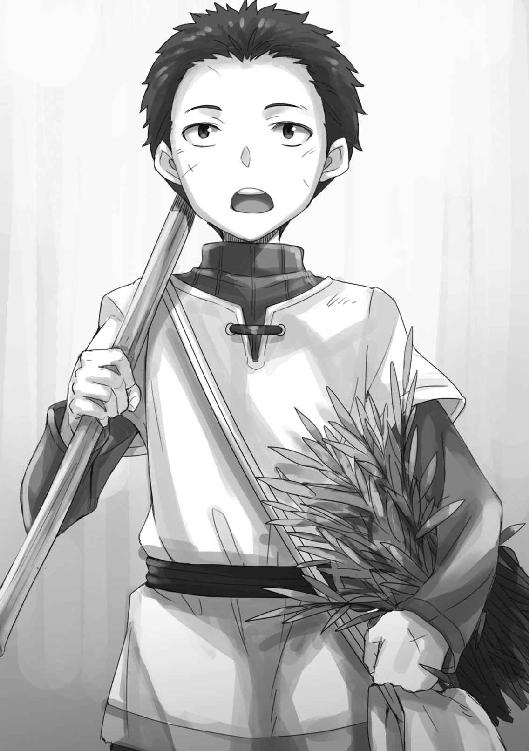
「あ、コルさんか。こんにちは。ミューリの奴いますか？ 家で待ってたのに全然来なくて」
「ミューリですか？ えーっと......」
まさか自分が泣かしたせいで泣き疲れて眠っているとも言えず、言葉に詰まってしまう。
ただ、家で待っていた、という言葉にふと引っかかる。
「ミューリと遊ぶ約束を？」
「はい。森の奥に行こうって。父ちゃ......親父も一緒に行くから、手伝いを終えて準備して待ってたんですけど」
親父と言い換えたところに、年頃の少年の見栄が感じられて微笑ましかったが、内容が妙だ。カームの父親も連れて森に？
遊びにしては、あまりに大袈裟だ。それに、ミューリが湯船に来た時のことを思い出した。
あのね！ 森の中ですごいもの見つけたんだ！ 兄様絶対驚くよ！
そのすごいものは、村の大人を連れていくようなもの。となると、本格的な狩りかなにかしか思いつかない。それにしては、カームの装備がそぐわない。
そして、ミューリの言葉の続きを思い出した。
だからね、あのね、今から森に行って兄様の──。
ミューリは、なにをしに行こうとしていたのだろう？
「まあ、見つけたのはミューリだから、ミューリがいなくてもきちんと分け前出すからって言っておいてもらえませんか？ 他の奴らに見つかったら、先に取られちゃうかもしれないので、早く行かないと」
麻袋を背負い直しながら、カーム少年はそう言った。
「俺もちょくちょく探してたんですけど、大人には敵わないし、けどミューリは大人も怖くて行けないような場所に平気で行くから、すっごいもの見つけたんですよ」
楽しそうなカームの話に、ミューリが喜び勇んで自分のところにやって来た時の格好が思い出される。一言で言えば、ずたぼろだった。
「あの、ミューリは山で一体なにを見つけたんですか？」
胸を締めつけるようななにかは、後悔に似た感情だ。
その質問は、本当はカームにではなく、ミューリにするべきだったのに、と。
「あれ、聞いてないんですか？」
カームはきょとんとしてから、にかりと笑う。
「馬鹿でかい蜂の巣ですよ。で、蜂蜜酒を作って欲しいからって、うちの親父に頼み込んできたんです」
カームの父親のサイラスは、この村で一位二位を争う酒づくりの名人だ。そして、蜂蜜酒。
ミューリはその年頃らしく、背伸びに興味津々なので機を窺っては酒に手を出そうとしている。だが、今回の目的を疑うようなことは欠片もなかった。
ミューリは、反省していたのだ。悪いと思っていて、でも石組み作業には役に立てないし、言葉だけではきっと足りないと思って、できることを最大限考えて、実行に移したのだろう。
最近、自分が蜂蜜酒を飲みつけていることを知っていたからこそ。
自分はなぜ、あの時、ミューリの話を聞かなかったのか。あの時に話を聞いていれば、なにより嬉しい心遣いだったに違いない。
ホロが怒るのは当然だ。
もうあとほんの少し、ミューリのことを信頼していれば、すれ違わなかったのだから。
「カーム君」
「はい？」
少年に、言った。
「代わりに私ではだめですか？」
カームはしばしきょとんとしていたが、大人っぽく肩をすくめてから、言った。
「しこたま刺されますよ？」
望むところだ。
罰には、痛みが伴わなければならないのだから。
顔と言わず腕と言わず、あらゆるところを布で巻き、怒り狂う蜂を針葉樹の生木を燃やした煙で追い払い、巣を棒で突いて麻袋の中に落とす。あとは袋の口を閉じて、逃げる。
文字にすれば簡単だ。
だが、日暮れ頃にようやく『狼と香辛料亭』に帰り着いたら、出迎えてくれたホロがぎょっとして後ずさった。
「......随分色男になったのう」
強張った笑みを見せつつ、ホロの目は成長した誰かを褒めるようなものだった。
「ミューリは？」
「部屋じゃ。あの能天気が、まだめそめそしておる。よっぽどのことじゃのう？」
その言葉には、遠慮なく責めるような響きが含まれている。
「じゃが、ぬしは行動したようじゃからの」
ホロは横に避けて、湯屋に入れてくれる。なんとなくだが、ロレンスもこういう場面を度々ホロと繰り返してきたのではないか、と思った。
「あ、ホロさんにちょっと協力してもらいたのですが」
「んむ？ なにかや？」
「ちょっと、味見をして欲しいのです」
味見、の一言に正直なホロの耳がぴんと立つ。こちらの腕に抱えられている樽を見て、相好を崩していた。
「お安い御用じゃ」
それから炊事場に向かいあれこれ準備してから、ミューリのいる寝室へと向かったのだった。
扉をノックしても、返事はなかった。
寝ているのかもしれないが、もしかするとまだ泣き明かしているのかと、不安になって扉に耳をつける。
一応、静かだった。
もう一度ノックしてから、深呼吸をして、扉を開けた。
「ミューリ？」
軽く扉を開けた時点で、一度その名を呼んだ。枕なり水差しなりが飛んで来るか、罵声が飛んで来たら、もう少し時間を空けようと思った。
しかし、特に拒絶の意志はなかったので扉を開けきったが、ミューリはベッドの上で見事なくらい、頭から毛布をかぶって丸まっていた。
「......」
丸まった姿は、絶対に顔も見たくない、という現れのようでいて、どこか冗談めかしているようにも見える。
ただ、気まずくて仲直りの一歩を踏み出しにくいのなら、歩み寄るべきは一応年上の自分な気がした。
「ミューリ」
もう一度名を呼ぶと、毛布の塊がもぞりと動いた。
「いい加減、機嫌を直してください」
懇願するように言うと、まん丸の毛布の隅が、少しだけ開いた。
「......怒ってるのは、兄様じゃない」
不貞腐れたような言い方だったが、少しつついたら弾けて割れてしまいそうなくらい、弱々しい声だった。
「もう怒っていませんよ」
そう言って、机の前から椅子を取り、ベッドの側に置いて、腰を下ろす。
「顔を見せてくれませんか？」
「......」
毛布を摑んでいるその手だけが見えている。
小さくて、華奢な手だ。
「......兄、様」
毛布の隙間から、聞き慣れた単語が聞こえてきた。
「なんですか？」
「......ごめんな、さい」
その言葉は聞き慣れているようで、初めて聞くような気もした。
「で、でも、あの、ね、私は、その」
「ミューリ」
その名を呼ぶと、また泣きだしそうな震えた声で言い募ろうとしていたミューリは、ヤドカリのように毛布の奥の奥に引っ込んでしまう。
脱力するように小さくため息をついて、言った。
「ホロさんから聞いてましたけど、本当にひどい声ですね」
「......」
ミューリの声はからからだった。喉が擦り切れたように、聞いているだけで咳払いをしたくなるような痛々しさがある。ひたすら泣いて、すべての水分が出てしまって、なお泣いたのかもしれない。
ひどいことをした、と思う。
崖から落ちて血まみれになっても笑っていられるミューリだが、その小さな胸の奥にある心は、とても柔らかいのだ。
「薬を持ってきました。喉に効きますよ」
「......」
ミューリが、少しだけ殻の奥から顔を覗かせるようにもぞもぞとする。
「ホロさんにも手伝ってもらいました。味は保証つきです」
手にしていた小さな木の器に差してある匙を手に取り、もう一度よく搔き混ぜてから、一掬いした。
「うん。おいしい」
味見をすると、偽りなくおいしい。
昼食も食べていないらしいミューリは、たちまち興味をそそられたらしい。
「いりませんか？」
そう尋ねると、ミューリはそれでもなお躊躇った後、のそのそと毛布の奥から顔を出した。
「......いる」
その姿は病み上がりのようだった。髪は滅多につかない寝癖だらけで、顔はむくんでいる。
目の周りは特に真っ赤に腫れあがって、それでいて張りがないので死人のようにも見える。
こうなった原因が自分だと思うと胸が痛んだが、挽回はできる。
匙をミューリのほうに差し出すと、やつれきったミューリはなんの構えもなく口を開き、それを受け入れた。
斜めに折れたままだった獣の耳がぴんと伸びたのは、その直後だった。
「こ、これっ」
ミューリは驚き、それからようやく、こちらの様子にも気がついたようだった。
「あ、に、兄様、その顔......」
「蜂の巣取りがあんなに大変だとは思いませんでした」
どれだけ防御していても、蜂はどこかから潜り込み、刺してきた。
あっこっちが腫れ上がり、しばらくは顔を洗うのも難儀しそうだ。
「ところで、薬のほうはどうですか？ 蜂蜜にしょうがのしぼり汁と、少しだけ葡萄酒を加えています。宮廷の歌姫が風邪を引いた時などにも、よく食べるそうです」
ミューリはこちらの顔と手元の器を何度か見比べて、ようやくくしゃりと笑ってくれた。
「おいしい」
「それはよかったです」
「もっと欲しい」
いつもの調子が戻って来たようだが、勿論諌めることはない。
匙で掬って、ミューリの口に運ぶ。ミューリは嬉しそうに、尻尾をぱたぱたさせていた。
「あ、でも、あんまり食べたら兄様の分が......」
「大丈夫ですよ。蜂の巣からは溢れんばかりに蜜が取れましたし。それに、この蜂蜜も葡萄酒が入っているので、放っておくとお酒になってしまうそうです。早めに食べてください」
「......お酒になったやつも食べてみたい」
「それはだめです」
ミューリはぷくっと頰を膨らませたが、もういつものミューリだ。
ただ、わざとらしくむくれていた頰をしぼませ、笑った瞬間は、まるで今にも泣きだしそうな感じがあって、少しどきりとした。
事実、ミューリは笑いながら少し目尻を擦っていた。
「兄様の馬鹿」
その意味を深くは探らなかった。
「すみませんでした」
すると、ミューリは満足したように微笑み、さらに蜂蜜の薬を要求するように口を開けたが、ふと、こちらを見てなにかに気がついたような顔をした。
「どうしました？」
尋ね返すのと、ミューリがなんの前触れもなく身を乗り出し、こちらの頰に口づけをするのはほぼ同時だった。
ちゅっ、と象徴的な音を立ててから、ミューリは殊更ゆっくり顔を離す。
突然のことで動けないでいると、ミューリは小首を傾げて微笑んだ。こちらが神の教えの下に立てている、禁欲の誓いをミューリはもちろん知っている。しょっちゅうそれをからかわれ、いじくられる。
「ミューリ、あなたにはまたお説教が必要ですか？」
「悪戯じゃないよ。蜂の毒は吸い出すと治りが早いって聞いたから。これは治療だよ」
ああ言えばこう言う。
その上、ミューリは悪戯が大好きだ。
「それに、私も自分の腕とかは吸い出せたけど......」
ミューリはそう言って、おもむろに服の襟に指をかけると、ぐいっと首筋をこちらに向けた。
「ここも刺されてるの」
白くて細い首元に、確かに刺された跡がある。なにより襟をきわどい位置まで下げ、白い首筋を露わにするその様子がひどく扇情的で、蜂の毒よりも目の毒だ。あまりに仕草がそれっぽいのは、きっと湯屋にやって来る楽師や踊り子の娘たちが、面白がってミューリにあれこれ教えているせいだろう。
ただ、ミューリはミューリだった。年に見合わぬ妖艶さを見せたのは一瞬のことで、悪戯が楽しくて仕方がない、とばかりに尻尾をぱたぱたさせて、さらに前に乗り出してくる。
いつものミューリだとわかれば、こちらも冷静に対処できる。胸元から貝殻に入った軟膏を取り出して、浮き浮きと目を閉じて口づけを待っていたミューリの首元にちょんと塗った。
「サイラスさんのところからもらってきた薬です。大変効くそうですよ」
わざとらしく笑顔を向けると、ミューリは冗談でもなさそうに唇を引き結び、眉を吊り上げていた。
「もう、兄様なんにもわかってない！」
「わかってますよ。あなたの悪戯など、全部お見通しです」
「ぶーっ！」
ミューリは喚き、がばっと大きく口を開けた。
「蜂蜜！」
喉の奥まで見えるようなはしたない格好だが、ミューリには妙に似合っている。それに、その様子にはなんだか見おぼえがあるような気がした。
匙に蜂蜜を掬ってミューリの口に運ぶと、がちん、と音がするくらいその口が閉じられる。そして、理解した。その大口はきっと、いつか自分がミューリに頭から齧られてしまうのではないかという、予感なのだ。
「お代わりは？」
それでも、騒がず慌てず、そう尋ねた。
少なくともおいしい物がある限り、ミューリの機嫌は上々なのだから。
「いる！」
ミューリの声がよく響いた、新緑の季節の夕暮れのことだった。
山奥の温泉郷に湯屋を開き、数えてみれば十余年になる。つまりは、行商人として独り立ちしてからよりも、湯屋の主人として働いていたほうが長くなっていた。
なるほど歳もとるわけだ......と、馬車の荷台の上で仰向けに寝転び、空を眺めていた。
「これ、たわけ、まだ起きられぬのかや？」
そこに、そんな言葉と一緒に毛皮が顔の上にかぶさった。太陽の光をたっぷり含んだ干した藁束みたいな匂いと、煮詰めた蜂蜜のような甘い香りがする毛皮越しに空を見上げると、よく梳かれた綺麗な毛並みがきらきらと光っていた。
「お前が荷馬車を動かしてくれたって構わないんだがな。長年俺の隣で手綱捌きを見てきただろう？」
毛皮の下から返事をすると、わっさわっさと毛皮が動いて顔を意地悪く擦られた。
「わっちゃあヨイツの賢狼ホロじゃ。誇り高き狼が馬の手綱などひけるものではありんせん」
顔の上から毛皮がどかされると、不服気に腕を組んだ少女がこちらのことを見下ろしていた。
亜麻色の髪の毛と赤味がかった琥珀色の瞳。それから、髪の毛と同じ色をした三角の大きな獣の耳と、外套の下で右に左にと揺れているふさふさの尻尾。出会ったのはもう十年以上前なのに、その見た目は昔と全く変わっていない。
ヨイツの賢狼と名乗ったホロは人ではなく、麦に宿る精霊の類であり、狼の化身だった。
「......なら、もう少し待ってくれ。腰が痛くて......」
「はあ......」
ホロはわざとらしくため息をついて、腕を解くとがさがさと荷物を漁りだした。
「これが雄の勤めの結果ならまだしもじゃがのう」
横目に呆れた目で見られてしまう。
「あの町での祭りはもう何日前のことじゃ？ それで御者台に一日座っておったら腰痛で動けなくなるとは、まったく情けないのう」
布袋から大きなパンとバター、それにチーズと蜂蜜まで取り出していた。
「お、おい、いっぺんに食べる気じゃっ......痛っ、つつ......」
どれもついこの間まで逗留していた町、スヴェルネルで、両替商組合からお礼としてもらった品物だった。湯屋を開いているニョッヒラの村の代表として訪れ、スヴェルネルの大きな祭りの手伝いをした。亡者の祭りと呼ばれるそれは、町の広場に放った羊や豚を捕まえ、その場で捌いていくというなんとも豪快なものだった。ロレンスは狼であるホロの助けもあって、並々ならぬ活躍をできたのだが、寄る年波には勝てなかった。
日を追うごとに体の肉と節々が痛み、なんとかまともに動けるようになったかと思って町を発てば、このありさまだった。
「たわけはおとなしく寝ててくりゃれ。わっちはわっちで楽しくやっておくからのう」
そんなことを言って、一抱えもある丸パンをちぎるでもなく、そこに直接バターを塗りつけていく。湯屋では一人娘のミューリや客の目があるのでもう少し行儀が良いが、ここは誰の目があるわけでもない森の側の街道脇だ。
たっぷりバターを塗りつけるや、ホロは大きな口をあんぐり開けて、かぶりつく。
パンの皮が砕けてこぼれるのもお構いなしに、ぱたぱたと尻尾を振って、御満悦だった。
「ったくもう......」
なにを言っても無駄だと観念したロレンスは、力を抜いて空を眺めるしかない。
そうしていると、ホロは三回パンにかぶりつく合間に、一度くらいはちぎったパンをロレンスの口にも渡してくる。その欠片が随分小さいのは、分け前を与えるのを惜しんでいるのではなく、食べやすいような配慮だと自分に言い聞かせる。
塩をたっぷり利かせたバターのおかげで、小麦パンの甘さがより引き立っていた。
むぐむぐと空を見ながら咀嚼し、飲み込む。天気も良くて、風もない。
こんなふうに過ごすのもまあ、悪いわけではなかった。
「こうしておると、昔を思い出すのう」
小鳥が数羽、草原から森のほうに飛んでいく。その羽音に釣られたように、ホロが葡萄酒の入った皮袋を手にしたまま、ぼんやりと言った。
遠慮会釈なく明るいうちから酒を飲み、酔っぱらっている、というわけでもなさそうだ。
「また、旅に出たいか？」
ロレンスは行商人として、あちこちを巡り歩いている最中に、ホロと出会った。それからはホロの故郷を目指した珍道中で、目が回るような騒ぎに何度も巻き込まれた。
あの頃となにひとつ変わっていないようで、見上げるホロの横顔はやっぱり少し変わっているような気がする。
そのホロが、こちらを見下ろして苦笑した。
「たわけ。そんなわけなかろう」
立ち上がり、スカートにしこたまこぼれたパン屑を払うと、ホロは大きく伸びをする。
辺りの景色を眺めつつ、その口の端は満足げに微笑んでいた。
「わっちゃあ毎日湯に浸かれるあそこが良い。ぬしの作った湯屋じゃ」
こちらを見下ろすと、ホロはにっと牙を見せて笑う。
ロレンスの目が細められたのは、なにも太陽がまぶしかったからではなかった。
「湯に入れば腰痛もたちまち治るだろうしな」
「まったくじゃ。それに、まだ夜は冷えるからのう。野宿になっては困りんす」
太陽が出ている間はぽかぽかしていても、森の暗がりなどにはまだたっぷりと雪が残っている。日が暮れれば恐ろしく寒くなり、ホロの尻尾なしではとても寝られたものではない。
「これで風邪でもひいたら目も当てられないからな。夏に向けて準備しなきゃいけないこともたくさんあるし、なにより新しい人手が来る。寝泊まり用の部屋の用意と、仕事の割り振りも考え直さないとならない。さっさと帰って取りかからないと......って、どうした？」
やるべきことをあれこれ確認していたら、ふと、ホロに睨まれていることに気がついた。
怒っているのとは違う、痒くても搔けない足の指の霜焼けを見つめているような顔だった。
「なんでもありんせん」
そして、ぷいっとそっぽを向いてしまう。
しばらくそんなホロのむくれた横顔を呆けたように見ていたロレンスは、ようやく気がついた。それから、苦笑してしまう。
「なあ、まだ納得してくれてないのか？」
ホロは、ちらりとも視線を向けてこない。
「なんの話じゃ」
挙句に、とぼけてみせる。
「まったく......」
ため息をつきつつ無視もできないのは、ホロのそれが半分は冗談にしても、もう半分は本気だろうからだ。この間のスヴェルネルのお祭りの最中、自分たちは思いもかけない連中と出会った。それは温泉郷であるニョッヒラと直接の商売敵になりそうだと話題になっていた者たちだったのだが、その正体がなんと、人ならざる者だった。しかもよりにもよってというべきか、鳥でも兎でも羊でもなく、狼なのだ。
南の地で傭兵をしていたという彼らは、偶然手に入れた特権状を手に、この地に安息の地となる温泉郷を作るべくやってきた。それが案の定というか、その特権状に起因する面倒事が起こり、ロレンスは彼らの問題解決に手を貸した。
丸く収まり万事めでたし、と思いきや、丸く収めた際に切り取った角のことを忘れていた。
どうしても彼らの内の一人は、別の場所で暮らす必要に迫られてしまったのだ。
だが、ちょうどそこに居合わせた湯屋の主人は、それまで湯屋を支えてくれていた生真面目な青年と、悪戯ばかりだがそれなりに手伝いもこなしてくれていた一人娘が旅に出てしまい、人手が足りずに困っていた。ならば自分の湯屋に雇えば一石二鳥となる。
問題はといえば、その人物が、見た目に若い娘だったこと。それと、その娘が狼の化身だということも、ホロにはなにか思うところがあるらしい。
かといってホロには、雇うことになった娘、セリムを追い払うこともできないのだ。そうすればセリムは行くあてがなくなり、南から共に旅をしてきた兄たちとは遠く離れて暮らすことになってしまう。人ならざる者が一人で見知らぬ町で暮らすのは大変なことだろうし、孤独については人一倍敏感なホロなのだ。セリムを雇うことそのものには反対しないのだが、狼らしい縄張り意識が、理性の裏側を爪で引っ搔くらしかった。
「若い娘が今更来たところで、なにかあるわけもないだろう」
何度かそう言ってみせても、ホロは心底のところでは納得しきっていない。
「たわけ。そんなこと心配するはずがありんせん」
ホロは言ってのけるが、いくらかはそういう理由があるとわかっている。自分がどれほどホロのことを大切にしているか、ロレンスは滔々と語ってみせたいところだ。そもそもが、谷を二つ越えた山向こうに落としてきた手袋を匂いで探し当てるような狼のホロと、ひとつ屋根の下にいるのだから隠し事ができようはずもないことは、誰よりもホロがよく理解しているはず。
だから、理屈ではなく感情のこと。
ロレンスはそんなホロを見て、可愛いなと思う。
賢狼ホロも、自分にだけは間抜けな姿を見せてくれるのだと。
「......なにをにやにやしておるのかや」
底冷えのする目で睨みつけられ、目を逸らす。
この季節にホロを怒らせたら、寒い夜に一人で寝る羽目になってしまう。
「なんにせよ、セリムさんを迎え入れる頃には、夏の忙しさが待っている。あれこれ考える暇なんてないさ」
「......」
ホロはむくれたまま返事をしない。いつもならばそんなホロを抱きしめて、どうどう、と機嫌を取るところなのだが腰痛でそれもままならない。やれやれと思っていたら、ホロは獣の耳と尻尾を落ち着かなげに動かしながら、遠くを見つめていた。
「わっちが心配しておるのはそんなことではありんせん」
そして、ホロには珍しく、口の中でもごもご呟いたかと思うと、外套のフードをかぶり直していた。なんだろうかと思ったら、遠くからかすかに赤ん坊のむずかるような声が聞こえてきた。
こんな街道で赤ん坊？ と首を捻れば、遅れて独特の鐘の音が聞こえてきた。
ホロが御機嫌斜めになったのは、彼らの存在にいち早く気がついてたからかもしれない。
狼であるホロとは相いれない存在。
羊飼いだ。
「たわけ」
ホロは誰に呟いたのかわからない言葉を残して、毛布を頭からかぶってふて寝してしまったのだった。
かろん、ころん、という少し籠もったような音をさせながら、杖の先端にくくりつけられた羊飼いの鐘が揺れている。彼らはその杖を身分の証に、町の外で羊を育てるのだ。
日がな一日移動を繰り返し、羊が逃げたり野犬に襲われたり、あるいは盗まれたりしないようにと夜もろくに眠れない過酷な職業だと聞いている。その上、町には時折しか戻らないために、町の人々からは余所者として扱われる。
それどころか、普段の仕事姿が滅多に人目に触れないために、誤解を受けることも多い。獣の言葉を解し、情を通じ、神をも畏れぬおぞましい行為に耽っているなどという偏見に晒される。昔、旅の途中で知り合った羊飼いの娘も、そうだった。
そんな彼らの頼れる相棒は、大抵が一匹の牧羊犬だ。羊の群れをまとめ上げ、時には主人と共に盗人を追い払い、あるいは、羊を狙う狼と戦う。狼の化身であり、羊肉には目がないホロからすれば、羊飼いほど相性の悪い相手はいない。
不貞寝してしまったのは、羊飼いの相手はお前がしろ、ということなのだろうとロレンスは理解した。腰痛を堪えて体を起こしたのだが、そこから見えた光景に目を擦った。
なんとも奇妙な様子だったのだ。
「神の御導きに感謝します！ 旅の方よ！」
羊飼いが少し距離を開けたところで立ち止まり、大きな声で叫んだ。続いて牧羊犬がわんと大きく吠えると、羊の群れが動きを止めた。結構な数がいて、十や二十ではない。大所帯だ。数もさることながら、体の下半分を泥だらけにした羊たちは丸々と太っていて、いかにも健康そうだった。羊飼いの腕が良い証拠だろう。
元気いっぱいに好き勝手鳴きまくる羊の群れを前に、白髪交じりの山羊髭を生やした、気のよさそうな羊飼いが立っている。
なぜかその肩に、牧羊犬を担いだままで。
「私は羊飼いのホラッドと申します！」
牧羊犬は栗色の長い毛並みで、肩に担いでいるとホラッドの髪のようにも見えてしまう。
ホラッドと名乗った羊飼いは顔に深いしわが刻まれるような年頃の男なので、なんともその按配が奇妙だった。
「私は行商人......ごほん。私はニョッヒラにて湯屋を営むクラフト・ロレンスと申します！ なにか御用でしょうか！」
羊たちの喚き声に負けないように声を張り上げると、ホラッドは返事をもらえただけでも感謝するように、深々とうなずいた。
「まことにここでロレンス殿とお会いできたのは神の御導き！ もしも我が身を憐れんでいただけるならば、スヴェルネルまで載せていってはもらえないでしょうか！」
ホラッドはそう言って、揺するようにして肩の上の牧羊犬を担ぎ直している。牧羊犬はおとなしく担がれたまま、油断なく羊の群れを見張っていた。
「私たちはそのスヴェルネルから来て、これから北に戻るところなのです！」
スヴェルネルからここまでは、ちょっとした距離がある。日暮れまでには辿り着かないだろう。この季節に野宿をしたくなければ、このまま北を目指して、街道沿いの旅籠に辿り着くしかない。
「おお......そうですか......」
同じ方向への相乗りならば、という期待があったのだろう。
ホラッドが落胆すると、肩の上の犬は危うくずり落ちそうになった。
「どうかされたのですか！」
羊飼いが旅人に話しかけることはないわけではない。羊飼いにはなにか魔術的なところがあると信じられているから、道中の加護を願い出る者たちがいるし、自ら手伝いを申し出て小遣い稼ぎをする羊飼いもいる。
しかし、ホラッドはそんな感じではなかったし、なによりも肩に牧羊犬を担いでいる羊飼いなど、初めて見た。
「実は、我が相棒が尖った石を踏み抜いてしまい、歩けないのです！」
その言葉で、ようやく気がついた。ホラッドの肩に担がれている牧羊犬の右前脚には、布が巻かれていた。
「それは......」
自分もかつては町の中に住まず、道の上に生きる行商人だった。その時の、唯一と言っていい話し相手の荷馬が怪我をしたらどう思うだろうか。
息がつまり、視線を荷台に落とした。
そこでは、狼の化身が毛布をかぶってすねている。
「ホロ」
やり取りはすべて聞こえているし、こちらの気持ちは口調から伝わっただろう。
雪がまだ残り、道は雪解けと凍結を繰り返して泥だらけ。そんな折りに街道のど真ん中で頼みの綱の牧羊犬が怪我をして、歩けなくなってしまった羊飼い。
見捨てられるはずもない。
「野宿になるかもしれないが......」
毛布の上から、やや躊躇いがちに、手を乗せた。牙を剝いた獰猛な狼が飛び出してくることもなく、毛布を膨らませているふさふさの尻尾が揺れたかと思うと、言葉が返ってきた。
「寒かったら暖かくしてくれるんじゃろうな」
ホロ流に言い直せば、スヴェルネルで買い込んだ蒸留酒を飲んでもいいか、ということだ。
「酔い潰れて寝込んだら、その後の世話も引き受けよう」
「ふん」
ホロの鼻を鳴らす音がして、交渉成立だ。
「ホラッドさん！」
その名を呼ぶと、相棒の足の様子を気にしていたホラッドが顔を上げた。
「お力になりましょう！」
すると、たちまちホラッドは笑顔になった。
「ありがとうございます！」
「それで、町までお送りすればよろしいのですか！」
足元でホロはわざとらしく両耳を押さえていたが、いよいよ喧しくなる羊たちの鳴き声のせいもあったろう。
「いえ、今そのことを考えていたのですが、一晩以上かけて町まで送っていただいても、私はお礼ができません！」
そんな水臭いことを、と言いかけたとき、ホラッドは続けた。
「代わりに、少しだけ、羊を見ていてもらえませんか！」
「羊を？」
思わず独り言のように呟いて、聞き返してしまう。
まさかその間に相棒を担いで走って町まで行くとでも言うのだろうか。
「そっちに、仲間がいることを思い出しました！」
ホラッドはそう言って、ロレンスの後ろのほうを指差した。
まさか山賊が裏側に回り、挟み撃ちにする罠なのではと背筋に冷たいものが走ったが、それならホロが気がつかないはずもない。我が最強の番狼は、毛布の下で不満げに耳を押さえて頰を膨れさせている。
「この季節は炭焼き小屋に知り合いの炭焼きがいるはずなのです！ そこに相棒を預けてきますので、それまで羊を見ていて欲しいのです！」
どれだけ腕利きの羊飼いでも、森の中にこれだけの大所帯を連れ込こんで無事に済むはずがない。ただ、それならば次の旅籠に向かっても日暮れに間に合うかもしれないし、羊を見ていることくらいならできるだろう。
「わかりました！」
ホラッドはほっとしたように笑い、羊の群れをかき分けて近づいてきた。
栗色の毛をした牧羊犬は、不安そうに羊の群れを振り向こうとしている。
諦めてこちらを見ると、目は理知的な、深い焦げ茶色だった。
「ロレンス殿に神の祝福がありますように」
「いえ、なんにせよもうしばらくここに留まるつもりだったのです」
「それは......」
荷台の側までやって来たホラッドは、ホロに気がついて得心したようにうなずいていた。
「遠目には、てっきり小僧連れかと思いましたら、飛んだ邪魔を......」
「誤解です。この間のスヴェルネルでの亡者の祭りに参加して、腰を痛めてしまって休んでいたのですよ」
ホラッドはぽかんとこちらを見つめ、笑っていいものかどうか困ったようにしていた。
「ところでホラッドさん」
と、ロレンスは言った。
「私が羊を連れて逃げるかもしれないとは思わないのですが」
ホラッドは曖昧な笑みを消すことなく、青味の強い瞳をこちらに向けてくる。
どんなに辛い毎日でも、そんな顔をして、夕日を眺めているかのような雰囲気だった。
「不思議なことですが、毎日羊を見ていると、なぜか人を見る目が養われるのです」
ロレンスは肩をすくめ、うなずいた。
「それに、道は泥だらけで、森は雪だらけ。あっちの草原は綺麗に雪が残ったままです。少なくとも春が来るまでは、ロレンス殿のことをどこまでも追いかけられます」
そのとおりだ。
「では、しかと羊をお預かりします。水は？ 葡萄酒もありますよ」
「ありがたい。水だけもらえますか」
荷物から皮袋を取り出すと、ホラッドはロレンスに断ってから、荷台に相棒を下ろして水を飲んだ。それから、手に水を乗せ、相棒にも飲ませる。牧羊犬は尻尾を振りながら主人の手から水を飲んでいたが、ちらちらと毛布の下のホロの様子を窺っていた。
「では、行ってまいります。さほど遠くないので、羊がいなければすぐ戻れるはずです」
肩に再び相棒を担ぎ直したホラッドは、そう言った。
「炭焼き職人が不在だったり見つからなかったりした時には、これも神の御導きと思って、スヴェルネルまで同行しましょう」
ホラッドは眩しそうにこちらを見て、頭を下げた。
そして、森の中に迷いもなく分け入っていく。
「さて」
ロレンスは呟き、荷台に立てかけられた、羊飼いの杖を手に取った。
「短い時間とはいえ、これだけの数をまとめられるかな......」
めえめえと鳴き喚く羊たちは、見張りのホラッドとその相棒がいなくなった途端、箍がゆるんだ樽のように、早速ばらばらになろうとしている。
ロレンスは立ち上がろうとして、体中の節々の痛みに呻き声を上げた。
「ううぐっ......くそっ、まったく」
しかし動かしているうちに多少はましになるはずだ、と信じて荷台の縁に手をかけたら、さっと杖を奪われた。見やれば、ホロがむすっとしたまま杖を手にしていた。
「ぬしは本当に嫌味じゃな」
「ええ？」
「わっちゃあ食っちゃ寝ばかりのたわけではありんせん。わっちゃあ、ぬしのなんじゃ？」
行商時代、ホロからそんな質問をされて、ロレンスは言葉に詰まった覚えがある。
足元ばかりを見て歩き、小銭が落ちていたら神の御恵みだと本気で考えていたような頃の話だ。目の前にある巨大な宝石のことが信じられなくて、手を伸ばすのが怖かった。
だが、今ならばはっきり言える。
「俺の可愛い自慢の嫁さんだよ」
ホロは目を見開き、耳と尻尾をばたばたと音がするくらいに振る。
「たわけ」
「そうでしょうとも」
ホロは身軽に荷台から飛び降りる。小柄で華奢なせいで、羊飼いの杖がずいぶん大きく見えるが、それはそれで趣がある。
ただ、威勢良く外に降りたホロは、そのまま羊をまとめはじめるのかと思いきや、急に振り向いて車輪に足をかけ、荷台の上に身を乗り出してきた。
「なんだ、どうした？」
がさごそと荷物を漁るホロは、真剣な顔でこう言った。
「尻尾が泥で汚れてしまいんす！ 尻尾用の服があったじゃろう!?」
ホロもこの数年でいくらか変わった。
多分、甘やかした自分のせいだろうなと、口には出さず、ロレンスは思ったのだった。
羊飼いは時折、人と獣の間に生まれた子だと蔑まれることがある。それは彼らが野原や山間で過ごすことが圧倒的に多いためで、町の人間からすると不気味な感じがするからだろう。
だが、そのひどい偏見が、ある種の感嘆からもたらされたものでもあるのは、一度でも羊飼いの手腕を見たことがあればすぐにわかる。
彼らはたった一本の杖を振るだけで、羊の群れを意のままに操ることができるのだから。
「これ！ そこ！ 逃げるでない！」
がらん、ごろん、と杖の先で鐘が乱暴に音を立てる。ホロは杖を持つというよりも、半ばそれにすがりつくような形になっていた。右を向いた隙に逃げようとする左の羊を睨みつければ、これ幸いと右の羊が歩き出し、それを怒鳴りつければ正面から堂々と旅立とうとする羊がいる。
ホロは右に左にと大忙しで、膝まで泥だらけになっていた。
「この......たわけが......！」
ホロは手近にいた羊の首根っこを摑み、憤りをあらわにする。牙を剝いたホロに摑まれ、不運な羊は命乞いのような声を上げる。だが、群れが大きいために周縁にいる連中は、我関せずと好き勝手な方向に歩き出そうとするのを諦めない。
狼の化身であるホロならば、羊の群れをまとめるくらい朝飯前なのでは、とロレンスは思っていた。ホロもまた同じことを思っていたはずだ。
それがまったくの見当違いなのは、明らかだった。
「はあ......はあ......」
ホロは肩で息をついて、乾いた咳をしていた。裾が泥にまみれた外套の下では、尻尾を包む覆いが破れんばかりにぱんぱんになっている。ホロが直接視線を向けて睨みつければ言うことを聞く羊は、目を離すとたちまちそのことを忘れてしまう。
目が二つしかない以上、多勢に無勢だった。
「ホロ、大丈夫か？」
見かねて声をかけると、ロレンスまで睨みつけられてしまう。
手伝おうか？ などと口にすれば、ホロの誇りを傷つけた代償を支払うことになるだろう。
「う～～～......なぜ言うことを聞かぬ！」
どん、と杖を地面に突き立てるが、その間も羊の群れは四方八方にばらけようとしていた。
めえ～、めえ～、というひっきりなしの声も癇に障るのか、フードの下で耳がいきり立っているのが、はっきりとわかる。
ホロは体の大きさが変わるくらい深呼吸をしたかと思うと、呪いの言葉のように言った。
「わっちの恐ろしさを思い知らせてやればいいのかや」
まさかその真の姿を晒すつもりではあるまいな、とロレンスもぎょっとする。
今の見た目こそ齢十余の華奢な少女だが、その本当の姿は見上げるばかりに巨大な狼だ。その姿になって羊たちに牙を剝いたら、羊たちは恐れ慄くどころか、そのまま死んでしまうかもしれない。
どこの町もなにかと物入りなこの時期、羊の一頭でも死なせてしまえば、大赤字になってしまう。落ち着け、とロレンスは荷台から祈りに似た言葉を、ホロの背中に向けていた。
「......っ......ぐすっ」
と、ホロの肩が震えたような気がした。
洟でも啜ってるのか？ と思ったが、なにか様子がおかしかった。
声をかけようとしたら、ホロはなにかを振りきるように、杖を振り上げた。
「動くでない！」
三頭ほどまとまって群れから離れようとした羊たちが、びたっと止まる。
やはり、目で見て言えば彼らは狼の言うことを聞く。スヴェルネルでの祭りの時も、ホロのその力で活躍できたのだから。そして、だからこそ余計にホロは苛立つのだろう。
それに、ホロの様子はやっぱりおかしかった。
今度ははっきり洟を啜り、空いた手で顔を拭っていた。
「ホロ」
その名を呼ぶと、背中がびくりと震えた。
驚いたのはロレンスも同じだ。まるで、叱られた子供みたいに見えたのだから。
まさか意気揚々と杖を手に取ったのに、うまくいかなかったから怒られるとでも思っているのだろうか？ とロレンスは逆に傷ついた。自分はそんな料簡が狭い男ではないと。
しかし、ホロは体をすくませると、杖を両手で抱くように握りしめていた。
まさか、そのまさかなのか？
ロレンスはむしろ自分が泣きそうになって、ホロに言葉をかけようとしたその時だった。
「わ、わっちゃあ......無駄飯食らいじゃ、ありんせん」
か細い声だったし、ロレンスはそれが空耳だと思いたかった。
いつもの堂々とした、余裕綽々のホロの背中が、恐ろしく小さく見えた。
「そんなこと思っちゃいない。なあ、一体どうし──」
と、そこまで言ってロレンスもようやく気がついた。
スヴェルネルでのやり取りを思い出したのだ。
南から来た狼の眷属たちをニョッヒラで雇えないかどうかという話を、スヴェルネルの町を治めるミリケとした時のことだ。自身も人ならざる者であるミリケは、セリムたちを雇うことに消極的だったホロをからかうようにこう言った。
眷属の前ではだらしなく昼間から酒を飲んで昼寝ができないか、と。
ホロは見栄っ張りで意地っ張り。一人娘のミューリやコルの前では、立派な母親であり一家の長みたいな顔をしているが、一皮めくればむしろお転婆なミューリよりも繊細な、少し内気な女の子の面がある。
しかも、ホロはともすると暗い方面に物事を考えがちだ。気の遠くなるような長い時を一人で生きてきたせいか、思い込みの激しいところもある。一人で色々なことを決断しなければならなかった弊害だろうが、いざという時に頼りになる一方、妙なところでつまずいてしまう。
今が、それだ。
ロレンスは痛む腰を手で押さえながら、よろよろと立ち上がり、歯を食いしばりながら荷台から降りた。羊はめえめえ鳴き続け、群れはばらばらになりつつある。
ロレンスは羊のことは放っておいて、今にもばらばらになりそうなホロのことを、後ろからぎゅっと抱きしめた。
「セリムがどれだけ働き者でも、お前はどーんと暖炉の前で酒でも飲んでればいいんだよ」
新入りが来たら良い顔を見せなければならないが、今まで随分のんびりしてきたので、いざ働くところを想像したら自信がなくなってしまったのだろう。
「お前がしょっちゅう朝寝坊して、日に四度も五度も食堂でなにか食べて、隙あらば尻尾の毛づくろいをしているのを注意しないのは、お前にはお前の仕事がきちんとあるとわかってるからだ」
ニョッヒラの湯屋をひとつの群れと見做したら、ホロは自分よりも上に立っている。そして、なにもしていないように見えて、しっかり群れのことを見張っていることをよくわかっている。
お転婆でいたずらばかりのミューリを諌めるのはホロにしかできないし、真面目でいつも働きすぎなコルには、叱るように休めと言って休ませる。炊事場を任せっきりのハンナにも、つまみ食いのたびに、自分に代わってあれこれ声をかけていることも知っている。
そして、自分が湯屋の経営のことで落ち込んだり不安な時には、崩れそうな石垣の隙間にちょっと枝でも差し込むかのようにして、安定させてくれる。
それで湯屋〝狼と香辛料亭〟は回っている。セリムという新入りが来たからといって、ホロに薪割りをさせたり、火を熾させたり、チーズに塩を撒いてせっせと擦る仕事をさせるはずもない。それはできる者がやればいい。群れの統率はホロにしかできないことで、そうしてくれていればなにも言うことはない。
問題がひとつあるとすれば、ホロ自身が上に立つのをあまり好まないことだろう。
そのせいで、こんなことになってしまう。
上に立ちたがるような性格だったら、セリムが来るからと言って慌てることもなく、変な思い込みなどしない。小娘を仕込んでやろうと、手ぐすね引いて待つところだ。
「悪かったよ、気がつかなくて」
ホロが握ったままの杖に手をかけると、ホロは意外なことに抵抗した。
「ぐすっ......ひ、羊に、羊の番をさせるわけにはいかぬ」
この期に及んで憎まれ口を叩くのだから、ホロの意地もなかなかのものだ。
それに、大丈夫、と口で言われるよりも、よほど安心できる。
「それはそうだが......群れがばらばらになってしまう」
羊たちは思い思いの方向に歩きはじめている。
ホロ一人ではできずとも、自分も手伝えばどうにかなるだろう、とロレンスは思った。
「ほら、杖を貸してくれ。お前には狼の威厳があるからいらないだろ」
ホロはそれでも杖を手放さなかった。
「......あの犬でさえできるのに......なぜじゃ......」
そして、そんなことを呟いていた。どうやら、犬にだけは負けたくないという、狼としての誇りもかかっていたらしい。
「それが職人の腕ってもんじゃないのか。牧羊犬は、犬だが」
あの栗色の毛並みの犬は、ホラッドの肩に担がれたままでも立派に職務をこなしていた。なにかコツがあるのだろうとしか思えない。それに、ホロでもたまにうまくまとまりそうな時があったので、なにかしらの方法論があるのだろう。
「実際不思議だがな。荷台から眺めていてさえ、隈なく見渡すなんて無理だと思ったよ。だが、あの牧羊犬は足さえ無事なら、羊より視線が低いのに立派に群れをまとめられるんだろうから」
羊たちより視線が低ければ、理屈から言って、群れの全体を見渡すことは不可能だ。
それでも見事に羊をひとつにまとめ、好きな方向に導くことができる。魔法のように思えるが、そんなはずはない。
ということは？
頭を捻り、ぱっと閃いた。そうだ。群れなら、当たり前のことではないかと。
「なあ、ホロ」
声をかけると、ホロがこちらを振り向いた。べそをかいたばかりの女の子みたいな顔で、実際にべそをかいたばかりだった。その目尻を親指の腹で拭いながら、気がついたことを言ってみた。ホロは疑わしげだったが、試す価値はあると思ったらしい。
杖を手にしたまま車輪に足をかけ、荷台の縁に立つ。
自由気ままな羊たちの群れを睥睨し、大きく胸を反らして息を吸った。
そして、一言言い放った。
「たわけ！」
遠吠えにしなかったのは、ホラッドが耳にして慌てて帰ってくるかもしれなかったからだ。
それに羊たちにはどちらでも同じだったようだ。狼の一喝を聞いて、顔を上げてばたばたと慌てふためいていた。一刻も早く安全な場所に逃げようとしているのだが、羊たちの大半はどこに行くべきかわからず、互いに押し合い圧し合いしてめえめえ騒ぐばかり。
それが群れの一角、そこだけは、羊たちの視線が揃っていた。
一頭の羊を見て、彼の足並みに合わせようとしていたのだ。
「見つけたぞ、お前じゃな！」
ホロは杖を振ってびしっと指し示す。特に体が大きいわけでもないごく普通の羊だったが、杖を向けられると憐れみを込めてめええと鳴き、周りの羊もたちまちおろおろとしはじめた。
その羊こそが、この群れの長だったわけだ。烏合の衆ならぬ、羊の衆でも、きちんと上下関係が存在し、長の首根っこを押さえれば、群れを制することができるのだ。
ホロが杖を向けてすっと右向きに弧を描くと、狼に睨まれた羊は言うことを聞かざるを得ない。羊の長がとぼとぼ歩き出すと、ほかの羊たちも従った。面白いように、羊たちが群れとして動き出す。
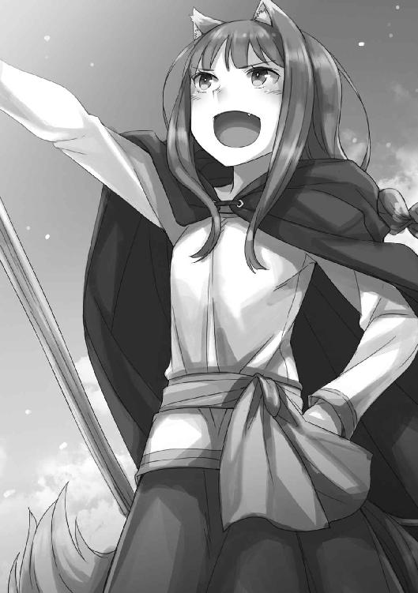
「くふ」
さっきまでの裏返しか、ホロは荷台の上でにまにましている。狼の面目躍如、というところだろう。仕組みがわかれば、あっという間のこと。ホロは顎だけで羊を操って、ぐるぐるとそこら辺を散歩までさせた。
それでだいぶ気が晴れたのか、荷台から降りてきたが、その間はもうろくに羊のほうを見ないままに群れを操っていた。
「たまには物の見方を変えるべきじゃったな」
ロレンスが肩をすくめると、ホロは自嘲気味に笑っていた。
「もう長いこと一匹の羊しか見ておらんかったからの。仕方ありんせん」
そう言って、ロレンスにしがみついてきた。
「俺はこの先もずっと一頭の狼だけ見てればいいんだから、楽なものだ」
「ほかの狼を見ておったら、承知せん」
「もちろんですとも」
ホロの頭を撫で、ロレンスはやれやれとため息をついて、言った。
「セリムを雇っても大丈夫そうか？」
ホロはロレンスにしがみついたまま大きく息を吸って、止めた。
「きっとお前とも仲良くなれるよ」
「たわけ」
息を吐いたホロは、笑っていた。
「わっちゃあ子供ではありんせん」
そうでしょうとも、と肩をすくめると、ホロはけらけら笑いながら顔を擦りつけてくる。
羊たちは呆れたようにめえめえ鳴きながら、ぐるぐると円を描いて歩き回っていた。
それから無事に相棒を炭焼き小屋に預けたホラッドが戻って来て、羊の群れを明け渡した。腰はまだ痛かったが、そろそろ出発しないとならない。
ホラッドたちが見えなくなってから、ロレンスも御者台に座り、手綱を握る。
「さあ、家に帰ろう」
「うむ」
隣に座ったホロが、いつもの調子でそう答える。
足元が泥だらけなことなど欠片も気にせず、ホロはロレンスの肩に頭を預けて、尻尾をわさわさ揺らしていた。
冬がそろそろ終わろうかという頃。
新しい季節の、始まりが感じられる頃の話だった。
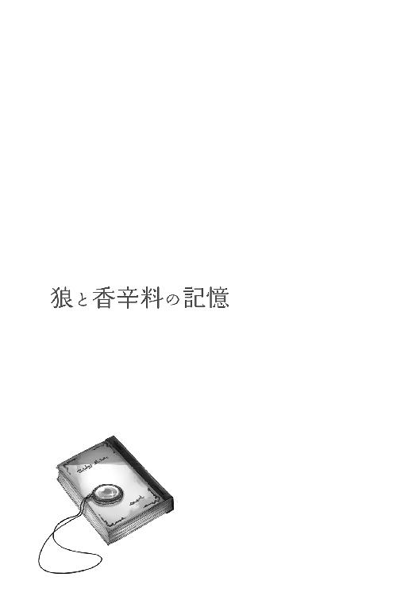
良い天気だった。
晴れるとかえって寒くなる冬とは違い、最近は素直に気温が上がってぽかぽかとする。厚着のまま日向にいれば軽く汗ばむほどで、そんな時は日陰に避難した。暗がりには冬が居座っていて、ひんやりして心地良い。土を探せば、霜柱をざくざく踏む楽しみも残っているというおまけつきだ。
そんな日和の中、客がまだいない湯屋の風呂脇に、筵を敷いて作業をしていた。
筵の上に文字どおり山積みされているのは、山から採ってきたばかりで、まだあちこちに氷がついている山菜だった。先端の丸まった新芽の部分だけを食べるため、もぎり、笊に放る。残りの部分は天日に干して乾燥させて、馬や羊の飼料にする。新芽の部分は、他の山菜と鶏の骨と生姜と一緒に煮込むと、さっぱりしたスープになる。冬の間に塩漬けの肉や魚しか食べられず、体調が悪くなったような者たちには大好評だ。
初めて食べた時は兎用のスープかと思ったが、慣れると山菜の歯ごたえと、鳥の骨から出た油のほんのりした甘みが癖になる。日が暮れればまだまだ寒い夜には、生姜が利いて体も温まってよい。ついでに強めの蒸留酒などがあれば完璧だ、と思って危うくよだれが垂れかける。
そんなことを考えながら、山菜を右から取って先端を摘み、正面の笊に入れて残りを左に投げる。それを、延々と繰り返す。仕事は他にも山を為して待っている。
単調な作業と日差しのせいもあって、眠気がくるのは間もなくのことだった。
何度となくうつらうつらして、がくりと首が落ちる。そのたびに目を擦り、あくびをする。
平和で穏やかな初春の日和は、あまりに平和なのが、少し面白くないくらいだ。
「ホロ様」
不意に名を呼ばれ、びくりと目を開けた。どうやら、作業をしているという夢を見ていたらしい。見やれば、側に一人の娘が立っている。線が細くて、銀色とはまた違う白髪に近い髪色のせいか、日差しの中にいると搔き消えてしまいそうな儚さがある。
湯屋〝狼と香辛料亭〟に新しく雇い入れた娘、セリムだった。
本当は夏頃に来てもらう予定だったのが、ついこの間から住み込みで働いている。
「ん、む......まずいところを見られたのう」
おどけると、セリムは目をぱちくりとさせ、困ったような笑顔を見せた。
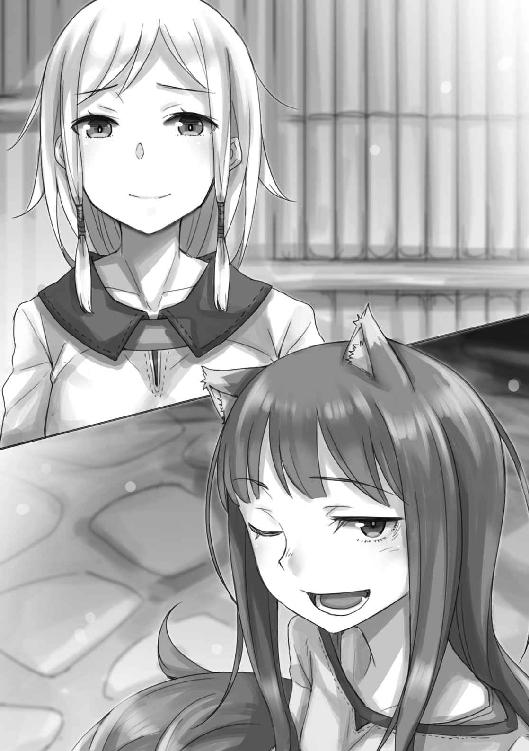
「ロレンス様から、きっと寝ているから起こして来て欲しいと......」
「なんじゃと？」
あのたわけめ、と言いかけて、大きなあくびが搔き消してしまう。
連れは大事なことはいつも気づかないのに、妙なところにだけ目端が利く。
やれやれと大きな伸びをして息を吐くと、セリムはきょとんとしていた。
「ふわあ......あふ。すまぬ......この季節は眠くなっていかんのう」
目を閉じ、耳と尻尾を水しぶきを弾くようにぶるぶるとさせる。少しだけ、眠気が収まった。
大げさに眠い様子を見せたら、セリムは素直に笑ってくれていた。
やや堅苦しいところのある娘なので、もう少し楽に構えてくれたらちょうどいい。
「それで、なんの用だったかや」
「はい。そろそろお昼なのでお呼びするようにと」
「むう。もうそんな時間かや。すぐに向かうからと伝えておいてくりゃれ」
「畏まりました」
しずしずと頭を垂れていたのだが、ふと、そのままこちらを見ていることに気がついた。
「ホロ様、葉かなにかで怪我をされてませんか？」
「怪我？」
山菜は柔らかく、手を切るような類の物ではないし、刃物も使っていない。
「ええ、少し、血の匂いが......」
セリムがおずおずと言う前で、はて、と自分の様子を確認して、腕を上げた時だった。
ぼろん、と音がしそうなくらいに丸々と太った、山蛭が手首にぶら下がっていた。
「む、こやつか」
眠気と、山菜についている凍った朝露の冷たさのせいで、全く気がつかなかった。食い意地の張ったやつで、御馳走を見つけた時のミューリみたいに、なおも口を離さない。なかなか根性のある蛭を、指で摘まんで引っぺがそうとしたら、セリムに止められた。
「ホロ様、いけません。少しお待ちください。火を持ってまいりますので」
そう言って、ぱたぱたと母屋のほうに駆けていく。燃えさしなどで炙ると簡単に取れるのだ。
「......これ、たわけが。新入りに余計な気を使わせてしまったじゃろうが」
まるまる膨らんだ蛭を指で弾くと、ぶらぶらと揺れた。
セリムはいかにも線の細いおとなしげな娘なので、蛭を見て卒倒する類であったらどうしようかと思っていたが、そんなことはなさそうだった。南の地では、仲間たちと一緒に食うや食わずで、傭兵の真似事をして糊口をしのいでいたと言うから、案外芯は強いのかもしれない。それに、鼻も利くらしい。
セリムは自分と同じ、狼の化身であり、人の形は仮の姿だ。湯屋に新しく雇い入れるにあたって、この耳と尻尾のことを隠さなくて良い相手なのは助かっている。
だが、セリムを雇い入れる際は、新しい人を雇うことそのものに大きな不安があった。情けないことだが、もしかしたら自分の居場所が脅かされるのでは、と思ったのだ。
幸いなことに、それは今のところ杞憂で済んでいる。むしろセリムは、こちらを立てすぎるきらいがあるほどだった。
ほどなくして、そのセリムが炊事場から燃えさしを持ってきて、蛭を炙ってくれた。たちまちころりと外れたのを摘まみ、山のほうに放り投げた。
「吸われてしまった分、昼飯をたんと食べなければの」
セリムは微笑み、山菜の茎の部分をまとめて抱え上げた。
「では、こちらだけ先に干しておきますね」
「頼みんす」
新入りは働き者でもある。湯屋の若い働き手が二人もいっぺんにいなくなったのでどうなることかと思ったが、これならば客が来ても困るまい。
そんなことを思いながら、もう一度大きく伸びをして、背骨をこきりと鳴らす。
「さて、飯じゃ飯じゃ」
初春の日差しで膨らんだ尻尾が、わさりと音を立てたのだった。
「セリムさんはどんな感じだ？」
夜、寝室で書き物をする連れは、こちらを見ないままにそう言った。
そろそろこの冬毛も生え代わりの季節だろうか、などと思いながら尻尾の毛づくろいをせっせとしている最中のことだった。
「わっちが思っておったのとはちょっと違う感じじゃな」
「んん？」
ちょうど文章を書き終わったのか、連れがこちらを見た。出会ったのは十年かもう少し前で、その頃から大きく変わっているようであり、そうでないようにも思える。
いや、やはり少し肥えたかな、と捻った連れの首元を見て思う。
「それは良いほうに？ 悪いほうに？」
「おおむね良い意味じゃ」
連れに買わせた高価な花の油をまぶして櫛で梳くと、尻尾の毛が上品にふんわりと仕上がった。
「残りは、良い意味で悪いほうに予想が違っておったかのう」
「良い意味で悪い......なに？ どういう意味だ？」
連れは訝しげな顔をしている。多分、新しく人を雇わないと湯屋の経営がままならないとわかりつつ、セリムを雇ったことに対して未だに心配があるのだろう。
それは商店の主が小僧を雇い、給与に見合う働きをするだろうか、というような意味ではなく、ひとつ屋根の下に、若い雌を置くことからくる不安のはずだ。しかもセリムはおとなしくて控えめで、おまけに幸薄そうな雰囲気を身にまとう、いかにも連れの好きそうな娘なのだ。
そして、そのことをこちらがわかっている、と連れもわかっている。へたなことをすればたちまち面倒な騒ぎになる、と構えているのもまた、よくわかる。
とはいえ、連れのことは一応信用もしている。いくらセリムが連れの好みの娘であろうとも、よもや浮気をするなどとは思わない。代わりに、なにかにつけて考えすぎの連れが、セリムのことを過剰に気にしすぎてあたふたするのでは、と思っていた。
ところが連れも歳を重ねて落ち着きが出たのか、昔ならばたおやかに微笑まれたらうっかり見惚れていたような娘が相手でも、実にてきぱきと仕事を振っていた。また同時に、仲間たちと離れてここで働くセリムのことを、上手に気遣っていた。
もちろん、それでこちらのことを疎かにするわけでもない。
一言で言えば、今のところ、拍子抜けするほどうまく回っていた。
ややこしいのは、それはそれで、望んでいた形と少し違うからだった。
「わっちゃあ、実のところ、期待しておったんじゃ」
連れはこちらをじっと見て、真意を探ろうとしている。表面上は穏やかだったはずなのに、気づいていない波乱があったのか？ と固唾を吞んでいる。
そんな様子を見ていると、真面目な雄だ、と微笑ましくなる。
なにごとにも一生懸命なところに、ほだされたようなものなのだから。
「というのはのう」
ベッドからするりと降りて、連れの側に立つ。手でしっしっとすると、連れは躊躇いがちに椅子の上で体をずらし、こちらが座る場所を空けてくれる。
机の上にはたくさんの手紙が広げられ、インクが乾くのを待っている。
「ぬしが想像以上にうまくやっておるせいで、喧嘩のけの字も見当たらぬのが不満じゃな」
少し仰け反り気味だった連れの顔に、安堵代わりの呆れた色が浮かぶ。
「なんだそれは......。じゃあ、今のところ問題なしってことだな？」
「ふうむ。久しぶりに、ぬしとぎすぎすできると思ったんじゃが」
そう言って連れの肩に顔を預けると、連れははっきりと嫌そうにひきつった笑みを浮かべていた。
「揉め事はないほうがいいだろ」
「肉や酒に胡椒を利かせると、ぴりりと刺激があるじゃろ？ ミューリの手前、おしとやかに暮らしておったが、それもおらんようになったことだしのう」
連れの肩に頰を擦りつけて、尻尾をわさわさと振る。
「まったく......」
ただ、連れはため息をついて机に向き直ると、やや狭苦しそうに手紙の続きを書き始めた。
昔はこんなふうにしなだれかかったら、それだけであたふたして随分可愛かったのに、と面白くない。それにこれではまるで、自分が遊びのことばかり考えているように見えてしまう。
じゃれつくのは諦めて、真面目な話をした。
「それで、ぬしよ。どうにか湯屋は開けそうなのかや？」
これまで湯屋を支えてくれていた、有能なコル坊がいなくなり、その後を追いかけて一人娘のミューリもいなくなった。若者二人がいなくなれば、単純に人手が足りていない。
もしかしたら、連れがせっせと書いている客への手紙は、冬に逗留してくれたお礼と、次の季節に来てくれるようにという営業のものではなく、人手が足りないから来るのは見合わせて欲しい、という断りの手紙かとも少し勘ぐった。
この湯屋で簡単に人を雇うことができないのは、間違いなく人ならざる者である自分のせいだ。耳と尻尾を器用に隠せればいいのだが、それができないので難儀している。
そこに負い目がないと言えば、噓だ。
「セリムさんは十分働いてくれてるからな。やっていけそうだよ。むしろ悪戯ばっかりで、一つ仕事をすると二つ仕事を増やすミューリとは違うから、もっと楽になりそうだ」
「あのたわけは本当に悪戯ばかりじゃからのう。誰に似たものやら知らぬが」
ため息をつくと、連れがなんとも言えない目を向けてくる。
半目で睨み返すと、羊のようにすいっと目を逸らす。
「その代わり、湯屋の賑やかさは少し減りそうじゃ。大丈夫なのかや？」
そう言うと、顔を背けていた連れは、そのまま力なく額を下げる。
「そこは俺も気にしてるんだ。高位の聖職者連中の話し相手になっていたコルもいなくなったからな......。その辺りを考えると、客からは魅力が減って見えるのは否めない」
「ぬしは商いの話しかできないからのう」
「お前が歌って踊ってくれても構わないんだが？」
長逗留の無聊をいかに慰めるかが、それぞれの湯屋の腕の見せ所だ。この〝狼と香辛料亭〟は、小難しい話ができるコル坊と、踊り子に負けない明るさのミューリの存在が、少なからぬ売りだった。
しかし、コル坊の代わりはともかく、ミューリの代わりを務める様を想像して、げんなりする。
「まあ、普段の仕事を兼ねながらだと、単純に大変だよな。俺は、ちょっと見てみたいけど」
「......」
連れが本気で言っているのは、照れたような顔からよくわかるが、やっぱりこのたわけはなにもわかっていないと思った。
今のこの人の姿は、確かに人の基準で言えば若い。しかし、本当に若いミューリのことを思えば、その代わりに踊るなどというのがどれほど無謀なことか、恐ろしいほどに想像がつく。
悪くないがなにか違うな？ と微妙な笑顔を見せる客たちの様子が容易に目に浮かぶ。
瓜二つなどと評されはするが、若さで娘と張り合うことほど、無謀なこともない。
見た目は全く同じでも、中身が若い娘とは、滲み出るなにかが完全に違うのだ。
「どうせなら、わっちゃあ飯をとことんこだわるほうが良いんじゃがな」
この話題に深く留まると、賢狼としての沽券に関わりそうだったので早急に切り替えた。
「飯かあ。確かに、それならお前も一家言あるしな」
「ハンナのやつは仕事が増えて嫌そうな顔をするかもしれんが」
炊事場を任せている者で、ハンナもまた人ならざる鳥の化身だ。
「盗み食いをするのが一人減ったから、その分で賄えるだろう」
こうしてみると、ミューリは湯屋の主人の一人娘として、経営を手伝っていたのか単に好き放題遊んでいたのかよくわからなくなる。
元気ならば良い、と思っていたが、やはり放置しすぎだったかもしれない。
「しかし、ミューリがいないとやっぱり静かだな」
連れは手紙を書く手を止め、顔を上げると遠くを見るように言った。この時間ならミューリは同じ部屋のベッドでいびきをかいているか、蠟燭の灯りで勉学に励むコル坊の部屋に遊びに行って、悪戯をして怒られている声が聞こえてくるかのどちらかだ。
ミューリが旅に出たと判明してからの連れの騒ぎようはなかなかのもので、ようやく受け入れたと思っていたのに、まだ多少引きずっているらしい。
「旅先で困ったりしていないだろうか......」
「この間も手紙が来たばかりじゃろ？」
「それはそうだが......」
まだうじうじとする連れに、ため息をついてから、抱きついた。
「ぬしの隣におるのは誰か、忘れたのかや？」
椅子からずり落ちそうになった連れは、反対側で足を踏ん張って、なんとか耐えた。
そして、気が抜けたように笑う。
「そうだな。俺の隣にはいつだってお前がいるんだから」
「んむ。嫁に行った娘のことなどさっさと忘れたほうが身のためじゃ」
「よ、嫁になど行ってないだろ！」
ミューリとコルは仲の良い兄妹だ、と頑なに自分に言い聞かせているたわけは、反射的に言い返していた。もちろん、本気で反対していないことくらいはわかる。連れは一人娘の父親の役を、存分に楽しんでいるのだ。
ならばこちらも、自分の役を楽しまなければならない。
「ほれほれ。わっちゃあどこにも行きはせぬが、ぬしがうっかり腕を離したら、風に飛ばされてしまうかもしれぬ」
連れの尖った肩で、耳の付け根を搔きながらそう言った。
獣脂の蠟燭はそろそろ燃えつきそうなので、良い頃合だ。
「そうは思わぬかや？」
揺らめく蠟燭の灯りの下で、目を細めてにんまり笑う。
連れはいつもこういう時、ちょっと怖がるような顔をする。
まるで奈落の底に落ちていくかのような気がするんだよ、といつか言っていた気がする。
言わんとすることは、わからなくもない。
なにせ二人は、恋に落ちた果てに、今ここにいるのだから。
「仰せのとおりですよ」
連れはこちらを抱きしめ返し、そのまま抱えるようにして立ち上がると、ベッドに向かう。
ほどなく獣脂が燃え尽きて、部屋に暗闇が落ちる。
客のいない湯屋はとても静かで、木窓の外では梟がほうほうと鳴いている。
「くふ」
連れの腕の中で、身をよじる。
「ぬしよ、優しくしてくりゃ──」
そこまで言ったところで、がくん、と連れが足を踏み外した。暗闇の中で姿勢を崩し、床に落ちる。
たわけの連れは、肝心な時にいつもこうだった。
◇◇
どすっと衝撃に見舞われてから早速文句を言おうとしたら、なにか妙だった。
「この、たわけっ......が......？」
気がついたら、筵の上に横倒しになっていた。
目の前では、下処理を待つ山菜の山が、春の日差しに照らされてきらきらと輝いている。湯船には誰もおらず、湯が流れ込むさらさらという音だけがしていた。
「う......む......？」
春の陽気に、完全に居眠りをしていたらしい。良いところで目が覚めたのが悔しいのと、日差しが暖かくて服を着たまま湯に浸かっているような心地良さに、再び目を閉じていたくなる。
が、こんな醜態をセリムに見られてはならない。
なんとか体を起こして大あくびをして、山菜に手を伸ばす。
「それにしても......妙に鮮明な夢じゃったのう......」
ぷつ、ぷちり、と新芽を摘みながら、なにか変な感じがする。
「......いや、夢ではありんせん。あれは昨日のこと......う、む？」
そう呟き、ふと疑問に思った。
この山菜の新芽を摘むのは何日目だろう？ 山に入ればいくらでも獲れるので、村の暇な女や子供たちが小遣い稼ぎに大量に摘んでくる。家畜の飼料にもなるので、客のいない時期には、どこの家でも来る日も来る日も可能な限りに干して備蓄している。昨日と今日の区別はなく、きっと明日も同じ作業を繰り返すだろう。
積み上げられた山菜には、朝露の凍った氷がまだついていて、日差しに照らされきらきらと輝いている。気温が上がり始めているので、溶けた滴が蜜のように丸くなっている。この山菜の新芽を摘み取る作業をすると、この村に春が来た、と思う。
だが、春そのものの到来も、一体何度目なのだろう？ 十回目？ 十二回目？ ミューリとコル坊が宿を出たのは、今年の話？ それとも？
かつて自分がいた麦畑では、赤子が子供になり、子供が大人になり、大人が年老いるような大まかさで、年の刻みを数えていた。一年の中でさえ、季節の移り変わりと、年に数回あるお祭りの時でしか、日にちというものを認識することができなかった。後はすべて、茫漠とした「日常」という織物の中の糸にすぎない。
ありふれた日常の記憶は、前後関係があまりにも曖昧だった。これが何年も前の記憶となればなおさらだ。
連れが客への手紙をたくさんしたためた夜、獣脂の蠟燭が消えた後に寝床に運んでもらったのは、本当に昨晩のことだろうか？ 懐かしい夢を見ていただけではなかろうか？ 麦畑で、故郷の者たちのことを思い出して微睡んでいた時のように。
突然、胸の内がざわつきはじめ、空を見た。そこには一足先に冬を終えた太陽が、無言で暖かく輝いている。だが、あまりに静かだ。これは夢なのか？
胸の内の鼓動がはっきり聞こえるくらい、不安がせり上がってくる。こんなに静かな湯屋にいる夢を見ているとしたら、その夢の外がどうなっているか、考えるまでもない。
自分は、連れやコル坊や、他の村人たちとは違う。彼らの一生は、自分がまばたきするほんの一瞬の出来事でしかない。最愛の者たちが自分だけを残し、永遠に湯屋から立ち去ってしまうのは、夢や幻覚ではない。それは、いつか必ず来る現実なのだ。
「......」
不安と孤独で涙が滲み、連れの名をなりふり構わず大声で叫ぼうとした、その時だった。近くの森から鳥の群れがまとめて飛び出してきて、じゃれ合いながら飛んでいった。風が吹き、森の木立が揺れ、湯にも小さなさざ波が立った。頰に当たった風からは、まだはっきりと冬の冷たさを感じられた。そのすべてが、夢というにはあまりに鮮明だった。
幼子のように泣く前に、自分の左手首を見る。そこには、蛭に嚙まれた痕がうっすらと残っている。つねれば、痛みを感じることもできた。
夢ではないし、蛭に手首を嚙まれたその日の夜、連れの肩と言わず首と言わず、たくさん嚙みついたのも確かなことだ。その細部まで思い出してきて、ようやく現実に戻ってこられた。うたたねのせいで、寝ぼけていたのだ。
「......たわけが......」
安堵と同時に、情けなくなった。
自分の心の底には、暗いものを詰め込んだ井戸がある。そこには暑苦しいくらいの幸せの重みで、きつく蓋をしてある。いつもはその存在すら忘れているが、油断すると、漏れ出てきてしまう。井戸の中の闇には、孤独、という名前がついている。
幸せな日常は、昨日と今日の区別もなく続いていく。幸せすぎると、時間はあまりに早く経ってしまう。
だから昨晩、寝室で連れに向けた言葉は噓ではない。セリムという新入りには、いくつかの期待があった。
ひとつは、連れが苦労して作ったこの湯屋を盛り立てていけるように、純粋に人手として役に立つこと。それからもうひとつは、連れと喧嘩をする火種になってくれないかというもの。
そうすれば、その喧嘩と仲直りの記憶は、日常という織物の中のはっきりとした模様となり、確かな思い出となり、孤独の井戸の蓋をきつく抑えてくれる。他の千や万の波風のない日々は、昼下がりの微睡と区別がつかなくなり、記憶の彼方に押し流される。
時間が経つのはあまりにも早い。忘れないようにするには、爪で目印になる傷をつけるしかない。手首についた、蛭に嚙まれた痕のように。
しかし、人や獣の営みとは、同じことのひたすらの繰り返しに他ならない。だから自分にできるのは、翌日には忘れてしまうような、ちょっとした慰めでこの不安を鎮めることだけだ。
仕事中の連れに後ろから抱きついたり、蒸留酒を酩酊するまで飲んでみたり、一人娘が好いた雄を捕まえられるように、知恵の限りを寝物語に授けたり。
とはいえ、それらは冬に備えて夏の空気を瓶詰にしておくような行為に近いのだろう。
繰り返しの日常はあらゆることを摩耗させる。そうして日々は滑らかに、順調に進んでいく代わり、記憶に残らなくなる。
山菜の新芽を摘み取る作業が嫌いなわけではない。地道な作業の積み重ねで湯屋が営まれ、湯屋がうまく回れば連れは喜んでくれる。結局、贅沢者なのだ、と思う。肉を咥え込んだまま水面を覗き、そこに映った肉も咥えようとする犬のように。
「たわけじゃ」
そう呟き、新芽を摘み取る作業に戻る。
幸せなのに、その幸せのひとつひとつに名前をつけられないのが、悲しかった。
真面目に作業に取り掛かったせいか、昼前に山菜の新芽を摘む作業が終わった。
食べられる新芽を炊事場に運ぶついでに、飼料になる部分をセリムに干してもらおうと、母屋に向かう。ついでに連れの姿を見つけて、しがみついておきたい。昆虫が樹液を啜るようなものだ。連れには唐変木なところがあるので、話は合っている。
「旦那様でしたら、表にいましたよ」
炊事場で山菜を湯がいていたハンナが、そう教えてくれた。早速そちらに向かう途中に棚から干し肉を数切れ失敬したら、もう少しで昼御飯ですよ、と小言を言われてしまった。
湯屋の表にいるということは、広い場所でなにか力仕事でもしているのだろうか。雪が解けた山道を通って行商人が商品を売りに来たか、川を伝って荷を積んだ船が到着したのだろう。
力仕事の最中はさすがにちょっかいを出せないが、終えた後なら、風呂に誘えば来るかもしれない。
そんなあれこれを考えながら廊下を抜けて表に出れば、そこには連れと、セリムがいた。
「申し訳ありません......」
「気にしないでください。きちんと指示しなかったのも悪いので」
二人はそんな会話をしながら、湯屋の表玄関脇に積み上げられた飼料の束を解いていた。
「なにをしておるんじゃ？」
声をかけると、二人そろって振り向いた。
「ああ、お前か。ちょうどいい、手伝ってくれ」
「手伝う？」
連れの横では、同じ作業をしていたセリムが手を止めてこちらを見て、申し訳なさそうな顔をしてしゅんとしている。そうしていると、ただでさえ華奢な肩がなくなってしまいそうだ。
「その......飼料をまとめる縄を、間違えてしまって......」
か細く答えると、再び作業に戻る。どうやら、まとめていた束を解いているらしい。
「ふむ。全部解けばいいのかや？」
「いや、新しい縄だけにしてくれ。あと、三本縒りの縄が混じってるから、それも解いてくれ」
「面倒じゃのう」
連れへのいつもの軽口で言ったつもりだが、セリムがびくりと体をすくませていた。
「う、む、ぬしに言ったわけではありんせん。わっちもよく間違えるからのう」
慌てて言い添えた。慣れない群れの中で、娘は不安でいっぱいなのだ。いつもの調子で連れに甘嚙みしているつもりでも、刺々しく聞こえてしまうらしい。注意しなければならない。
とびっきりの笑顔をセリムに向けてから、作業に取り掛かった。
連れが言うには、古い縄を使って干し草を束にしておいて欲しいとセリムに言ったら、古い縄と新しい縄を取り違えてしまったらしい。古い麻縄も新しい麻縄も納屋の同じ場所に置かれているので、ややこしいのは確かだ。
作業は三人でやればそこそこ早くに終わったし、古いものから使うというのは行商人上がりの連れのせせこましい節約術なので、むしろ連れが悪いと言ってやった。
それに、セリムがほどほどに失敗してくれたほうが、自分も仕事の手を抜く口実になって助かるというものだ。もしもこれで仕事が完璧だと、こちらの息が詰まってしまう。
そう思っていたのだが、セリムはまた翌日もちょっとした失敗をした。
ニョッヒラの村は、春に村人たちだけの内輪の小さな祭りを執り行う。アルゼウリという温泉の守護聖人とやらを祭るものだ。その祭りに使う献灯用の蠟燭を取り違えていた。
蜜蠟を渡すところが、獣脂の蠟燭を箱に詰めて村の寄合所に運んでいたらしい。
「申し訳ありません......」
立て続けの失敗が応えたのか、セリムは今にも泣きだしそうだった。しかし取りかえれば済む話だし、セリムが仕事で手を抜いている感じは一切ない。文句も言わず働き、言われたことはきちんとこなす。なので、勿論叱責などせずにさっさと用意し直して、寄合所に運ぶだけ。
それに、この頃には段々セリムのこともわかってきていた。真面目で一生懸命だが、ちょっと抜けているところがあるのだ。躓いたり、なにかを取り落としたりがちょくちょくある。そのことに自覚もあるようで、なんとか注意して克服しようというところがまた健気だった。ますます連れが好きそうな性格だろう。
なので、蜜蠟と獣脂の蠟燭を間違えてもさほど驚かない。似たような形に成形されていたし、そもそも蜜蠟を見たことがなかったのかもしれない。
そんな具合だったので、セリムの失敗は連れと並んで夜眠る前、少し交わす雑談の中で出てくる程度のものだった。問題は、どうやら当人にとってはそうではなかったらしいことだ。
蠟燭を取り違えた日から、随分と落ち込んでいた。おとなしい娘なので、余計に自分を責めているのかもしれない。
貴重な働き手であり、辞めてもらわれては自分も困る。たとえ辞めないにしても、落ち込まれたままでは湯屋の雰囲気に関わってくる。ここは笑いと幸福の湧き出る湯屋、と評判の場所なのだから、辛気臭いのはご法度だ。
だがどうすればいいのだろうか。セリムは気晴らしに酒を飲むという感じでもない。気にするなと言えば、余計に気にしてしまいそうに思える。
長く生きてきたのに、こういう場面に出くわすのはほとんど初めてのことだった。
誰かをうまく励ますにはどうすればいいのか......と考えていたものの、良い案が浮かばず、日々の仕事にもかまけて声をかけそびれていたところ、ある日、連れから耳打ちをされた。
「セリムさんのことだけどな、ちょっと協力してくれないか」
「協力？」
「なにか都合をつけて、山に連れ出してくれないかな」
なにを言い出すのかと、訝しげに見返した。
「新しい湯を見つけるとかなんとか言って連れ出したら、ついでに山向こうに連れていってやってくれないか」
そこまで言われて、ようやく合点がいった。
「身内に会わせて来い、ということかや」
「うん」
セリムの兄や、血筋の者たちは、今はニョッヒラから山を二つ三つ挟んだ向こうで、宿を作っている。聖女の奇跡が起きた霊験あらたかな場所であるぞ、ということで巡礼客を集めて一儲けを目論んでいるらしい。真面目なコル坊が知ったら良い顔をしないだろうが、発案者は連れだ。スヴェルネルの町で途方に暮れていた彼らを助けるには、そんな案しかなかったのだ。
問題は、その聖女役をセリムがやったことだった。聖女は地中深くに埋まっている設定だったので、そのセリムが宿にいてはおかしなことになる。よって、人手のいなかったこともあって〝狼と香辛料亭〟で雇ったのだが、彼らは離れ離れに暮らすことを余儀なくされた。
もちろん狼の姿に戻ってひと駆けすれば、あっという間に着く距離なので、今生の別れというわけではない。
だからこそ、連れの案は逆効果ではないかと思った。
「あの娘は新しい群れになじもうとしている最中じゃろう？ なのにさほどの間も開けず、元の群れに会わせるようなことをすれば、娘やその仲間の覚悟を疑うことになりはせぬかや」
特に、セリムやその兄は生真面目だ。セリムがこの宿に初めて来た日は、まるで戦に赴くかのような固い顔だった。狼の眷属たるもの、なにがあろうとも一度決めた道から退くことはまかりならん、と。
だが、連れはこう言った。
「理屈の上ではそうかもな」
「ぬしよ、わっちゃあ真面目に──」
と、言いかけたのを止めたのは、連れの目だった。
いつも自信なさげで、たまにあるかと思えば変な思い込みというのは相変わらずだが、時折、この賢狼も歯が立たない確固たる信念を持っていることがある。
そういう時、絶対の確信を持っているというのに、なぜかいつもその目は悲しげに見える。
連れのこの目に、とても弱い。
耳と尻尾が、思わず垂れてしまう。
「俺は元行商人だ。家族や仲間と遠く離れて暮らす者たちを、何度も送り届けてきた。荷台でひたすらに文句を言う奴も多かったよ。絶対に会いたくないとか、今更会えないとか、会ったらぶん殴ってやるとかな」
連れは疲れたように微笑み、目線の高さを合わせてきた。
まるで、子供に諭すかのように。
「でも、会えば必ず喜ぶんだ。それは理屈じゃない」
そして、こちらの頰に手を伸ばしてくる。
びくりとすくんでしまうのは、心の柔らかい部分に、直接触られるような感じがするからだろう。
「お前も、身に覚えがあるだろ？」
そのとおりだった。
故郷に帰りたくて、でもその道筋がわからなくて麦畑で途方に暮れている時に、連れの荷馬車に無理やり潜り込んだ。後は野となれ山となれと思っていた。それほどに、故郷が恋しかったからだ。
そして、連れは多くの危険を抱え込んでまで、自分を連れていってくれた。当初は底抜けのお人好しだから、程度に思っていたが、そうではない。連れには連れの、経験から来る信念がある。
「それに、セリムさんの兄たちが、近すぎるところにいるってのも問題なんだろ」
「......ん、む？」
「多分、お前と同じように考えてるはずだ。一度世話になると決めたからには必ずそれを全うする、とな。その時、仲間がすぐ近くにいるというのは、かえって重しになるだろう。近くにいるからこそ、おいそれと会ってはならないと考える。それは甘えで、情けないことだと」
「ん、む......違う、のかや？」
と見返すと、連れは苦笑していた。
「セリムさんが一生懸命、この湯屋の一員になろうとしてくれているのはわかってる。けど、いつだって新入りは心細いもんだ。一方で、セリムの兄の、妹を見送る時の顔だよ。心配で破裂しそうだったろう？ それならセリムさんを連れてっても邪険にするはずがない。励ましたり、慰めてくれたりするはずだ。俺たちがあれこれ言うより、百倍は効果があるだろう。そんな相手がさほど遠くないところにいるってのに、どうして会いに行っちゃいけないんだ？」
ごちゃごちゃになっている糸の、その両端を摑んで引っ張ってみたら全然絡まっていなかった、みたいな考え方だった。
目的があって手段があるなら、そうすべき。
きっとこれは商人らしい考え方、とでも言うのだろう。
もちろんそこには、この連れ独自の人生観と、それから生来のお人好しがたっぷり含まれている。使用人を道具のように使う湯屋は少なくないし、人の世ではそれがむしろ当たり前で、折檻しないだけ主人としてよくできている、という感さえある。
だが、連れはそういう性格ではない。荷馬車の荷台に乗っけた者は仲間とみなして、全力で関わりを持とうとする。それは商人らしい、積み荷への執着と同じかもしれない。
自分が積み荷の身分だった時は、他の積み荷への扱いに一喜一憂して身を焦がしたりもしたが、今は御者台で連れの隣に座っている。
だから積み荷への気遣いは、同じ旅路の仲間として頼りがいがあるし、誇らしくさえある。
仲間のためになると思うなら常識にさえとらわれない連れは、憎らしいくらい、格好良かった。
「ん？ どうした？」
連れはこちらの様子に気がつき、きょとんとしている。
胸の内のふわふわにこらえきれず、にんまり笑って、連れの首にすがりつく。
「ぬしはたわけじゃ、このたわけ」
「はあ？」
怪訝そうではあったが、ぱたぱたと音を立てる耳と尻尾で、こちらの機嫌の良さは理解したらしい。
お返しとばかりに抱きしめ返してくれたので、ひとまず胸の内のふわふわは収まった。
「ふむ......それで、ぬしの案じゃがな、構わぬがこの時期はもう山に人がおるからのう。夜が更けてからになるがよいかや？」
「ああ、もちろん。昼間は仕事だってあるしな」
「たわけ。そうではありんせん」
連れは不思議そうな顔をしている。なにを言われたのかわからなかったらしい。
「ぬしは一人で寝て、寂しくないのかやと聞いておる」
娘のミューリもいないのだ。
すると、連れは少し驚いてから、小さく笑っていた。
「なに、お前が帰ってきた時に、そのありがたみがよくわかるというものだ」
連れもこちらの扱いを心得ている。
「くふ。ま、いいじゃろ」
結局我慢できずにまたしがみついて、尻尾がわさわさと揺れてしまったのだった。
満月とはいかなかったが、おあつらえ向きに月が出ていた。
夕食を食べ、普段ならそろそろ床に就こうかという時間、湯屋の裏手に集まった。
人など軽く丸吞みにできるこの賢狼と、森を普通にうろついていても違和感のない、こぢんまりとした狼。それから、寒そうな連れだ。
「お前らの毛皮が羨ましいよ」
日が暮れれば、山から真冬の空気が降りてくる。連れが喋ると、白い息が立ちのぼった。
『夜明け前には戻りんす』
「くれぐれも炭焼きの連中なんかに見つからないようにな」
『たわけ』
鼻先で小突くと、髭の辺りをがしがし撫でられる。いつもの何気ないやり取りだったが、側でセリムに見られていると気がつき、急に恥ずかしくなった。
『......ごほん。では、行くかや』
『はい』
若く、すらりとした狼は、月明かりでぼんやりと光っているように見える。
羨ましいというわけでは決してないが、その大きさなら狼のまま、連れと同じ部屋で暮らせるだろうな、と少し思った。
「頼んだぞ」
そんなことを知ってか知らずか、連れはそう言った。
表向きは新しい湯の探索だが、これはセリムのためだ。
返事はせず、踵を返して、たたっと駆け出した。雪が緩み出した頃は雪崩が起きないかと山をこの姿で見まわっていたが、最近はそういうこともなかった。大きな体で山を駆けまわる感覚が嬉しくて、つい速度が出てしまう。
湯屋の裏手の山の峰を登りきって振り向けば、セリムはすでに荒い息だった。
『すまぬ。速すぎるかや』
『い、いえ......あ、えっと、はい......』
無理をしてついていけなくなったら、さらに迷惑になる、と思ったらしい。
『ゆっくり行こう。久しぶりに走れて、仔のようにはしゃいでしまいんす』
勿論本当は全力で走りたかったし、できればここで月に向かって力の限りに遠吠えもしたいところだ。しかし、遠吠えなどしたらニョッヒラの村中に響き渡り、狼が出たと大騒ぎになる。村の人員が総出で火を焚いて、しばらくは夜を徹しての番になるだろう。
もちろん、誰の仕業かわかっている連れは、篝火の下で不機嫌顔のはずだ。
『まあ、はぐれても匂いを辿って帰れるじゃろ？』
軽口に、セリムは狼の口で器用に微笑みを見せた。
それからは軽い散策程度に、山をうろうろした。この辺りは自分の縄張りだ、と主張するわけではないが、律儀な熊や鹿が何事かとちらりと顔を見せに来たりした。
一応は湯の探索という名目なので、それっぽい匂いを辿りはするが、めぼしいところは湯屋を開く時に探索済みだ。それとなく回るだけで、足はセリムの兄や親族が宿を作っているという、山向こうの土地に向けていた。
ただ、セリムとてうぶで馬鹿な小娘ではない。二つ目の山の稜線を越えようかという時、意を決したように、こう言った。
『ホロ様』
『ん？』
『あの......申し訳、ありません......』
もちろん、とぼけることにした。
『なにを謝るのかや。きちんとついて来ておるではないか』
軽く笑いながら言ったので、セリムもそれ以上は口を開かなかった。
ただ、連れの論に賛成はしつつも、お節介かもしれないという懸念は依然として心の隅にあった。セリムがそれなり以上の決心をして、湯屋に来たのは間違いない。それを何度かの失敗で落ち込んでいるだけで特別に気を使えば、子供扱いをされていると傷つく可能性は十分にあった。
しかし、気遣いなどというのは、考えれば考えるほどこんがらがり、いつしか己の尻尾を咥える蛇のようになってしまうものだ。ならばひとまず思いついたことをやって、その誠意だけが伝わればいいという連れの考えは、爽快だし、きっと正しいのだと思う。
自分自身が、賢狼と呼ばれていたとか、不老長寿だとか、そもそも人ではないとか、そういうあれこれの建前に足がすくんでいた時、無理やりに手を引っ張ってくれたのはその連れだった。結果がどうであったかは、論ずるまでもない。
そして、セリムは縁があって自分たちの群れに加わった。楽しくやれればそれに越したことはなかった。
それからはどちらも口を開かず、たまには温泉が染み出していそうな窪地や谷間を覗き込み、三つ目の山を越えた。満月にはもう少しかかりそうな月は、とっくに頭上を越えている。草木も眠る時刻というやつだ。
連れは一人で震えていないだろうかと思っていると、視界の隅、森の木立の陰の奥に、ゆらりと動く姿があった。
『出迎えとは殊勝なことじゃ』
笑いながら呟くと、それが聞こえたわけでもなかろうが、さらにその後ろにいくつもの影が現れた。この時間は山から風が降りるので、風上のこちらの匂いが届いていたのだろう。
『ほれ』
隣で立ち尽くすセリムに水を向けるが、セリムは動かない。軟弱者、と兄たちから責められるのを恐れているのかもしれない。
しかし、連れて来てしまったものは仕方ないし、セリムは宿で辛気臭い。
そして、こちらの様子を黙って見つめている先頭に立つ狼は、毛色がセリムにそっくりで、ついでに今にも吠え出しそうなほど、心配そうな顔をしていた。
山に入ったミューリの帰りが遅い時、コル坊が同じような顔で、戸口の辺りをうろうろしていたのを思い出す。
心配性の雄は、人であれ狼であれ、似たようなものらしい。
『わっちらの厚意を無駄にするつもりかや？』
セリムの首を鼻先で突くと、ようやく何歩か歩き出す。
ちらりとこちらを見るセリムに、にやりと牙を剝いた。
『わっちなど、このなりで何度あの連れに泣きついたかわかりんせん』
セリムははっきり驚いていたが、同時にこちらの気持ちもわかってくれたらしい。
見開いた目から徐々に力が抜け、澄んだ目を向けてきた。
『ありがとうございます』
『たわけの連れに言うんじゃな』
セリムは返事もうなずきもせず、解き放たれたようにぱっと駆け出した。
兄も遅れてセリムに向かって駆け出していた。確かに叱ったり呆れたりもするだろうが、これまで苦難を共にしてきた妹を大事に思わないはずもない。連れの目論見は、憎いほど当たっていたようだ。
やれやれとため息をついて、さてどうするかとなった。ここにいれば、セリムの仲間が気を利かして鬱陶しいことになりそうだった。自分が側にいれば、セリムが気兼ねしてさっさと帰ろうと言い出すかもしれない。
邪魔をするのもなんなので、当初の目的どおり、湯でも探すことにした。自分用に思いきりのんびりできる場所が前々から欲しいと思っていたところでもある。
鼻を頼りにうろうろしていたら、二つ目の山に戻る途中で、自然に湯の湧いている場所が見つかった。どれだけ獲物を深追いしても、猟師でさえこんなところにまでは来ないという、谷の奥まった場所だった。
『ふむ。場所は良いが、少し狭いのう』
底は浅く、岩がちで、倒木やらも多くて、せいぜい熊が尻を濡らす程度の広さしかない。
湯も岩に遮られて、苦しそうに湧いている。人の姿に戻れば岩の隙間に体を押し込めなくもないが、そうまでするなら湯屋の湯でいい。
『ここに湧いておれば、他にも湧いておりそうなものじゃが』
山の斜面に沿ってうろうろしてみたが、湯脈は随分地下を通っているのか、見つからない。試しに倒木を咥えてどけて、小さめの岩を爪で引っ掛けて転がしてみたら、湯量が増えた気がする。岩やらをどけていけば、それなりに形になるかもしれなかった。
『ホロ様？』
そんな声がかかったのは、鼻先を湯につけ、どこから湯が湧き出ているのか調べている時だった。
『なんじゃ、もういいのかや』
『はい。それで、あの......』
と、耳と尻尾と頭を垂れたセリムの後ろには、その兄や血族が控えている。
やれやれとため息をつき、面倒なので再び湯の出どころを探りながら、言った。
『雁首揃えてなんの用かや』
『妹のことで、御迷惑を』
群れの長の格である、セリムの兄が一歩前に出て、言った。四角四面の、格式ばった態度と物言いだった。
この者たちは、不器用の余り、人を越える力を持ちながら、傭兵としては食べるのにも精いっぱいだったという。それに、かつてこの兄からは正直すぎる一言を向けられ、腹立たしい目にも遭わされた。概ね自分のほうに原因があるとは分かっていつつも、一度ついた苦手意識はなかなか取れない。
『迷惑などあるものかや。よく働いてもらっておる』
『ですが、妹はそちら様に預けた身。甘やかしてもらうのは──』
『血筋の名誉に関わる、と？』
群れの総勢は、セリムを入れて六匹だが、どれも小ぶりの者たちだ。たとえ取り囲まれたとしても、戦いになれば一瞬でけりがつくだろう。
それでも、だからこそ彼らは名誉を重んじるのかもしれない。
『......恐れながら』
兄は苦しそうに頭を垂れる。
御苦労なことだ、とため息をついた。
『わっちは連れの命で、新しい湯を探しに来ただけじゃ。里帰りは近くまで来たから、そのついでじゃ』
『で、ですが』
『じゃから、これからまたちょくちょく来るからのう。別れの挨拶は手短にしてくりゃれ。毎度時間をとられてはかなわぬ』
兄は真面目ゆえに、建前を出されると反論できないようだった。
何度か地面と妹との間で視線を動かして、ようやく、諦めたようにこちらを見た。
『......御意に』
『ふむ。では、今日のところはそろそろ戻るかや』
セリムに向かって言うと、白く若い狼は、躊躇うことなくこちらの側に来た。鬱屈していたなにかがほぐれた、というのは雰囲気でわかる。
彼らはこれまで、一度たりとも側を離れることなく、一丸となって生き延びてきたのだろう。セリムだけが湯屋に働きに来ているのは、自分たちが思っている以上に、覚悟のいることだったのかもしれない。
そう思ったから、というわけでもないが、また近いうちに来るという言葉は噓ではない。さっさと湯屋に戻ろうとして、ふと足を止めた。
『あ、言い忘れておったがのう』
兄たちの間に、緊張が走る。
『勝手にここの湯を掘り返すでない、わっちの好きにさせてくりゃれ』
『......』
『それとも、ぬしらの見つけた湯だったかや』
『い、いえ』
『では、しばらく通わせてもらいんす』
今度こそ歩き出し、深夜の森を小走りに駆けていった。
セリムは黙ってついて来る。まだ多少の固さというか、変な気負いみたいなものが感じられたが、湯屋のほうに慣れて、兄たちも宿の準備が落ち着けば、余裕も生まれるだろう。セリムはおとなしそうだが、芯が強いのは今の横顔にも表れている。
それに、あの湯を自分用に作り替えるのは、純粋に楽しみだ。完成すれば、人の多い季節でも、気兼ねなく明るい時間から狼の姿で湯に飛び込める。
しばらくは連れにも隠しておこうと思う。
そのことを想像すると、なぜかちょっとだけ楽しかった。
『ホロ様』
セリムが再び口を開いたのは、湯屋に着いた時のことだった。
「ありがとうございました」
人の姿に戻り、華奢だが娘のミューリとはまた違う裸を、事前に用意していた服でさっと隠したセリムは、短くそう言った。
こちらの気遣いを迷惑に思っている感じでもなさそうだったので、肩をすくめるだけだ。
「わっちも楽しみがひとつ見つかったから構わぬ。それより、さっさと寝ておかんとな、明日の仕事が辛くなりんす」
セリムは真面目な顔でうなずき、最後に微笑んだ。湯屋に入り、廊下で別れる時、セリムはもう一度律儀に頭を下げていた。コル坊とは違う真面目さで、正直なところを言うと、少し苦手かもしれない。連れがいなかったら、きっと同じ群れでは暮らせなかっただろう。
連れは一人だと頼りないくせに、気がつけばなぜか色々な者たちをまとめてしまう。
戦いの先頭に立って輝く者ではないが、群れを盛り立てるには良き素質だ。自分の目に狂いはなかったのだ、と得意げになりながら寝室に戻る。
起きて待ってくれているかも、と思わないでもなかったが、連れは吞気に眠りこけていた。
ベッドに潜り込み、冷えきった手足を思いきりくっつけてやる。
連れは驚いたように目を覚まし、ひとしきり唸ってから、言った。
「う～～......おかえり」
「ただいま」
連れにしがみついて目を閉じたら、眠りに落ちるのは一瞬のことだった。
アルゼウリ聖人祭は、ニョッヒラの村が普段からお祭り騒ぎなせいか、地味で素朴なものだった。大きな像を作って練り歩くでも、仰々しい行進をするでもない。村共同の納屋を即席の聖堂に作り替えて、そこで村人たちが集まって祈りを捧げ、後は宴会をする。祭りらしいと言えば、納屋の中にこれでもかというくらいの量の蠟燭を並べ、火をつけていたことくらいだろう。
大きな町の祭りでは、組合同士が財力を誇示するため、巨大な蠟燭を競って寄付するらしいのだが、ここでは蠟燭の灯りの量によって、湯の温かさを祈願しているという。見栄っ張りはもちろんどこにでもいるものだが、その見栄っ張りの用意した巨大な蠟燭で村に湧く湯が温かくなるとなれば、やんやと褒め称える者たちも多い。他人の金で自分の得になるならばなんでもいい、という商人気質が少なくないのだ。
そういう人の世の内実は、かつては神と呼ばれ、村の麦畑の豊作を司っていた自分からすれば、肩をすくめるほかない。セリムは初めて祭りを見るので興味深そうだったが、自分は興味もなくて御馳走にだけ舌鼓を打っていた。
そして、アルゼウリ聖人祭を境に、ニョッヒラの村には次の季節の客がちらほらとやって来ていた。冬ほどではないにせよ、夏の湯治客もそれなりの数になる。また騒がしく賑やかな季節が来るという、楽しみなような、うんざりするような気分だった。
「御主人はおられますか！」
宿の入り口から、そんな威勢のいい声が聞こえてきたのは、聖人祭も開けて三日ほど経ってからのことだった。
露払い、というわけでもないだろうが、どこぞのお偉いさんが来るのだろう。先触れの使いの者だ。
「ハリヴェル修道院長様が、明朝御到着です。準備のほどは？」
「お待ちしておりました。つつがなく」
連れの答えに使いの者は満足し、その後は主が来る前の、数少ない気兼ねなく湯に浸かれる機会にいそいそと与っていた。
さて戦の開始だ、と思っていたのだが、連れは妙な顔をしていた。
「どうしたのかや」
ハリヴェルなんとかは毎年来ている客で、逗留中の態度も支払いも良い。ミューリなどは、ハリヴェルなんとかの長く伸ばした白い髭が、今年はどれだけ伸びたかと楽しみにしていたくらいだ。
連れも喜びこそすれ、こんな妙な顔をする客ではないはずなのだが。
「ん？ ああ、いや、ちょっと来るのが早すぎやしないかと」
「早い？ 単に待ちきれなかったんじゃろ」
ここは彼岸と此岸の境目の温泉郷。俗世のしがらみから逃れようという連中は、ここから帰る時には地獄に赴くような顔つきをするほどだ。
「それならいいんだが......」
いよいよのんびりした日々ともお別れとあって、連れは神経質になっているのかもしれない。
やはりこの賢狼が側についていなければだめなのだと、胸を張る思いだ。
セリムもまた、兄たちと再会してからは、失敗してもめげる暇で挽回しようという気概に満ちていたものの、初めての客の到来に随分構えていたので、声をかけておく。
本物の戦と違って、失敗したからといって誰かが死ぬわけでもない、と。
半分冗談だったのだが、セリムはだいぶほっとしたようだった。
その翌日、見慣れた老僧が湯屋にやって来た。
「おお、ロレンスさん。今年もお世話になります」
老僧は年老いてもなお立派な体格で、禿頭だが白髭を溢れんばかりに蓄えていて、余計に体が大きく見える。連れを抱擁し、こちらを見ると好々爺の笑みで抱擁してくる。
ふさふさの髭に埋もれると、連れやコル坊が時折尻尾に顔をうずめたくなる気持ちがちょっとだけ理解できた。
「娘様は狩りの最中ですかな」
「それが......」
ミューリとコル坊の顚末を話すや、ハリヴェルなんとかの顔がみるみる紅潮していった。
「おお、まさしくそれです！ それなのです！」
そして、声を荒げたことに自分自身びっくりするかのように胸に手を当て、従者を振り返り、連れを振り返りと慌ただしい。
「えーと......院長様？ ひとまず中にどうぞ。旅の疲れもございますでしょう？」
「おお、おお、ありがたい。いや、しかしそうか、噂を聞いた時はもしやと思ったのですが、いやはや......」
髭で巨体の老僧は興奮の余韻もそのままに、かくしゃくと歩いて食堂の椅子に落ち着いた。
椅子の上でもそわそわしていたが、酒を運んできたセリムを見ると、にこりと微笑んで見せるあたり、相変わらず愛想の良さは客の中でも群を抜いていた。
「新しく雇われた娘さんですかな。ありがとう」
礼を言って何口か啜ると、ふむ、と鼻を鳴らし、連れを見た。
「巷を騒がせているウィンフィール王国の若き聖職者とは、コル殿なのですね」
手紙で逐一動静は知らせてくるものの、こんな山奥にいては、コル坊たちがどんな活躍をしているのかはじつのところよくわからない。そして、コル坊はいつも謙遜と慎みで己を律している。
どうやら、手紙で読むほどささやかな旅をしているわけではなさそうだぞ、と連れと目配せし合う。
「聖典を俗語に翻訳したり、欲に溺れていた大司教を悔い改めさせたり、異端の嫌疑を度々かけられていたような僻地の頑固者たちをさえ、正しい信仰に目覚めさせたと評判です。いやまったく、初めて彼と会った時は、まだこれくらいのものでしたのに」
分厚い手で示した高さは、自分の頭の少し上だった。
コル坊がすくすく育ち、自分の身長を抜かした時は、成長を誇らしく思う一方、寂しくもあったのを思い出す。
「それで......コルが、皆様に御迷惑を？」
連れの深刻そうな顔は、演技とも思えない。
確か、コル坊は世界をあまねく牛耳る教会組織の腐敗とやらに怒って、それを正すべく山を下りた。そして、この湯屋にやって来るのは、まさしくその教会で高い地位に就く者たちなのだから。
「いえいえ、とんでもない。迷惑と感じるのであれば、それはその者に疾しい心があるからでしょうな」
老僧はきっぱりと言いきった。客商売の連れはほっとしたようだったが、老僧の髭の奥には、それだけでは済まないなにかがあった。
「しかし、ですな」
もさもさした髭を落ち着きなくもみしだきながら、老僧が従者に目配せすると、行李の中から妙なものを取り出した。それは、随分埃っぽい、大量の羊皮紙の束だった。
「多くの者が良心の囁きに耳を傾け、神の教えに従っていたのは確かです。不詳の私も、まだまだ修行が至らないとはいえ、そうだと思っております。とはいえ、問題がないわけではないのです」
「は、はあ」
食堂のテーブルの上には、顔が見えなくなりそうなくらいの羊皮紙が積み上げられている。
老僧が随分早くに湯屋にやって来た理由はわからないが、どうやらこの羊皮紙に原因があるらしい。
「ここは温泉郷ニョッヒラです。ここで見たこと聞いたことは、山を下りれば霧のように消えてしまうと聞きます。それはロレンス殿もまた、そうだと思っています。ですから、折り入って、お頼みしたいことが」
長い前口上は、秘密を守って欲しいということだろう。
とにかく、連れは積み上げられた羊皮紙に横目で視線を向け、当惑していた。
「......特権状、ですか？」
「いかにも。我が修道院と、娘修道院、孫修道院に、さらにその娘と孫の分も含めたものです」
修道院は、親方が弟子の職人に次々と工房を構えさせるのと同じ要領で、修道院を作るのだと聞いたことがある。そして、上前をはねるところまで同じだと。
テーブルに積み上げられたのは、この老僧が握る、莫大な宝の山なのだ。
「この特権状は......その、確かによく見れば、我々には過ぎたるもののようです。そして、持てる物は分け与えよと神は仰せです。コル殿の活躍もあり、今、巷は神の正しい教えを改めて見つめるべきだ、という機運に満ちていましてな、その......」
口ごもるのは、己の良心と、見栄と、誇りと、欲がせめぎ合っているからだろう。
「要するに、身軽になりたいというわけですね？」
「そう！ それです！ 身軽です！ さすがロレンス殿！」
良いとか悪いとかの倫理ではなく、単に背中に背負っていた荷物を減らすような物言いに変えるのは、さすが元行商人というところか。
「しかし、元々は魂の救済のため、我が修道院やその係累に納められた特権類です。むやみやたらに放棄すればいいというわけでもなく......それで、ロレンス殿が元は名うての商人だったことを思い出しまして......」
連れが頭の中で、老僧の言葉を翻訳しているのが見て取れる。
「つまり、これらの特権状を、最も必要としている者のところに届けたいと」
「おお、神よ！ この聡明なる湯屋の主人に祝福あれ！」
強欲だと周りから見なされる前に、先手を打って宝を売りたいが、どうせ売るのなら最も高く売り抜けたい、ということだろう。やれやれと思うが、老僧と固い握手を交わしている連れの顔がまんざらでもなさそうなので、こちら側にも利益はありそうだった。なんにせよ儲けがあって、晩飯のおかずが増えるのならそれに越したことはない。
横からひょいと手を伸ばして羊皮紙を一枚見ると、仰々しい文様と、絵のような文字が綺麗に並んでいる。
「ぬしらが持っておったのもこんなやつかや？」
隣にいるセリムにも見せる。セリムたちははるか南の地で、とある山の特権状を手に入れて、はるばる北までやって来たのだ。
「似ていますけど......こんなに立派ではありませんでした」
こそりと耳打ちをしてくる。ということは、きっとこれ一枚に、とんでもない特権が記されているのだろう。それがずらりと積み上げられている。
人の世をそれほど知っているわけではないが、大多数はその日暮らしの貧しい者たちだ。
どんなことでも、独り占めはよろしくない。
そう思って、いや、と胸中で言い直す。
連れからの愛情だけは別にしておこう。娘のミューリは、コル坊から搾り取るもので十分のはずなのだから。
「では、そうですね。こちらで特権の中身を精査して、お役に立てそうかどうか調べてみます」
「よろしくお願いします」
老僧は神に祈るように厳かに言ってから、ふと付け加える。
「それで、湯にはすでに入れるのですかな？」
ここは彼岸と此岸の隙間の村。
俗世の塵を落とす場所だった。
予測して然るべきだったかもしれないが、連れは特権状とやらに夢中だった。
日中でも時間があればちょくちょくと寝室に戻って羊皮紙をめくり、晩飯の後はいそいそと寝室に戻って羊皮紙をめくる。朝も随分早くから起きていると思ったら、やっぱり羊皮紙をめくっている。
どうやらうまみの多い仕事らしいので怒る筋合いでもないし、なにより自分自身、すねる暇もなかったのだ。
「お前、字を読めるよな？」
当たり前の顔をして、連れはこちらにも羊皮紙を押しつけてきた。楽しいからそうしているのだろうが、目の下に隈を作った連れに言われたら、嫌とは言えない。なにより、早く仕事を終えて毛布の下に戻ってきてもらわなければ、まだこの季節、夜は寒いのだ。
そんなわけで、羊皮紙の中身を読んで、どこの地方の、どんなことについての特権状かを、一枚一枚分類していた。知らない地名も多かったが、それは湯屋にある地図を探せば、比較的簡単に見つかった。その地図は、世界を股にかける大冒険に憧れていたミューリが、客にせがんで一人一人どこから来たのかを書かせたものだ。飽きっぽい娘にしては長いこと繰り返していて、繫ぎ合わせれば正確性はともかく、随分と豊かな地図になった。
特権状自体も、それはそれで興味深い。
おとなしく作業をしていたのだが、難点は当然ある。
『......とにかく、量が多すぎる』
連日の作業を思い返しながら、前足を揃えて地面に押しつけ、ぐーっと肩を落として前傾姿勢になる。次いで、今度は後ろ足を地面にくっつけ、腰を下げて体を伸ばす。
最後に体を震わせて、ようやく体に血が巡るような気がした。
椅子の前でひたすら文字を読むのは、繕い物をするのとは違う疲れ方をする。
湯屋の外で狼の姿になると、それだけで幾分気が晴れた。
『あのたわけは楽しくて仕方がないみたいじゃが』
ため息をつくと、寒さの中でまだ真白くけぶる。
『ぬしにも手伝わせてすまんのう』
体を曲げて、腰のあたりを鼻先で搔いていたセリムは、ぱっと姿勢をただして平伏するように頭を下げる。
『いえ......そもそも、あまりお役に立てていなくて申し訳なく......』
珍しくそれは謙遜ではなかった。
『構わぬ。昼間の仕事は十分以上にこなしておるのじゃからな。多少手伝ってくれればよい。あまり張りきられると、わっちが手を抜けぬ』
セリムは小さく笑い、満月を通り過ぎて欠けた月を空に見た。
満月でもなければ人が夜の森を歩くことはできないだろうが、狼の姿ならば木や土の匂いを頼りにして、十分遠出もできる。
『ただ、とても勉強になっています。世界の広さを実感できますから』
『ふむ？ ぬしらが以前におった町は、連れでさえ行ったことがないという南の地方じゃと聞いたがのう』
世界の広さは、自分の足で知っているのではないか。そう思って言ったら、セリムは力なく微笑んだ。
『道端の草を食べ、野兎を捕まえて、後はひたすら足元を見ながら歩くような旅でしたから。右足を前に出したら、左足を前に出す、ということしか考えていませんでした。南から北の地までやって来て、道の色が少し違うな、という程度のことしかわかりません』
幾分かは謙遜にしても、自分自身、己の旅路を振り返れば似たようなものかと思った。
これまで長い時間を生きてきたはずなのに、ずっと同じものを見てきたような気がする。
麦の成長と、空を流れる雲。
それが急に変わったのは、連れと出会ってからのことに過ぎない。
『確かにわっちも、歳ばかり徒に重ね、似たような景色しか見てこなかったのう』
セリムは力なく、微笑んでいた。
それから二人連れだって、山に向かい走り出した。目的はセリムの兄たちと会うことだが、セリムのためではない。セリムもだいぶ仕事に慣れてきて、失敗に落ち込むことは相変わらずだが、心配はいらない、という感じになっている。なので、あれからもたびたび夜に湯屋を抜け出して山を越えているのは、単に仕事のためだった。
『研ぎたての金物の匂いは、落ち着かんのう』
セリムの首には麻袋が巻きつけられていて、背中で荷物を背負うようになっている。そこには、セリムの兄たちが宿の建設に使う金物が入っていた。
せっせと働いているのか、それとも使い方が雑なのか、たちまちなまくらになってしまうようで困っていたので、研ぎを引き受けていた。もちろん自分たちが研ぐわけではなく、村にいる職人に頼むわけだが、代わりにセリムの兄たちには、山で獲った獲物を分けてもらうことで話がついた。
湯屋ではこれまで、ミューリとコル坊が狩りをして、湯屋の肉の仕入れの大部分を賄っていた。その二人がいなくなると、近隣の集落の狩人か、山を下りた先の町から肉を買わなくてはならないが、けちな連れはなるべくそこを節約したがっている。挙句の果てに、この賢狼が狩りをすればいいなどと抜かすが、そうもいかない理由がある。
隠しきれぬ賢狼の威厳のせいか、森の獣たちからは崇敬の念を持たれている。時には、縄張り争いの仲裁や、狩人の手から逃げ延びて、傷ついた獣が頼って来ることもある。
そんな彼らを屠るのは、なにか間違っているような気がした。狩りに出かければ、きっと鹿たちがずらりと並び、食べてくださいと悲しげな顔で横たわるだろう。
一方で、ミューリやコル坊は、人として、弓や罠で森の獣たちに立ち向かっていた。それは追う者と追われる者の純粋な知恵比べ、力比べという理解が成り立っている。もちろん、森の獣がたまに湯屋の湯に浸かりに来る時は、お互いに休戦というのも暗黙の了解だ。
なので、セリムの兄たちとの取引は、渡りに船だったわけだ。
『ほう、今日は熊かや』
セリムの兄たちといつも落ち合うのは、二つ目の山の途中にある、作り途中の温泉脇だった。
今日はそこに、立派な巨体の黒々とした毛並みの熊が横たわっていた。
「我々は共存を望んだのですが......」
人の姿で待っていたセリムの兄たちは、苦しげな表情でそう語る。
山に分け入り、人を呼び込んで稼ごうというのだから、森の住人とは多かれ少なかれ衝突する。そして、それは森の動物同士でも同じことだ。この大きな熊だって、きっと今の縄張りを築く前は、誰かの縄張りを力で奪い取ったはずなのだ。
しかし、彼らはいちいちそんなことを気にかけ、心を痛めている。
やれやれと思うが、好ましくも思う。聖地巡礼の宿などというものを開くにあたり、その生真面目さがきっとうまく作用するだろうと思った。
「せめておいしく食べて、骨まで利用させてもらいます。道具類をいただけますか？ いつものように、捌いておきましょう」
『うむ。頼みんす』
セリムに目配せすると、セリムは背負っていた荷物を兄たちに解いてもらい、毛並みを直すためか、ふるふると頭と体を振っていた。
各々の道具を手に取り、熊の解体に取り掛かる者たちを尻目に、自分は狼の姿のまま、不格好な温泉の中に足を入れた。
やはり湯脈は随分地下を通っているようで、軽く掘ってみたが湯量は少ない。それになんの変哲もない平地に染み出しているので、ただでさえ少ない湯が無駄に広がって温度も低い。
ニョッヒラが今のニョッヒラの場所に栄えているのには、きちんと理由があるのだ。
この日でようやく邪魔なものをどけ終わりそうだったのだが、最後まで状況は好転しなかった。これでは、腹ばいになっても腹の下が濡れるだけだ。
『どこかを掘ったら、どばーっと湯が出ないもんかや』
湯の中を歩くと、たちまち泥が舞い上がり、白く濁ってしまう。爪で軽くひっかきながら、ここぞという湯の穴を探しているが、見つからない。
「ホロ様の爪でもだめですか？」
そう言ったのは、肘まで赤くした手とナイフを湯で洗っているセリムだった。この場所で落ち合うのは、道具や手を洗えるからということもある。
熊はあっという間に皮を剝がれ、大きな鉈で部位ごとに分けられている。
セリムは手先が器用なのか、細い腕にも拘らず、皮を剝ぐのは得意らしい。
『元々の湯の勢いが弱ければ、掘ったところでぬるい水たまりが出来上がるだけじゃ』
今はセリムが人の姿で入っても、足首が浸る程度の深さしかない。
別の温泉を探したほうが早いかもしれなかった。
「ホロ様、準備ができました」
その声に振り向くと、熊の毛皮は木の枝に干され、肉は沢に生えるつるつるした大きな葉っぱで包まれていた。毛皮を湯屋に持って帰れば、誰がいつ狩りをしたのだと噂になってしまうから、それだけはセリムの兄たちが下処理をして、山を下りた時に町で売る。セリムの兄たちはニョッヒラのいわば商売敵に近いので、ここの関係をおおっぴらにすることはできないのだ。
『では、麻袋にまとめてくりゃれ。口で咥えて持って帰ったら、辿り着くまでに無くなってしまうやもしれぬ』
「たっぷり脂がのってますからね。承知しました」
笑いながらまとめはじめたところに、言葉を向ける。
『ああ、ぬしらの分もきちんと分けておいてくりゃれ。獲物は皆で楽しむものじゃからな』
黙っていると、彼らはすべての肉を差し出してしまう。やれやれと思うが、その暑苦しさが可愛らしくもある。
行きはセリムが荷物を背負い、帰りは自分が荷物を背負う。
腹ばいになって、セリムの兄たちに肉の詰まった袋を背中に背負えるように調整してもらっている間、湯の染み出している池とも呼べない湯だまりを見つめていた。連れに内緒で湯を作り、完成してから教えたら楽しかろうと思ったのに、その計画は練り直しが必要そうだ。
別に今の湯屋の湯に不満があるわけではないし、どうしても狼の姿で自由に入れる湯が欲しいわけでもない。
なのに、森の中の染みのような湯だまりを見ている自分が、ひどくがっかりしていることに気がついた。そして、落胆がずいぶん大きいものだったので、ちょっとびっくりした。
「......様？ ホロ様？」
『むっ』
気がつけば、セリムたちが揃ってこちらを見ていた。何度か呼びかけていたらしい。
『すまぬ。考え事をしておった』
「湯ですか？ なんでしたら、この山で探しておきますが」
わっちのたわけ、と胸中で呟く。
『それには及ばぬ。たまに、この牙と爪で遊んでみたくなるだけじゃ。穴掘りとかのう』
「左様ですか？」
『さて、それでは遅くならぬうちに戻るかや。ぬしらも明日の仕事があるじゃろう？』
立ち上がると、首にしっかり縄で麻袋が固定されている。背中に感じる重みから、結構な量だと推測できる。ハンナは喜ぶだろうが、干したり塩に漬けたりの加工のことを考えると、やや面倒だった。
「あ、お聞きしておきますが」
『なにかや』
「次の獲物になにか御希望は？ 今回は珍しく熊でしたが、いつも鹿では飽きるかと」
気の利く奴だ、と感心する。
『そうじゃなあ』
と、頭に浮かんだのは、山鳥や栗鼠などの小動物の類だった。小さい獲物は肉は少ないが、ぎゅっと味が詰まっていて美味い。
ただ、彼らは真面目なのはいいが、融通が利かない。細かい獲物を捕る罠猟は苦手そうだったので、言うのはやめておいた。
『いや、鹿で構わぬ。連れも仕入れをしなくてよいと助かっておるしの』
「畏まりました」
セリムの兄たちは、王を見送る兵卒のように頭を下げる。苦笑しながらセリムに目配せをして、走り出した。
熊の枝肉の重みを背中に感じ、夜の森をすいすいと小走りに駆けながら、ふと気がついたことがあった。それは、セリムの兄の言った言葉がきっかけだ。
──いつも鹿では飽きるかと。
取るに足らない湯だまりにがっかりしたのは、もしかして、湯屋の生活に飽きているのだろうかとふと思った。
そんなわけは......と思いつつ、山菜の新芽を摘み取る作業の合間に居眠りをして、妙な寝ぼけ方をしたことも記憶に新しい。
湯屋での生活は、麦畑での生活と同じくらい、同じことの繰り返しだ。そもそも、自分はセリムにどんなことを期待していた？ ちょっとした波瀾を巻き起こしてくれないかと、割と本気で思っていた。
どんなことにも慣れはくる。それはわかっていた。わかってはいたが、納得しているのとは別だ。我慢できるかも、また。
いや、自分はそれほど今の生活に不満があるわけではない、と言い聞かせてみるものの、どこか白々しい。今日が昨日より楽しくて困ることなど、ありはしないのだから。
ぐるぐるとそんなことを考えていても、足を前に出していれば勝手に宿に到着する。漫然と過ごしていても時間が流れてしまうのと同じこただ。
人に戻ったセリムの手を借り、首から肉の詰まった麻袋を外している間、妙な焦燥感に駆られていた。このまま漫然と毎日を送っていたら、あの湯だまりのようになってしまうのではないか、と。池でもなく、川でもなく、温かいことは温かいが、せいぜい足首を濡らすだけのようなものになるのではないか、と。
そして、何十年か後に誰もいなくなってから、濡れた毛皮が冷たくて、くしゅんと一人でくしゃみをするのだ。
湯屋での生活も十年を越え、連れとの仲は呆れるくらい深まった自信がある。しかし同時に、目新しいこともなくなった。ミューリが生まれてからは、それなりに毎日嵐を巻き起こしてくれていたが、その一人娘もまた、コル坊と湯屋を出ていってしまった。
これから先、生活はますます同じことの繰り返しになるのが目に見えていた。
昨日、一昨日、一昨昨日、なにをしていたか思い出せるだろうか？ 百年の後に振り返って、思い出せるような出来事がこれからどれだけ起こるだろうか？ 肩までどっぷりと温かい思い出に浸って過ごすには、このままでは事件が足りないのではないだろうかと不安になった。
あれこれ考えながら、首から下ろした肉は、湯屋の敷地に作った地下の氷室に放り込んでおく。冬の間の溢れんばかりの雪を全ては夏に持ち越せないが、氷室に詰めておけば夏でも氷が楽しめる。立派な人の知恵と言えるが、森の栗鼠でさえ、秋にはせっせと木の実を埋めている。
では、自分もそうすべきではないか？
セリムは眠そうに目をしょぼつかせながら、部屋に戻っていく。
その姿を見送って、寝室に戻った。
扉に手をかけると、少し歪んだ木の隙間から、蠟燭の灯りが漏れ出ている。鼻から息を吸えば、連れの匂いと一緒に、獣脂の焼ける独特の匂いと、羊皮紙の匂い、それにコル坊を思い出させるインクの匂いがする。
扉の先では、連れが毛布をかけた背を丸め、熱心にペンを走らせていた。
「おお、おかえり」
こちらに気がついて振り向くと、疲れた顔なのに、随分楽しそうだ。
ただ、その見慣れた顔も、出会ったばかりのものとは少し違う。蠟燭の灯りの加減だけではなく、確かにそこには老いがある。湯屋での生活は果てしのない同じことの繰り返しだが、時間の流れはそうではない。
いつもたくさん湧いていたはずの湯も、やがて枯れ、せいぜいが足首を濡らす程度の湯だまりになってしまい、それでさえ、いずれは乾いてなくなってしまう。
終わりが来ることは理解していたのに、同時に、油断もしていたらしい。
覚悟さえしていれば、最後までなんの疑いもなく、楽しめるのだと。
「ん？ どうした？」
怪訝そうな連れの言葉に返事はせず、大股に距離を詰めて、後ろから抱きついた。
やや驚いていたようだが、いつもの気紛れとでも思ったらしい。
特になにかを言うでもなく、手を頭の後ろで組むように回して、こちらの頭を撫でてくる。
「随分冷えてるな。寝る前にちょっと湯に浸かってくるか？」
「......んむ。ぬしは酸っぱい匂いがするしのう」
「えっ」
そんなに不精はしてないはずだが、と慌てて連れは自分自身の袖の匂いを嗅いでいた。連れはインクのせいで、だいぶ酸っぱい匂いがする。もちろん、わざと勘違いするように言ったのだ。
「ほれ、湯じゃろ？」
連れから腕を離し、一歩後ろに下がる。
いつでも自由に湯に浸かれるニョッヒラに来てからは、連れもだいぶ綺麗好きになった。荷馬車生活の時は大概のものだった。
なおも連れは体臭を気にしているようだったが、背中の毛布を手に取って椅子の背もたれにかけると、立ち上がって大きく伸びをした。
「う～～......くっ、くっ、くっ......と。ああ......昔なら朝まででも働けたんだがなあ」
冗談めかしてはいるが、事実なのだ。
そして、やがて連れは目覚めなくなる。
しかし、どうしたらいいだろう？
自然の摂理の前に足がすくみかけるが、少なくとも連れは目の前にいる。
できることはたくさんあるはずだ。
まずは、思いつめず、深刻にならず、楽しく過ごすこと。連れと旅を始めたばかりの頃は、この原則を忘れていたせいで、ずいぶん面倒を引き起こしたものだ。
「セリムの仲間から、熊の肉をもらいんす。それで精でもつけてくりゃれ」
「おお、熊肉か。いつだったか、熊は掌が一番うまいと聞いたことがあるんだが、本当かな」
「掌？ どうやって食べるんじゃあんなところ」
そんな他愛ないやり取りをしながら、湯に向かう。
ただ、連れだって歩く時、連れの手を握る力が右手に籠もりすぎないように、注意した。
幸せなはずなのに、それだけでは満足できない自分が、恨めしかった。
そして、その日もやっぱり山菜の新芽を摘んでいた。
山から雪が消えるまでは、しばらくこの作業が消えることはない。
普段から面倒だとは確かに思っていたが、今はこんなことをしている場合ではないのに、という思いまで加わっている。
必ず来る寒く辛い一人の日々に備えて、蓄えられるだけ思い出を蓄えなければならない。
そのためには、思い出の材料になる出来事を、湯のごとく湧き出させる必要がある。
「旦那様と喧嘩でもされました？」
笊に持った山菜の新芽を見て、ハンナが何気なく言う。
「な、なぜそんなことを聞くのかや」
賢狼の名が泣くほど、動揺してしまう。
ハンナは肩をすくめていた。
「もぎかたが雑ですもの」
「......喧嘩などしておらぬ」
大きな体であれば、胸中のことも容易に隠せるのに、この小さな人の身体ではつい色々と漏れてしまう。
それに、喧嘩をしていないのは事実なので、ハンナの呆れ顔にややむっとする。
「そんなことより、氷室に熊肉がたんと放り込んであるからのう。今日は鍋にたっぷり肉を入れてくりゃれ」
そう言い置いて、次の仕事に向かおうとして、足を止めた。
「連れに妙なことを言うでないぞ。喧嘩などしておらぬからな」
これではまるで本当に喧嘩をしているようだが、連れに気を使わせるのは自分の願っていることとまた少し違う。
現状に不満があるわけではないし、自然に、楽しく、過ごしたいのだから。
「はいはい。承知しておりますとも」
時折、このハンナのほうが二回りくらい年上なのではないかと思う時がある。
いや単に己の人の姿が子供っぽいために、そう思うだけだと自分に言い聞かせた。
「あ、鍋は大蒜と生姜、どちらにしましょうかねえ」
その問いにはしばし真剣に考え、大蒜、と答えておいた。
それから向かったのは、湯屋の裏手だ。
近づくにつれ、鼻に独特の獣臭が絡みついてくる。なぜ料理の時はよだれが垂れる良い匂いなのに、鍋で煮込むとこうも嫌な匂いがするのか不思議ではある。
湯屋の裏手では、なにもかも諦めきった、というような顔で鍋を搔き回し続けているセリムがいた。
「ほれ、手伝いに来んす。綺麗な空気でも吸って、休んできてくりゃれ」
「ホロさ......まっ、げほっ、けほっ」
鼻声で、涙ぐんでさえいる。セリムは礼もそこそこに、鍋の搔き混ぜ棒をこちらに預けると、ふらふらと離れていった。若いせいか鼻が自分より利くので、余計に辛いのだろう。
熊の肉から切り落としたたっぷりの脂を火にかけて、獣脂の蠟燭を作っていた。
よく搔き混ぜてから、混ざり込んでいる肉や骨の破片をこし取る作業もある。それを怠ると、蠟燭にした時に煙や悪臭の原因になる。しばらくは、脂の匂いで胸がいっぱいになるだろう。
いつもならこの仕事は鼻の鈍いコル坊か、悪戯をしたミューリのお仕置きとしてやらせていたが、働き手の足りていない今、自分とセリムがやるほかない。
薪を足し、鍋を搔き混ぜ、目についたごみを棒で掬って取り除く。
初めてこの仕事をした時は、蠟燭はこうしてできるのかと感心して匂いもあまり気にならなかったが、今ではすっかり日常の一部になっている。面倒でしかない。
どうせ蠟燭を作るなら、良い匂いのする蜜蠟のほうが楽しい。
蜂蜜の良い香りのことを夢想しつつ、目の前の現実とも戦わなければならない。仕事は、これだけではないのだ。
「うーむ......これで蠟燭を作ったら、次はチーズの残り物の確認じゃったのう」
春の季節はチーズ作りの季節でもある。これからの季節に向けて、どのチーズを仕入れるか、職人への発注を考えなければならない。チーズには多種多様なものがあって、日持ちするものやすぐにだめになるもの、作るのが簡単なものや、手間がかかるものなどたくさんある。
しかも、それらは自分の食卓に並べたいものを考えればよいのではなく、客に出すことを考えなければならない。
予想より早く最初の客が来たために、職人への発注も早めにしないと、冬の間の残り物を出すことになる。横着は客にすぐ気付かれ、噂になる。
「それから......ああそうじゃ。チーズの発注が終わったら、届いておった羊毛も糸に縒らねばならんのか。そうしたらほつれた毛織物のあれとあれとあれを繕って......ああ！ そういえば糸縒りの重りをたわけのミューリがなくしたままではないかや！ 納屋に代えの物があったかのう......そうじゃ......納屋の掃除もせんと夏に向けて虫が湧く......虫だけはわっちの言うことをきかんからのう......そのためにはまずどうすればいいんじゃ？ うう～......」
ぐるぐると脂を搔き混ぜていると、頭の中でも色々なことが搔き混ぜられていく。
荷馬車の荷台でのんびり昼寝をしていた旅の生活が懐かしい。
いや、コル坊とミューリがいなくなったせいでこんなに忙しいのだ。
その一方で、自分がいかに自堕落な生活をしていたかも、ここのところ切々と痛感している。
悩む暇もないとはこのことだが、こんな生活がずっと続くことを考えるとぞっとした。
働くことそのものが嫌なのではない。
はっと気がついたらすべての楽しい時間が過ぎていたなどと、それだけは避けたかった。
「どうにかせんとまずいのではないかや......」
ちょろちょろと湯の湧く、あの湯だまりのことが脳裏にこびりついている。
これならば、日がな一日連れと並んで店番ができる、町の店を開いたほうが良かったのではないかと、詮ないことを考えてしまう。
きっとそれはそれで大変な仕事が毎日あるはずだ。それに、町中で暮らすのは人目があるせいで、耳と尻尾を隠せず、歳を取らない自分の扱いに困る。
「ううむ......」
唸ると、不満が煮え立ったかのように、搔き混ぜていた脂の下から泡がぼこりと浮かんできた。
とはいえ、この忙しさもセリムが仕事に慣れてくれば、解消されるのではないかという期待はある。あるいは、セリムの兄たちが宿を作り終え、そちらが落ち着けば彼らのうちの誰かを雇い入れてもいい。
そう。しばらくの辛抱だ。そうしたら、改めて連れとの思い出を増やす方法を考えよう。
自分に言い聞かせた。
「さて、そろそろ濾して蠟燭にできるかのう」
鍋の縁を搔き混ぜ棒で叩き、セリムを呼んで作業に取り掛かる。仕事はこなしていればいつか終わるものだ。そうして昼過ぎには新たな客もやって来て、日が暮れる。
夕食を食べ終わってから、やれやれと寝室に向かったら、連れが机の前で立ち尽くしていた。
「どうしたのかや？」
机の上の羊皮紙に、ミューリが落書きでもしたのかと思ったが、そのミューリは旅に出たことを思い出す。
ではなにかと思ったら、振り向いた連れの顔は、申し訳なさそうなものだった。
「お前が怒りだす前に、謝っておく」
「う、む？」
連れは、言った。
「新しく来た客も、羊皮紙を持ち込んで来たんだ」
その後ろには、量が倍になった羊皮紙の束。誰かがなにかを考えれば、同じことを他の誰かも考えているらしい。
コル坊とミューリの旅は、ずいぶん世界に大きな影響を与えているのだと感心しつつ、連れの顔が浮かないのだから、もっとろくでもないことがあるのだ。
「それだけかや？」
尋ねると、なぜか救われたように詰めていた息を吐き、ゆっくりと首を横に振った。
自分からは、切り出しにくかったのかもしれない。
「......別の宿に泊まっている人たちも、同じことを相談したいと、さっきやって来た」
「......」
のんびりとした、連れとの睦まじい夜の時間。そんなものは当分望めなさそうだった。
ただ、ここまで仕事が積み上がると、逆にひとつの事件とも言える。これはしばらく後に振り返っても、はっきり思い出せるなにかになれるだろう。それに、連れと一緒にできる仕事なのもよかった。二人で座れば、暗い井戸の蓋はしっかりと閉じることができる。
そう思ったら、悪くない。
「ま、やるしかありんせん。そうじゃろ？」
なので明るくそう言ったら、連れは拍子抜けしていた。
「なんじゃ、わっちが怒るとでも？」
こういう時、連れはいつも素直すぎる。
「昼寝どころの騒ぎじゃないからな......」
「たわけ」
笑い、扉を閉じて、ひょいひょいと机に歩み寄る。
積み上がった羊皮紙は、堂々たる量だ。
「それに、たっぷり荒稼ぎできるんじゃろ？」
「苦労には見合うはずだ。なんでもねだってくれ。桃のはちみつ漬けだって買えるだろうさ」
それひとつで同じ重さの金と同じ価値を持つような、贅沢な代物だ。
元行商人の連れが白紙の契約書を差し出すのだから、この仕事は本当に儲かるらしい。
「うむ。考えておこう」
「ただし、量は無制限じゃないからな」
釘を刺しておくことも忘れない。
肩をすくめてから、軽く足を踏んでおいた。
「では、さっさと手をつけるかや」
「そうだな。この時間さえ惜しい。へたをすると、同じ仕事がもっと舞い込むかもしれない」
「セリムにも割り振ってあるのかや？」
これ以上仕事を任せるのはいかがなものか、と思ったが、連れはちょっと困ったような顔をしていた。
「できれば手伝って欲しいんだが......」
口を濁し、扉のほうを見てから、こちらの耳元に口を近づけて、囁いた。
「あまり文字の読み書きは得意じゃないらしくてな」
昼間の仕事とは違い、随分手際が悪いようだ。読み間違い、書き間違いも多いらしかった。
「昼に張りきって働いてくれてるから、夜は眠いのかもしれない」
コル坊は勉学のために異様な熱意を発揮して、夜の眠気は口の中に砂を含んだり、生のたまねぎを齧ったりして追い払っていた。セリムにそこまで期待するのは、酷というものだろう。
ただ、ふと気になった。
「じゃが、山向こうに取引しに行く時は、そこまで眠そうでもないがのう」
帰路に就く頃にはさすがに少し眠そうだが、ふらふらというわけではない。
「得意不得意じゃないか。文字を見ると眠くなるんだろう。ミューリみたいに」
娘の名を出され、納得してしまう。
「もっとも、その点ではわっちも人後に落ちぬが」
「自慢にならん。まあ、お前は読みはできるが、書くのがな......。ヨイツの賢狼様なんだから、もう少し字がうまくてもいいと思うんだが？」
痛いところを突かれ、連れを睨む。
「だいぶうまくなったじゃろうが。そもそもわっちのこの姿は仮のものじゃからな。手がうまく動かなくても仕方ありんせん」
「鍋から肉を取るのは速いのに？」
ぎらっと牙を剝いても、連れは素知らぬ顔でそっぽを向く。
「たわけ。字など覚えても腹は膨れないからのう！」
「......ミューリと同じこと言ってるじゃないか」
「なにか言ったかや!?」
ぼそりと呟いた連れに嚙みつくと、連れは生意気にも肩をすくめていた。
「ほらほら、早く作業に取り掛かろう」
連れもやり込められるばかりではなくなった。
それに、こういうじゃれ合いも嫌いじゃない。
「まったく、たわけが」
そう呟きつつ、椅子を並べてしっかり隣にくっつける。背中にかける毛布も、もちろん二人で一枚だ。これはこれで悪くない。
こういうことがあった、としっかり覚えておこう。
そう思って、一枚目の羊皮紙を手に取ったのだった。
ことん、と木の食器が置かれる音がして、目を開けた。
昼餉の終わった時間で、手の空いたハンナがなにか持ってきてくれたらしい。
「お疲れでございますね」
「......葡萄酒かや、珍しい」
突っ伏していたテーブルから顔を上げ、湯気の立つ温かい葡萄酒の香りに鼻をひくつかせる。
倹約家のハンナが昼間から自主的に酒を出してくれるなど、なかなかあることではない。
ありがたく手に取ろうとした時だった。
「む、これは？」
木の鉢も置かれていて、そこには見慣れぬものが盛られていた。
「お客様からのお土産です。旦那様が出かけ際に、お出ししろと」
それはなにかの砂糖漬けだった。砂糖といえば、山を下りた先の町で船に乗って川を下り、海に突き当たったらそこでも船に乗り換えてさらに南に下り、海が透きとおるような緑色になり一年の半分以上が夏みたいに明るい国の港で、そこからさらに南に下った先から来る船との交易で手に入るという代物だ。
塩のように大地から取れるのであれば、その土地に暮らしてひたすら地面を舐めて暮らすのも悪くないと思う。
それほど素晴らしい甘味料だが、ハンナの言葉も引っかかる。
「......わっちに隠しておったのかや」
ハンナは悪気もなく肩をすくめるだけだった。
「見せたら最後、いっぺんに食べるだろうからと」
「たわけ！」
ミューリではあるまいに、と思って手に取ると、なんだか不思議なものだった。
なにかの果物のようなものを輪切りにして、砂糖漬けにしてあるらしいが、形がいびつだ。
こんな果物あっただろうか、と口にして、驚いた。
「生姜かや!?」
「日が当たらないとまだまだ寒いですから、体も温まって良いとのことです」
「うむ、ふむ......ううむっ」
砂糖のじゃりじゃりした歯ごたえと甘さ、その後に来るなんとも言えない生姜の風味とぴりぴりする辛さで尻尾と耳の毛が逆立ってしまう。喉が生姜で辛くなるところに、温めた葡萄酒がまたちょうどいい。
こんな素晴らしい物を隠しておくなど言語道断。
じゃっくじゃっくと生姜の砂糖漬けを頰張りながら、ハンナを問いただす。
「全部でこれだけかや？」
「ゆっくり小出しにして食べるように、とのことです」
まるっきり娘のミューリに言い聞かせるのと同じ言葉だった。今出せ、すぐ出せ、もっと出せ、と言いたいところだが、一度見せたら最後、いっぺんに食べてしまうという指摘をまんまと認めることになる。賢狼として、それは避けなければならない。
とはいえ、この魅力にも抗いがたい。
ここしばらくの羊皮紙との格闘で、頭が茹ってしまいそうになっている。
そこにこの甘くて辛い食べ物は、ほとんど暴力に近い。
賢狼であってさえ、腹を見せて降参しかねない。
そうする前に、なんとか理性を保ちつつ、言った。
「ほ、ほれ、さっさと食べねば腐ってしまうかもしれぬじゃろう？」
「砂糖漬けはそうそう腐りませんよ」
「なら、虫や鼠──」
「氷室にでも埋めておけば大丈夫です」
食事のことで、ハンナに適う者はこの湯屋にいない。
それに、これ以上食い下がると、目の前の鉢さえ片づけられそうだった。
「うう～～......」
「ゆっくり食べればよいじゃありませんか。そのほうが長く楽しめるというものです」
「たわけ。いっぺんに食べる楽しみというものもありんす！」
ハンナはやれやれとため息をついていた。
しかし、ハンナの言うとおりでもあるし、なによりだいぶ口の中が熱い。
断腸の思いで、そちらを見ないようにしながら、木の鉢をずいっとハンナのほうに押した。
「しまっておいてくりゃれ......」
「あらあら、良い心がけですこと。それでは、気が変わらぬうちにしまっておきましょうかね」
「あ」
と、その瞬間に、情けの一片を手に取っておく。ハンナは呆れたように笑っていた。
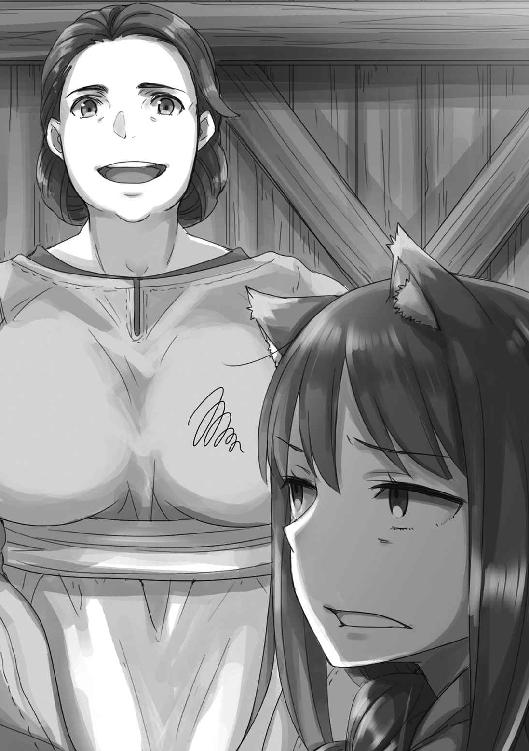
「言っておきますけど、見つからない場所にしまいますから、探しても無駄ですよ」
やはり娘のミューリを叱るのと同じ言葉を向けられる。瓜二つだから間違えられているのだろうか、と訝しむ。
「たわけ」
「たわけではありません。これを探して食料庫をしっちゃかめっちゃかにされては困りますからね。厳重に封をしておきますから、御自慢の鼻も通用しませんよ」
「うう......」
湯屋で一番金がかかるのは食べ物関連なので、ハンナは連れから絶大な権力を与えられている。炊事場の中では、どちらが主人かわからないほどだ。
その上、自分とミューリに対してはことに厳しくするように、と達せられている。
炊事場にはすぐにつまみ食いができるものがいくつかあるが、むしろそれで気を紛らわせろという、囮に近い。
「こんなに働いておるのに、殺生なことじゃのう......」
恨みがましく言っても、ハンナは鉢を返してはくれなかった。
「よく知りませんけれど、今皆さんがかかずらってる仕事が終われば、随分足しになると聞きましたよ。そのあがりで、砂糖漬けでもなんでも頼めばいいじゃありませんか」
「もちろんそのつもりじゃ。じゃが、いつ終わるかわからなくてのう」
テーブルにまた突っ伏したのは、演技でもない。
湯屋には客がそこそこやって来ていて、楽師も戻って来たのでだいぶ賑やかだ。客は歌と踊りがあれば、一日中湯船で過ごしているので放っておける。
この流れになれば、緩急はありつつ、なにもない時間が増える。
だが、今はその空いた時間を全て例の羊皮紙に注ぎ込んでいた。そうしないと仕事が終わらず、これから先、さらに頼みごとが舞い込んできたら秋までに終わらないかもしれない。
もちろん無理な分は断ればいいのだろうが、客たちが慌てて身軽になろうとしているのは、コル坊とミューリの冒険のせいとなると、負い目がないとは言いきれない。
それに、ここで仕事を引き受けておけば、後々に繫がるからと、連れは死にそうな顔で言っていた。
連れのためになるならば、やるしかない。
「じゃが、あのたわけはそんなに稼いでどうするつもりなんじゃ？」
砂糖漬けをしまいに行ったハンナを、テーブルに頰をべったりくっつけたまま見送りつつ、呟いた。湯屋の経営は順調なはず。それとも、二件目でも考えているのだろうか。まさか、自分に桃のはちみつ漬けを買うためではあるまい。そういう本末転倒なたわけた気遣いは、湯屋を構えてからずいぶん減った。
わからないが、わかっているのは、自分もさっさと自分の分をこなさないといけないことだ。
「さて、頑張るかのう！」
ハンナの淹れてくれた葡萄酒を一息に飲んで、寝室に向かう。
村の仕事がある連れは、出かけていて不在だったが、ぎりぎりまで羊皮紙をめくっていたのが、残り香からわかる。
椅子の背もたれにかけられた毛布を手に取り、抱きしめて匂いを嗅ぐ。たっぷり連れの匂いが残っている。
「......くふっ」
葡萄酒と、生姜の効き目も相まって、体がぽかぽかする。開け放たれた木窓をとおって、湯船で奏で謳う楽師たちの音色がかすかに漂ってくる。
静かで、良い日和の午後。
ちょっとだけ、と思ってベッドに横になれば、意識を失うのは一瞬のことだった。
さて、特権状の話である。
金、銀、銅、鉄、鉛、水銀、硫黄、またはそれらを複数含む夥しい数の鉱石類の採掘特権。あるいは交易特権と、それらを計量する特権。等級を格付けする特権。検査をする人間を任命する特権。検査を回避する特権。
小麦、大麦、ライ麦、燕麦は、町によって等級がわけられ、かけられる税金が違うし、他の農作物とは違って、飼料になる藁の部分はまた扱いが全く変わる。さらに麦酒の原料となると、今度は食料ではなく酒とみなされ、葡萄酒、果実酒、ならびにそれらの蒸留酒と関わる特権に分類される。それに関連して、酒の定義を巡って更なる争いがある。特権状には、その定義を無視しても良い特権や、中には争いの際に特定の町の特定の審問官に仲裁をお願いできるという特権まである。
これらの連なりが、肉、魚、毛皮、金属加工品、木材加工品......と無限に存在した。
「......人の世は、底なし沼かや？」
飽きた、もう嫌だと喚く気力もなく、ぽつりと呟いた。
「お前も世の仕組みがわかってきたようだな。ほら、羊皮紙も残りわずかだ」
蠟燭の灯りに照らされた連れの顔は、少し老けただろうか、などと気弱なことを思う必要はどこにもなかった。連れはむしろ作業が進むほど、昔を思い出すのかどんどん生き生きとしてきていた。
「ほら、レノスの毛皮の取り扱いに関する特権だ」とか、「ケルーベの沖仲士の管理特権なんかあるんだな」とか、「リュビンハイゲンの金の輸入特権状だぞ。これがあれば苦労なかったんだがなあ」などと言っては、目を輝かせていた。
ほかにも特権状はこれまで目に見えなかった、たくさんの町と町の繫がりを示しているらしく、連れはどんな酒や飯を食べた時よりも、肌を艶々とさせていた。
寝言でさえ、「あの商品が、この町とこの町の間の特権で保護されているなら......あの町で買いつければ、大儲け......ぐふふ......」などとむにゃむにゃ呟くほどだった。
ただ、そんな連れの横顔をちらちら盗み見ながら、羊皮紙をめくっている間、やっぱりちょっと面白くなかった。
ニョッヒラから遠く離れた、かつて連れと一緒に冒険していた地名を見つけるたびに、連れは嬉しそうな顔をする。そこまではいい。自分もまた、そうなのだから。
あの頃、繰り返しの日々はなく、毎日が新しいことばかりだった。輝くばかりの思い出が、ものすごく短い時間に途方もないくらい詰まっていた。
余りに目まぐるしくて、もう嫌だ、もう勘弁してくれ、と先に音を上げたのは自分のほうだ。連れの冒険を終わらせたのは自分の願いだった。そして、連れはその願いを聞き届けてくれたし、当時こそ若干の未練は見せつつも、今はもう後悔があるようには見えなかった。
つまり連れは、とても遠い目をして、純粋に懐かしんでいるのだ。
そのことが、自分の我がままだとわかっていても、面白くなかった。
連れが昔の旅を思い出し、恋い焦がれるような顔をしていたらよかったのに。
そうしたら、ぬしはまだ懲りてないのかや？ と怒れたのに。
そしてそれから、こう言えたのに。
「ぬしが冒険にまた出たいのなら、わっちは──」
ロエフ川の関所を無税で通り抜けられる特権を無効にする特権状、とかいうややこしいものに大喜びしていた連れの話を聞きながら、塩の関税に関する特権状の地名を写している時のことだった。
連れが静かになり、口から思ったことが出ていたことに、はたと気がついた。
「......」
顔を上げると、連れが不思議そうにこちらを見つめていた。
「......なんでもありんせん」
塩の特権状に視線を戻す。連れはすぐにはなにも言わず、今の今まで大興奮で読み上げていた特権状をもう一度眺めると、静かに言った。
「冒険には出ないよ」
わかっている。
だから、「わっちは」の後には、恨み言が続くわけではない。
「なあ」
と、連れは言った。
「お前、俺になにか隠しているだろ。セリムさんが来てからずっと」
どきり、とした。耳と尻尾の毛が逆立った。
それでも、こう言った。
「なんのことかや」
連れは軽く鼻を擦り、もしかしたら、笑いをこらえたのかもしれない。
「わかるよ」
そして、頭にぽふっと連れの手が乗せられる。
「夫婦だからな」
耳の中に羊毛のこよりを入れられたように、背中がぞわぞわした。
胸の辺りがきゅうっと苦しくなって、涙が滲みかける。
「......たわけ」
「ただ、機嫌がよさそうなのは噓じゃないみたいで、よくわからなかったんだ。セリムさんともうまくやってるようだったし。これでへたに気を利かせたつもりで触ると、ものすごく怒らせそうで、黙ってたんだが」
連れはこちらの顔をじっと見る。こちらは、連れの顔を見ることができない。
「......」
「......」
二人とも黙り、沈黙が降りる。
連れは溜めていた息を吐いて、椅子の背もたれに体を預けた。
ぎいっと傾いだ音がする。
「ミューリとコルが出ていって、なんか気が抜けてしまったもんな」
湯屋はとても静かになった。
「ここの生活に飽きたか？」
連れはちょっと笑っていた。
「そんなこと──」
連れが頑張って盛り立ててきた湯屋だ。ここが自分の家であり、住む場所だ。そこを置いて旅に出たいかと言われたら、そんなはずはない。
だが、最後まで言えなかったし、旅に出たいかという質問を、ついこの間もされた。
自分は、自分のことがよくわからなかった。
「わからぬ......」
正直なところを口にすると、連れは楽しそうだった。
「俺は最近、年老いたな、と自覚するけど、お前は若いままだしな」
「......ぇ？」
情けない声が、喉の奥で泣き声になりかけていた。
連れを見ると、連れはますます笑みを強くする。ということは多分、顔はほとんど泣いていたのだろう。
「ミューリを見て思ってたよ。若いってのはああいうことだって。だとしたら、まるで老成した狼のような誰かさんも、この湯屋での生活には、ちょっと飽きてもおかしくないよなって」
「それは」
そこまで言って、首を横に振った。強く振った。
「飽きてなどおらぬ。そんなことありんせん」
しかし、心の内は平穏ではない。満たされた毎日だけではどうしようもないもどかしさが、確かにあった。
それはどう考えても贅沢でわがままなもので、連れにはどうしようもできないことだった。
時間を止めることも巻き戻すことも、絶対にできないのだから。
だから、本当のことを言ってもいいものだろうか、と躊躇いがある。連れはお人好しなので、変に気を使ったり、あるいは悲しませたりしないだろうかと不安になる。
口ごもっていると、連れはちょっと寂しそうに笑う。
「狼は皆揃って、見栄っ張りなのか？ セリムさんの時はどうしたっけ？」
連れは自分のことを心配してくれる。話を聞いてくれる。しかも、いつだって手の届く範囲にいる。そして、いつまでもいるわけではない。
いつか言うことなら、早く言うべきなのだ。
ぐ、と喉に詰まっていたなにかを飲み下し、ゆっくりと、口を開いた。
「湯屋の生活に、飽きたわけではありんせん」
「うん」
連れはうなずき、ちょっと机の上に手を伸ばすと、鋏で蠟燭の芯を切った。蠟燭の火が大きくなり、明るくなる。
「それで？」
「繰り返しの生活にも慣れておる。わっちゃあ......わっちゃあ、何百年と麦の成長を眺めておったくらいじゃからな」
延々と繰り返す季節に、二度と戻らない時間。
「それに、今は幸せじゃ。とても幸せじゃ」
机の上の連れの手を摑むと、悪戯っぽく指を絡ませてきた。
「じゃが......毎日に変化がありんせん。今日は明日と、明日は明後日と、先月のことは去年の先月と同じで、来月は来年の来月とそっくりじゃろう？ ミューリのたわけとコル坊がおらんようになったら、なおさらじゃ」
連れの指が、こちらの人差し指を少しきつめに絡め取る。
旅の行商人だった頃よりも、皮が軟らかくなった指だ。
「幸せに身を任せておったら、大事な日々がすべて記憶の中で溶けしまう......。賢狼といえど、なにもかもを覚えておくことはできぬ。わっちゃあ、それが怖くなってきたんじゃ。なぜなら」
そして、ついに連れの顔を見た。
どれだけじっと見続けていても、いつか必ず見ることのできなくなる顔だ。
「なぜなら......」
「俺は、お前に永遠には付き添えないからな」
連れはそう言って、額に口づけをしてきた。
お互いにわかりきっているから、あえて口に出そうとしてこなかったこと。見て見ぬふりをしようと暗黙の裡に示し合わせていたこと。スヴェルネルでの騒ぎの時、セリムやその兄たちのせいで、久しぶりに直視しなければならなかったこと。
連れはこちらの頭をぐりぐりと撫でて、言った。
「たとえ俺たちがいなくなっても、その後はセリムの血族が営む宿屋で暮らせばいい......という保険は、あくまでも保険だものな。失くした積み荷がそのまま戻ってくるわけではない」
自分から見たら、まだ生まれたばかりの小僧みたいな連れは、落ち着いて笑っていた。
「それは俺もわかってる。だから色々俺なりに考えてはいたよ。口にしたら、絶対にお前は怒るから言わなかったけど、お前にたくさんのものを残せたらって、いつも思ってる」
息を吞んで連れの顔を見つめ返す。
自分のことを気にかけてくれてとても嬉しいのに、終わりを見据えていることがとてつもなく悲しい。
その二つが喉の奥でぶつかって、苦しかった。
確かに連れがそんなことを口にしたら、自分はこの苦しさに耐えられず、怒っただろう。
そんなことを考えるでない！ と。
「だが、お前は寂しがりで、丸めた毛布にしがみついたまま転寝してるような奴だからな。寒さに震えないでいるための対策は必ず必要だ」
「はあ!? わ、わっちゃあ、別に......」
耳がいきり立ち、頰がさっと赤くなる。狼の姿ならそんなふうにならないのに、この気持ちは、この小さな体には大きすぎるのだ。
「それでまあ、俺なりに考えもあって、そのためにせっせと働いてるわけだが、コルとミューリのおかげで、その計画も早まりそうだ」
「......む、う？」
連れの手が後頭部に回り、滲んだ涙を唇で吸われた。
髭がちくちくとあたり、これが夢ではないのだと教えてくれる。
「そうじゃ......ぬしは、ぬしは、なぜこんなに仕事を引き受けたのかや？ 気になっておったんじゃ。単に、稼ぎたいからなのかや？ 稼いでどうするつもりなんじゃ？」
「金は天国に持ってはいけないしな」
「まさか、わっちに？」
そんな必要などない、と言いかけたが、連れはなぜかやれやれという顔をしていた。
「金を残しても、一人残されたお前はわんわん泣きながら全部酒に変えてしまうか、金になど欠片も興味を示さず麦畑に潜り込んでしまうかのどちらかだろう？」
「ん、なっ」
「まあ、もっと俗っぽいミューリには、きちんと金を残してやりたいとは思うけど」
言葉もないこちらを見て、連れは優しそうに笑う。
「だったら俺は、お前が日向ぼっこしながらでも、あるいは寒い静かな夜に毛布にくるまりながらでも、決して手放さないだろう物を残そうと思ってる。いや」
と、なぜかそこまで言って、恥ずかしそうに頭を搔いた。
「残そうと思ってた、だな。忙しかったし、どうにもそういう習慣がなくて......」
要領を得ない連れにもどかしくて唸ると、連れは「すまんすまん」と笑って、言った。
「本だよ」
「......本？」
連れは肩をすくめていた。
「昔、お前も言ってただろ。わっちとの旅は美談として語り継がせようって」
そんなことをいつか言った気がする。大昔の言い伝えは、そうやって後世に残るものだ。
「でも、口承には限界がある。この特権状の山を見ろ。世の中には到底一人の頭の中には入りきらない物事で溢れている」
連れとの旅でそれなりの町を回って来たのに、目には決して映らない見えない決まりごとがこんなにもある。そして、きっとこれはそのほんのわずかな一部でしかない。
「毎日の生活もそのとおりだ。よく観察すれば、似たような毎日でも些細な違いがあるし、その時々では、些細なことがとても楽しかったりする。たとえば、お前が手首を蛭に吸われてるとかな」
そんな指摘がなぜか恥ずかしくて、自分の手首を隠すようにさすってしまう。
「そういうたくさんのことを、ずらーっと書き溜めておけばいいんじゃないかって思ったんだよ。ほら、蛇の神様を祭っていた村の教会の、エルサさんの書庫で似たようなものをたくさん読んだだろう？」
ようやく思い出す。確かに読んだ。ヨイツの場所を探すため、過去の仲間を探すため、かび臭い地下室で、昔話が書かれたたくさんの本を読んだ。過去になにがあったのか、誰かが記した、物語というやつだ。
「それを、もっと細かく、詳しく書けばいいって思ったんだ。他の誰が読んでもよくわからないが、お前にだけは楽しさがわかるような内容で。そうすれば、昨日は今日とは違うし、去年は今年とはやっぱり違うって、後から振り返ってもわかるだろ？」
「う、む......確、かに......」
うなずくと、連れも満足げにうなずく。
ただ、それから見せた顔は、照れたような困り顔だった。
「とはいえ、俺もちょくちょく時間を見つけてはやってたけど、どうにもな。書きとめることは商いのことばっかりになるし、ミューリが生まれてからはミューリの話ばかりになってしまう」
それで、気がついた。
「あっ、ぬしがたまに書いておったあれかや!? あれは愚痴や恨み言ではなかったのかや！」
驚いて聞き返すと、連れは苦笑いだった。
「ミューリの世話は本当に大変だったからな......。でも、愚痴じゃないよ。お前との喧嘩のことだって、後になって読み返せば笑ってしまうものばかりだ」
そうだったのか、と崩れ落ちそうだった。連れは確かに時折、思い出したようにその日にあった出来事を書いていることがあった。自分との喧嘩なども書いてあって、後々また言い争いになった時のために用意しているものだとばかり思っていた。なんと女々しい雄なのだろう！ と。
「ただ、そんなにたくさん紙を用意できるほど贅沢はできないし、繁忙期は文字どおり書く暇がない」
どうやら話が、机の上の羊皮紙に繫がってきたらしい。
「そのために、稼ごうと？」
「ああ。そもそも、過去になにがあったかを記すなんてのは、貴族様が修道士を雇ってするようなことだからな。後は、大きな町が、町の威信のために、年代記を拵えるくらいだ。そこに、修道院の人々が、この仕事を持ち込んできた」
嬉しそうに話す連れを見て、荷馬車の上にいた時のことを思い出す。儲け話があるんだ、今度はごたごたに巻き込まれず儲けられるぞ！ と阿呆面丸出しに話していた時のことだ。
あの頃となにも変わっていないように見えるのが嬉しく、同時に胸が締めつけられそうになる。
「それで？」
「まず、修道院は紙を扱うからな。恩を売れば安く紙を手に入れられる」
いかにもなことに、やや呆れつつもうなずいた。
「それから、修道院の人々に恩を売りたいという、特別な理由がある。その理由とは......」
連れは視線を机に向け、適当な一枚を手に取った。
ただ、それは特権状ではなく、自分が文字を記した覚え書きだった。
「これだ。この文字のためだよ」
「文字......？」
「お前の字、いつまで経ってもうまくならないんだよな」
「！」
尻尾を踏まれたかのように背筋を伸ばし、連れの髭をむんずと摑む。
「痛い、痛い、怒るな、怒るなよ」
「たわけ！ 確かにうまくないかもしれぬが、読めぬほどでもないじゃろうが！」
連れもそうだが、人の書く文字の優劣が本当に理解できなかった。自分の字はへたらしいので、そのことを否定するつもりはないが、うまく書こうとしてもどうしようもないのだ。
この「人の腕」のせいとしか思えないので、改めて指摘されると心底腹が立った。どうしようもないことなのにと。
「いや、待て、待て。俺も最初は、お前が文字の読み書きに慣れていないからだと思ってた。でも、お前は他のことでは案外手先が器用だからな。そこに、セリムさんの字を見て、もしやと思ったんだよ」
「あやつの？」
突然セリムの名前が出て来て驚いた。
「セリムさんの字もまあ......ひどい」
「読むのも遅いんじゃろ？」
「ああ。で、それとセリムさんの失敗の数々だ」
「......？」
麻縄を取り違えたり、蠟燭を箱に詰め間違えたり、つまずいたり、転んだり、なにかを取り落としたり、がどう繫がるのか。
しかも、それらすべては修道院に恩を売ることに繫がっているという。
神とやらに祈るとでもいうのか？
でも、なんと？
「お前たち、目があんまり良くないんだよ」
「へ？」
呆気に取られた。
そして、そんなはずがない、と思った。
「そ、そんなわけなかろう。普通に見えていんす。それに、暗闇の森だってわっちらは自由自在じゃ」
「じゃあ、この字を写してくれ。見えているのと同じようにだぞ？」
連れは一文字を指差した。知っている字で、すぐに書ける。しゅるん、と丸まった後に右ににょろにょろが伸びて、左下にみゅっと短い曲線がつく。
うまくできた、と思う。
「本当に見たまま書いたか？」
「うむ」
連れは両肩を上下に動かした。
「お前が参考にしたのはセリムさんの字で、しかも微妙に間違ってる」
「なっ」
「お前はそこまで悪くないんだろう。だから確信が持てなかった。けど、セリムさんはかなり悪い。つまずいたりするのもそれが原因だと思う。最近はだいぶなくなってきたが、物の配置を覚えてきたんだろうな。あるいは、匂いかもしれない」
言われ、暗闇の森のことも思い出す。そうだ。その時にはいつも、狼の姿で、鼻と耳を頼りに走っていた。
そして、その驚きの後に、急激に哀しみが襲ってきた。なぜなら、ならば連れの顔も、本当はよく見えていなかったということなのだから。
その一方で、自分の視界に不都合を感じたことがないのもまた、事実だった。
どういうことなのだろうか、と怒りに似た戸惑いに駆られつつ、理性が道を見つけてくれる。
そもそもこの見た目しかわからないから、これが普通だと思い込んでいたのかもしれない。
けれど、ならばどうすればいいと言うのだろう？
「それで、なんじゃ。コル坊のように、神とやらにでも祈るのかや。目が良くなるようにと」
「違うよ。だから修道院なんだ」
連れは言って、人差し指と親指で丸を作り、自分の目に当てていた。
「眼鏡だよ」
「眼鏡？」
「旅の間、どこかで見せたことなかったか？ 水を一滴葉っぱの上に落とすと、なんとも言えない形に膨らむだろう？ ああいう形に硝子を加工して、よく磨いた物だ。文字を大きく拡大して見せることができる。金持ちの修道院なら、質の良い眼鏡がたくさんあるはずだ」
うまく想像できないが、連れが噓を言っているようにも思えない。
そういうものか、と気が抜けたようにうなずくと、連れは指で作った輪っかを、こちらの目に当ててくる。
「聞いた話じゃ、こうして顔につけるものもあるらしい。そうすると硝子が大きくなって、磨くのも大変で価格が跳ね上がるというが、世界が詳細に見えるようになるんだと」
そして、見えたことと、これまで見えなかったことを、字にして蓄えておけばいい。
氷室に雪を詰めておくように、栗鼠が木の実を埋めるように。
連れが指で作った輪っかの向こうに、得意げな笑顔が見えている。
なぜだか、いつもより近くに見えている気がした。
「顔につけるのは、今すぐ買うのは無理だろうが、手元の字を拡大するくらいのやつなら買えるだろ。それから、山ほどの紙もな。そうしたら、お前はもう一度字を練習し直して、そこに覚えておきたいことをどんどん書いていけばいい」
いつまでも忘れない大きな事件を待つのではなく、毎日の些細なことを貯めておく。なにせ、覚えていられないだけで、湯屋での毎日が嫌いなわけではない。日々のあれこれは、なんだって愛すべきことなのだ。
問題は、放っておいたらまとまりなく広がり、腹ばいになってもただ濡れるだけの、あの湯だまりのような記憶になることだ。
それを、文字という形で、熱いままに保っておく。
「俺はせっせと働いて紙とインクを買うから、お前は読み返せないくらいたくさん書いたらいい。最後まで読んだら最初を忘れるくらい書いたら、永遠に飽きないだろ？」
どこまで冗談かわからないし、どこまでも本気のようにも思える。
それが実際に効果的かわからなくても、連れがそこまで考えてくれていることそのものが、泣きたいくらい嬉しかった。
「じゃが......書いてばかりおったら、書きたいことを見逃すかもしれぬ」
「飽きっぽいお前が、きちんと毎日書けるかどうかのほうが心配だけどな」
むっと唇を引き結んで睨みつけると、連れは落ち着いた笑顔で受け止めていた。
「ただ、紙とインクはそこにある。眼鏡もある。文字も書けるとなれば、安心だろ？ 不安になったら、それらの道具で武装すればいい。黒いもやもやをペンでこすって、紙で拭ってしまえばいい」
連れはもしかしたら、自分の中にある暗い井戸のことを知っているのかもしれない。
「大昔の修道士が言ったものさ」
出会った頃より少し歳を取った連れが、あの頃よりも大人になった顔で言った。
「魚を与えれば一日の飢えを凌げる。だが、魚の取り方を教えれば一生の飢えを凌ぐことができる」
賢狼を相手に講釈を垂れる命知らずに敬意を表し、牙を見せて笑った。
「わっちゃあ魚も、欲しい。それと、桃のはちみつ漬けも」
「わかってるよ。だから俺は毎日忙しいんだろうが」
その瞬間、我慢できずに飛びついて、額の右上辺りが連れの頰骨に当たった。がつっと結構よい音がしたし、連れは呻いていたが、気にしなかった。
なぜなら、絶対に自分の胸のほうが、苦しかったのだから。
「たわけ」
心の奥底からひねり出した言葉が、それだった。
「たわけ......」
もう一度言って、尻尾をばさばさと振った。
今は連れの気持ちが嬉しくて胸がいっぱいで、だから金のかかる眼鏡とやらは必要ない、と言いそうになってしまうが、自分もさすがに学んできた。季節のように、気分も巡る。連れの選んでくれた武器があれば、むくむくと湧いてくる黒いものとも、きちんと戦えるだろう。
「眼鏡は確かに欲しい。じゃが、大きなものまでは要らぬ」
「ん......え？ どうせならあってもよくないか？ それに、セリムさんも使えるだろうし」
こんな場面で他の雌の名を出すとは、昔ならば牙を剝いて唸るところだが、そういうこともない。連れはしっかりと自分の腕の中にいるし、自分のことを見てくれている。
「あやつには使わせればよい。じゃが、わっちは要らぬ」
連れは少し残念そうだったが、きっと心からの親切心だろう。もっと良い景色が見えるとか、色々考えてくれているのだ。
けれど、自分はこれまで何百年もこれでやってきた。
自分の世界とは、今見えている世界に他ならない。
「理由を教えて欲しいのかや？」
見上げると、連れの顔が側にある。
「後学のために」
にんまりと、笑う。
「よーく見えてしまったら、ぬしの顔が好みではないと気がついてしまうかもしれぬ。今更がっかりしたくないからのう？」
連れはとても嫌そうな顔をする。
それがわかるだけで、十分なのだ。
「そもそも、眼鏡などに頼らずとも、わっちゃあこの世界でぬしを見つけられたじゃろうが」
連れは目を見開き、やられた、という悔しそうな顔を見せる。
「確かにこれ以上目敏くなられたら困るかもな」
悔し紛れにそんなことを言うあたり、まだまだ可愛い小僧だった。
「じゃあ、セリムさんには文字を見る用のものと、もしかしたら高価な眼鏡を買うかもしれないが、怒るなよ？」
「理由による」
「お前......」
連れの呆れ顔が可愛くて、にっと笑ってしまう。
「まったく......。仕事のためだよ。セリムさんに眼鏡を渡したら、学ぶ意欲もあるようだし、きっと読み書きもうまくなる。根気もあるから、いずれコルがやってくれていた、仕入れや支出の記述に、客への手紙、あるいは村の仕事のための代筆なんかも頼めるようになるだろう。そうすれば俺はだいぶ楽になる」
「わっちには頼まぬのかや」
自分も同じように読み書きができる。
もちろん連れがセリムに仕事を頼み、自分にはそうしない理由は、まあ、わかる。
けれど、わざと尋ねた。机の上にあるものをよく思い出すべきだ。そこにあるのは、目に見えない取り決めを記したものだった。道に迷った時、連れとの間に繫がっている糸が目に見えたら、なにも心配することなどなくなるだろう。
連れはこちらを見て、疲れたようにため息をつく。
実際、疲れたのかもしれない。
なぜなら──。
「お前が忙しくなって、俺が暇になっても意味がないだろ？」
なぜなら連れはこちらのことが大好きで、いつも一生懸命なのだから。
「くふ」
甘やかされている自分に笑い、なぜかひどく安堵している自分に笑う。
「ふふ、あはっ、はははは......たわけじゃ、たわけじゃな」
「まったくだ」
連れも笑い、ひとしきり笑い合ってから、はーあ、と揃ってため息をついた。
慣れとも飽きとも違う、不思議な間合いだった。
「さて、じゃあ、残りに取り掛かってもよろしいですかな？」
連れがわざとらしい、取り繕った言い方をする。
「んむ、さっさと片付けてしまいんす」
過去にも何度かこういうやり取りを繰り返した気がする。
けれど、もうその区別のつかなさを恐れることはなかった。
「それはそうとじゃな」
「ん？」
ペンを手に取りながら、こう言った。
「コル坊がよく言っておったじゃろ。本とやらには題名がありんす。ぬしの名でもつけるかや？」
連れはしばらくこちらを見て、小さく笑った。
「ここの湯屋の名はなんだった？」
「ふむ？ ふむ。確かに、それが一番じゃな」
連れとの記録。自分の忘れがたい記憶。それらを目いっぱい、詰め込めるだけ詰め込もう。
幸せが溢れ出す、春のような、温泉のような本になるはずだ。
誰が見ても苦笑して、やれやれと肩をすくめるものになるはずだった。
あとがき
お久しぶりです。支倉凍砂です。『狼と香辛料』としては約八か月ぶりの新刊になります。お待たせいたしました。一度完結した作品ゆえに、このくらいのペースで今後も出させてもらえたらと思っています。気長にお付き合いください。
ところで、このあとがきが本に収録されている頃にはすでに終了していると思いますが、サブカルカフェ＆Ｂａｒ「Ｎｅｗ Ｔｙｐｅ新宿」様と『狼と香辛料』のコラボカフェというものが開催されていました。コラボカフェというと、大抵、作品のキャラをイメージしたなんとか......というやつですが、今回のは小説の中の料理を可能な限り再現、というものすごく気合の入ったものでした。兎肉とか、ヤギのチーズとか、塩漬けの鰊とか初めて食べました。私が完全に想像で書いた料理もおいしく再現されていて、感激でした。湯屋ということで店内には足湯とかもあって、私はせいぜい盥にお湯を張る程度のものかと思っていたら、観光地とかに置いてそうな超本格的な足湯で仰天したり、開催中は店員さんがホロとミューリのコスプレをしてくれていたりと、作者冥利に尽きました。ありがたやありがたや。
このあとがきを書いている現在も盛況のようで、原作者としても嬉しい限りです。
お越しいただいた皆様も、ありがとうございます。
あとはなんだろう......本当に書くことがない......。酸素を二酸化炭素に変換するか、『フレンズ』でわーい！ と言ってるくらいしか日々のことってないんですよね。しかし『フレンズ』はいいですね。現在は残すところ数話で、終わってしまうのがとても寂しいです。今のところ、トキとハカセの回で泣いてしまいました。何度見返しても素晴らしい。
思い出した。引っ越しをしたので都心から少し離れて、電車に乗るようになりました。最初はスマホでソシャゲぽちぽちやってたんですが、本を開くようにしたら読書量が増えました。もう二時間とかぶっ続けで読む気力も体力もないので、本を開くのが億劫になっていましたが、数十分ならと思って開けば意外に読めるようです。最初のきっかけがいつも重いのですよね。
そんなわけで、今巷で話題のあれやこれやを読んでいます。どれも面白くて辛い。頑張らないと、と思わされます。
新刊をひととおり読んだら、題名だけ知ってて読んだことのない古典とかにもチャレンジ、などと夢想しているのですが、話題の新作だけで多すぎです。いつになることやら。
というような毎日を送っております。
紙幅も埋まってくれたので、この辺で。また次巻でお会いいたしましょう。
支倉凍砂
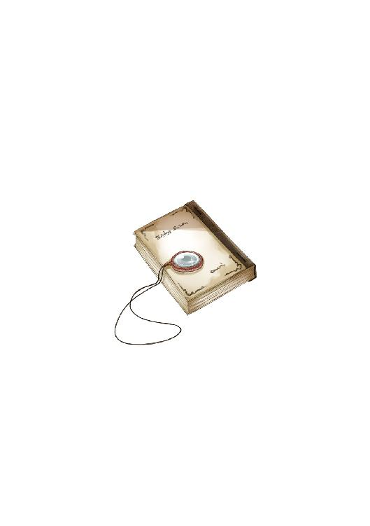
支倉凍砂
１９８２年12月27生まれ。第12回電撃小説大賞≪銀賞≫受賞。ジョギング始めました。一か月くらいはとても順調だったのですが、この間ふくらはぎが走ってる途中に爆発炎上しました。老いを感じます。
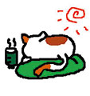
イラスト／文倉十
東京都在住、フリーで細々と活動中。
代表作は『狼と香辛料』挿絵他、『理想のヒモ生活』（ヒーロー文庫）挿絵、VOCALOID『結月ゆかり』キャラクターデザイン等。
本書に対するご意見、ご感想をお寄せください。
電撃文庫公式ホームページ 読者アンケートフォーム
http://dengekibunko.jp/
※メニューの「読者アンケート」よりお進みください。
ファンレターあて先
〒102-8584 東京都千代田区富士見1-8-19
アスキー・メディアワークス電撃文庫編集部
「支倉凍砂先生」係
「文倉 十先生」係
初出
「狼と甘い牙」／「電撃文庫MAGAZINE Vol.52」（2016年11月号）
「狼と花弁の香り」／「電撃文庫MAGAZINE Vol.53」（2017年1月号）
「狼と羊の毛づくろい」／「電撃文庫MAGAZINE Vol.54」（2017年3月号）
文庫収録にあたり、加筆、訂正しています。
「狼と香辛料の記憶」は書き下ろしです。
この物語はフィクションです。実在の人物・団体等とは一切関係ありません。

 電撃文庫
電撃文庫
狼と香辛料
Spring LogⅡ
支倉凍砂
発 行 2017年6月9日
発行者 塚田正晃
発行所 株式会社KADOKAWA
〒102-8177 東京都千代田区富士見2-13-3
03-3238-8745（営業）
http://www.kadokawa.co.jp/
プロデュース アスキー・メディアワークス
〒102-8584 東京都千代田区富士見1-8-19
03-5216-8399（編集）
http://dengekibunko.jp/
本書（電子版）に掲載されているコンテンツ（ソフトウェア／プログラム／データ／情報を含む）の著作権およびその他の権利は、すべて株式会社KADOKAWAおよび正当な権利を有する第三者に帰属しています。
法律の定めがある場合または権利者の明示的な承諾がある場合を除き、これらのコンテンツを複製・転載、改変・編集、翻案・翻訳、放送・出版、公衆送信（送信可能化を含む）・再配信、販売・頒布、貸与等に使用することはできません。
(C)ISUNA HASEKURA 2017
※2017年5月10日発行の電撃文庫『狼と香辛料XIX Spring LogⅡ』初版に基づき制作